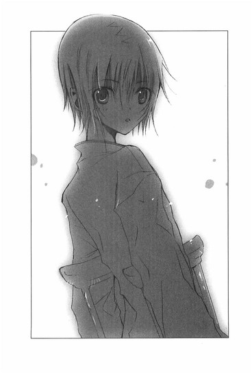
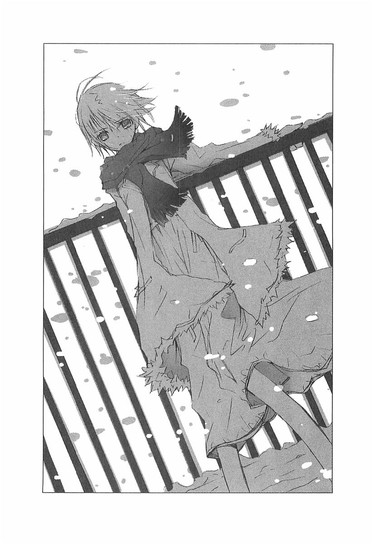

| [野村美月] 文学少女シリーズ05 | |
| 野村美月 | |
| (2015) | |
|
〝文学少女〟と慟哭の巡礼者
野村美月
|
底本データ
一頁17行 一行39文字 段組１段
太字は底本ではゴシック体太字。
「◎」は底本では蛇の目、1-3-27。
「 ◇ ◇ ◇」は底本では１２字下げて「◇ ◇ ◇」。
もうすぐ遠子は卒業する。それを寂しく思う一方で、ななせとは初詣に行ったりと、ほんの少し距離を縮める心葉。だが、突然ななせが入院したと聞き、見舞いに行った心葉は、片時も忘れたことのなかったひとりの少女と再会する！過去と変わらず微笑む少女。しかし彼女を中心として、心葉と周囲の人達との絆は大きく軋み始める。一体何が真実なのか。彼女は何を願っているのか──。〝文学少女〟が〝想像〟する、少女の本当の想いとは!?待望の第５弾！
目次
プロローグ 自己紹介代わりの回想──ぼくがなりたかったもの──
一章 ぼくらは、おずおずと──
二章 井上ミウが死んだ理由──
三章 それは、聖らかな罠──
四章 星を巡る地図──
五章 敗れた少年──
六章 誰が、小鳥を殺したの？──
七章 闇夜の旅路──
八章 慟哭──
九章 きみが空を見ていたころ──
エピローグ 終わりのはじまり──
〝文学少女〟と慟哭の巡礼者
野村美月
今日も電話が、かかってきた。
メス猫の交尾みたいなヒステリックなベルの音が聞こえると、皮膚が一瞬で粟立ち、体が細かく震え、胃を熱い爪で引っ掻かれるような痛みと不快感に、発狂しそうになる。
電話がなければ、世界はどんなに安らかだろう。
電話はいつも、醜い言葉、汚い言葉、呪われた言葉しか吐き出さない。
粘り着くような、恨めしげな、無遠慮な、卑小な、腐臭漂うあの声が、美しくあるべき世界を、ゴミで一杯にしてゆく。
電話のベルを、しつこく鳴らすやつら、みんな死ねばいい！
プロローグ ◎ 自己紹介代わりの回想──ぼくがなりたかったもの
ほんとうのさいわいは一体何だろう。
宇宙の片隅で、そんなことを考えた男の子がいた。
ぼくの幸いは、美羽だった。
あの頃、美羽が隣にいるだけで胸がはずみ、美羽が朗らかな澄んだ声で物語を紡ぐとき、ぼくらを取り巻くあらゆるものが虹色にきらめいた。
「あたし、作家になるんだ。あたしの本をたくさんの人に読んでもらうの。そうしてその人たちが、幸せな気持ちになったらいいなぁ」
あたたかな木漏れ日の下で、ポニーテールをさらさら揺らしながら、美羽は明るい目をして未来の夢を語った。
「コノハにだけ教えてあげたのよ。コノハは特別だから」
綺麗な声でささやいて、首を小鳥のように傾け、いたずらっぽい目をしてじっとぼくを見つめたのだ。
「コノハの夢はなに？ 大きくなったら、コノハはどんな人になりたい？」
キスをしそうな距離まで美羽の顔が寄ってきたので、ぼくはひどく汗をかいてしまい、どっちを向いていいのかわからなくなってしまった。
脳味噌を両手でぎゅっと絞り上げられるほど真剣に考えて、ちゃんと答えなきゃと必死になって、頬を熱くして、やっとのことで、
「ぼくは......木になりたい」
と答えたら、大笑いされた。
あれから三年が過ぎた。
ぼくの聖地は喪われ、美羽は姿を隠した。ぼくは暗い引きこもり生活のあと、平凡な高校生になった。
高二も終わりに近づいた今、ぼくはまだ木にはなれず、幸いの意味もわからないまま、夕暮れの、やわらかな金色に染まる文芸部で、〝文学少女〟の、おやつの作文を書いている。
一章 ◎ ぼくらは、おずおずと
「ラヴクラフトの『インスマウスの影』は、魚の生き血を啜るような味わいね」
いつもの放課後。遠子先輩が突然そんなことを言い出したので、ぼくはぎょっとして、三題噺を書く手を止めた。
校舎の三階の西の隅にある部室は、古い本に占拠されている。積み重ねられた本が、あちこちに塚を築き、狭い上に埃っぽい。
窓際のパイプ椅子は遠子先輩の指定席で、今日も彼女は、そこで本を読んでいた。猫の尻尾みたいな黒くて細い三つ編みを腰の下まで垂らし、スクールソックスに包まれた小さな足を、お行儀悪く椅子に載せ、真っ白な指で、ページをめくる。そうしながら、ページの端を小さく破いては、桜色の唇へ運ぶ。そのまま、口の中でかさこそと咀嚼し、うっとりした表情で飲み込む。
「ああ、なんて美味しいの。この、鼻を突き刺す生臭さ。冷たくて、ぐにゃぐにゃした食感。さすがは怪奇幻想文学の巨匠にして、クトゥルフ神話の生みの親、ラヴクラフトの代表作ねっ！舌にまとわりつく、どろりとした血の酸味がたまらないわ」
おかしい。
遠子先輩は、怖い話が苦手なはずなのに。
『わたしは、この世のすべての本を、食べちゃいたいほど愛している〝文学少女〟よ』
と日頃から豪語しているけれど、そんな先輩にも、弱点はあるのだ。
ぼくがわざと書いたホラーやスプラッタを、口では『へ、平気だもん』と言いつつ、めそめそ泣きながら食べているのに......。今日の遠子先輩は、腐った魚の目玉だの、びちゃびちゃ流れ落ちる血だのを、心から喜んで味わっているようだった。
「ハワード＝フィリップス＝ラヴクラフトは、一八九〇年生まれのアメリカの作家よ。太古の地球を支配していた旧き神々の復活を描いた怪奇小説は、彼の死後に体系化され、〝クトゥルフ神話〟と呼ばれるようになったの。以来、怪しく陰惨な暗黒神話に魅せられた大勢の作家が、クトゥルフを題材にした作品を発表しているわ。
登場する神々は、タコやイカや魚なんかの海の生物に似ていて、ぐにゅぐにゅした触手やヒレがついていたり、びちょびちょで生臭かったりするの。そこがとってもラブリーで、可愛いのよね～」
ら、ラブリー？ 目をしばたかせるぼくに、ますますハイテンションに語り上げる。
「『インスマウスの影』なんて、キュートなお魚の化け物が、うようよ出てきて最高よ。
主人公の青年は、旅行中に港町のインスマウスを訪れるわ。町は生臭い匂いで満ち、住人たちはまばたきをしない腫れぼったい目をしていたり、頭の幅が狭かったりして、どこか魚っぽいの。
そこで、その地にまつわる恐るべき信仰を調べてゆく主人公に、邪悪な影がひたひた迫ってゆくのよ。ああ、でもでもインスマウスも可愛いけれどダゴン様も萌えなのっ。
入門書としては、『クトゥルフの呼び声』がお薦めなので、あわせて読んでみてね。シュールストレミングみたいで、最高に美味しいからっ！」
「シュールストレミングって、世界一臭いって言われている缶詰じゃありませんでしたっけ？発酵したニシンだかなんかの......」
遠子先輩が、満足そうにうなずく。
「ええ、そうよ。そのドブの香りにも似た腐臭は、何十メートル先までも漂い、発酵してふくらみきった缶は、開けた瞬間、殺人的な匂いをまとった汚水を噴き上げるのよ。
口へ持ってゆくまでに、強烈な芳香に鼻が曲がり、涙がぽろぽろこぼれてくるの。そんな困難を乗り越え、にゅるにゅるした塩辛いニシンを、舌全体で味わうあの心地よさといったら、まさにあの世でハッピーバースデーねっ」
「それ、死んじゃってるじゃないですか！」
遠子先輩は、ぼくの突っ込みを無視して、美味しそうに『インスマウスの影』をむさぼり食っている。もはや、ぱりぱりではなく、ばりばりだ。ページをそのまま引き破って口にくわえている。
やっぱりおかしい！
よく見れば、遠子先輩の制服は半袖だ。
冬なのに何故？ てゆーか、受験勉強をするので休部するんじゃなかったのか？
「心葉くん、おやつは書けた？」
遠子先輩がぼくのほうを見て、爽やかに微笑む。なんだか背筋が寒くなりながら、
「は、はい」
と、書き上げたばかりの三題噺を渡すと、上機嫌で受け取り食べはじめる。
今日のお題は〝マーガレット〟〝三味線〟〝水上バス〟だ。バラバラすぎて、まとめるのに苦労したけど、遠子先輩好みの甘いラブストーリーに仕上がっているはずだ。
「ダメ」
へ？
いきなりダメ出しをくらって唖然とするぼくに、遠子先輩は不満そうに頬をふくらませ、口をへの字にひん曲げ言ったのだった。
「水上バスで三味線の演奏をしている青年に、女の子が胸からマーガレットをそっとはずして、恥ずかしそうに渡すなんて甘ったるいお話、全然ダメっ。もっと、血がどばっと吹き上がって、真っ赤に染まった海に肉塊が浮かんで、ダゴン様が登場するような展開じゃなきゃ。こんなの、フルーツのサンドイッチみたいで、爽やかすぎて胸焼けを起こしそうよ」
「って、遠子先輩、いつも甘い話を書いてって──」
「いいえ、わたしの好物は、生のお魚から滴る赤い血よ！」
まばたきもせずに、にじり寄ってくる遠子先輩の顔が、四角くなり、エラがはり、耳がヒレに変わり、手に水かきが現れる。
「と、遠子先輩！ 本当に妖怪みたいですよ！」
「なにを言ってるの、わたしは、上から下まで〝文学少女〟よ。さあ！書き直しよ、心葉くん！どろどろぬるぬるの血まみれホラーを書くのよ！」
すっかり魚の顔になった三つ編みの妖怪が、口を大きく開けて飛びかかってくる。
生ゴミをぶちまけたような腐臭を放ち、汚水がぼくの顔面に降りかかり、その衝撃に、鼻の奥が熱くなり、意識が遠のいた次の瞬間。
「うわぁぁぁっ！」
ぼくは、自室のベッドで目覚めた。
カーテンの向こうは白々と明るく、空気は冷たく、汗まみれの体はぞくぞく震えている。
「ゆ、夢か......」
今日から新しい一年がはじまるっていうのに、なんて初夢だ。
がっくりと肩を落としたあと、ベッドから降りた。
「お兄ちゃん、あけましておめでとうございます」
一階のリビングへ行くと、小学一年生の妹が、大人ぶって新年のご挨拶をしてくる。
「あけましておめでとう、舞花」
頭をなでてあげると、顔を上げて嬉しそうに、えへへと笑った。
「おめでとう、お兄ちゃん。お雑煮、できているわよ」
お母さんがキッチンから声をかけてくる。お父さんは、もうテーブルに着いていて、上機嫌で熱燗をちびちびやっていた。
「ほら、心葉、舞花、お年玉だ」
「わぁい、ありがとう」
「ありがとう、お父さん」
みんなでテーブルについて、お正月のテレビ番組を見ながら、お母さんが作ったお雑煮とおせちを食べる。
「ごちそうさま」
食器を片づけたあと、自分の部屋へ行ってコートを羽織って戻ってきたぼくに、お母さんが尋ねる。
「あら、お兄ちゃん、出かけるの？」
「うん、初詣に行く約束をしてるんだ」
するとお母さんは優しい眼差しになり、嬉しそうに口元をほころばせた。
「学校のお友達と？」
「え......うん」
とっさにつまってしまったのは、〝友達〟と言ってよいのか、わからなかったからだ。
急に胸がそわそわし、恥ずかしくなってしまい、これ以上なにか聞かれる前に、慌てて「行ってきます」と言い、リビングを出た。
玄関のドアを開けると、ぴりっとした冷たい空気が顔にあたった。
新しい年のはじまりの風を、肺一杯に吸い込み、ポストをのぞく。
あ、年賀葉書が、来てる。
輪ゴムでまとめた束をとりあげ、ぺらぺらめくる。
これは芥川くんからだ。筆書きか。さすがだなぁ......。生真面目な文字を見ながら、感心する。こっちは竹田さんだな。丸っこい文字や、可愛らしいイラストが竹田さんらしい。
遠子先輩からも、丁寧なペン書きの葉書が届いていた。普段、椅子をがたがた揺すって、『おなかすいた～、なにか書いて書いて～』と駄々をこねている人が書いたものとは思えない筆跡と内容だ。きっと、うちの家族の目を意識しているのだろう。こういうとこが見栄っ張りなんだよなぁ。
たまに家に電話をかけてくる遠子先輩のことを、お母さんは『本当に礼儀正しい、しっかりしたお嬢さんね』と絶賛している。実は、本を破いてぱりぱり食べてしまう妖怪だと知ったら、ひっくり返るんじゃなかろうか。
もっとも本人は、『わたしは、妖怪じゃありません。ただの文学少女です』と主張しているのだけど。
「あれ......？」
奇妙な葉書を見つけて、ぼくは指を止めた。
なんだろう？ これ？
言葉は一言もなく、球状の胴体に翼をつけた鳥のような生き物が描いてある。上に突き出した二本の棒は、くちばしだろうか？けど角にも見える。顔は猫に似ていて、長い舌をべろんと出している。
子供の落書きみたいだな......。差出人は、舞花のクラスメイトだろうか？
待ち合わせの時間が迫っていたので、葉書の束をポストへ戻して、歩き出した。
「い、井上......」
駅の近くのコンビニの前では、琴吹さんが真っ赤な顔でぼくを待っていた。髪を結い上げ、可愛らしい花柄の着物の上にショールを羽織った格好で、白い息を吐いている。
「ごめん、お待たせ！ って、外で待ってたの？待ち合わせは店の中じゃなかったっけ？」
すると琴吹さんはもじもじしながら、ぼそっとつぶやいた。
「風にあたりたかっただけ」
「でも、寒くない？」
「そ、そんなことないよ」
唇を尖らせ、ムキになって答える。
「そう？ じゃあ行こうか」
「......うん」
あれ？ どうしたんだろう。急に視線を落として、がっかりしているような......。
あ......！
ぼくはぴんときて、言った。
「着物、可愛いね」
とたんに、慌てたように目をむき、必死な声を出す。
「おばあちゃんに、着せてもらったの。お正月だからって......っ。うちは毎年、そうなの。今年が特別なわけじゃなくてっ」
袖をぱたぱた振って赤い顔で言い訳するのを見て、口元がほころんだ。
前は、琴吹さんの考えていることがよくわからなかったけれど、今は少しだけど、伝わってくる。琴吹さんがすごく照れていることとか、ぼくに褒められて嬉しいと思っていることとか。
なんだか気恥ずかしくて、あたたかなものが胸に広がってゆく。
神社に向かって、並んで歩きながら、
「新年のメール、ちゃんと届いたよ」
と言うと、
「井上のメールも、来てたよ」
と、頬を赤く染めたまま、嬉しそうな顔でつぶやく。
そんな、普段の勝ち気な表情とは正反対の、女の子らしいやわらかな表情を見るたび、ぼくの胸もときめいた。
イブの日から、何度かメールのやりとりをした。琴吹さんの文面は、いつもちょっとぎこちない。けれど一生懸命な感じが伝わってきて、好感が持てた。
数日の間に、ぼくらの距離は、前より少しだけ縮まっている。
神社は、参拝客でひしめき合っていた。
列の後ろに並んで、三十分ほどしてようやく賽銭箱の前に辿り着く。
ぼくらはそれぞれお賽銭を投げ入れ、二人で仲良く柏手を打った。
今年は何事もなく、無事に過ごせますように。ついでに、遠子先輩が大学に合格しますように。
隣を見ると、琴吹さんは眉根をぎゅっと寄せて目を閉じ、唇を硬く引き結び、これ以上ないほど真剣な表情で祈っている。
「......」
まるで怒っているみたいな険しい顔だ。一体なにをお願いしているのだろう。よほど大切な願いごとなのだろうか。
じっと見ていると、琴吹さんが目を開けた。
ぼくの視線に気づいて、たちまち赤くなる。
「やだっ！ なんで、こっち見てるのっ」
「いや、ぼく、終わっちゃったから」
「なら、声をかけてくれればいいのに」
「一生懸命お祈りしてるから、悪くて。なにをそんなに、必死に祈ってたの？」
「い、井上には関係ないことだよっ。もぉ、女の子の顔、じろじろ見るなんて最低......」
琴吹さんが慌てて、階段を降りてゆく。
人混みに逆らって進もうとして、そのまま流されていきそうになり、目を白黒させる。
「きゃっ」
「琴吹さん」
ぼくは琴吹さんの手をつかんで、引き止めた。
つないだ手が、びっくりしたように震える。
「！」
「その、人がいっぱいで、危ないから」
真っ赤な顔でぼくを見上げていた琴吹さんが、恥ずかしそうに目を伏せ、ぼくの手をおずおずと握り返してくる。
ぼくはホッとして、笑った。
「これなら、はぐれずにすむね」
「そ、そうだね」
小さな声で答える様子が、可愛い。
繋いだ指は硬く冷たかった。緊張しているのかな。実はぼくも、かなり恥ずかしい。
そのまま人混みの中を、流れに沿ってゆっくり歩き出す。
うつむいて沈黙していた琴吹さんが、急に、消え入りそうな細々とした声で言った。
「......あの......ヘンなこと訊くけど」
「うん、なに？」
「井上って......右のお尻の下に......ほくろとか、あったりする？」
予想外の質問に驚いて琴吹さんのほうを見ると、さっきよりもっともっと赤い顔をして、慌てて早口で言った。
「ち、違うのっ！ 今、ほくろ占いに凝ってて......それで、井上はどうかなって」
「お尻の下に、ほくろあるけど。でも、どうして知ってるの？」
「あるのっ？」
琴吹さんがひどくショックを受けているように顔をゆがめる。それから、また慌てて、
「あああ芥川が、そんなこと言ってたから。そっか、ほくろあるんだ。そうなんだ......そっか、そっかぁ......」
どんどん眉が下がり、哀しそうな悔しそうな顔になってゆく。
「芥川くん、ぼくのほくろなんて、いつ見たんだろ。プールの授業のときかな。お尻の下のほくろって、どんな意味なの？」
「ええっ！ それはえっと......あぁっ！ おみくじ引かない？井上！」
琴吹さんが、ぼくをおみくじ売り場へ引っ張ってゆく。
「神社へ来たら、やっぱりおみくじを引かなきゃ。ほら、早く」
「わ、そんなに急いだら転んじゃうよ、琴吹さん」
どうしたんだろう？ 今度は急に、元気になった。
売り場にはアルバイトの巫女さんがいて、長方形の箱を振ってくれた。そこから長い棒を出し、棒の端に書いてある番号のついた、白い紙を受け取る。
ぼくらは大きな梅の木の下に移動し、そこでおみくじを開いた。
「あ」
琴吹さんが悲痛な声を出す。ぼくは紙に書かれた文字に目を落とし、つぶやいた。
「ぼく、大凶だ」
「ええっ......」
見れば琴吹さんも、おみくじを手にしたまま青ざめている。のぞいてみると、ぼくとおそろいの大凶だった。
「ふ......二人で、大凶だなんて」
ふるふると肩を震わせる。目に悔し涙までにじんでいる。
「気にすることないよ。ほら、そこの枝に結んで、さっさと忘れちゃおう」
「ダメっ、もう一度引く」
「って、琴吹さん」
そこまでムキになることないのに。女の子は、こういうことが気になるのだろうか。
琴吹さんが頬をふくらませ胸をそらし、おみくじ売り場へ向かおうとする。
と、そのとき、横から楽しげに語らう声が聞こえた。
「きゃぁん、あたし、大吉だぁ」
「おっ、オレも大吉」
「よかった～。新年から大凶だなんて、最悪だもんね」
「もともと入ってないっしょ、大凶なんて」
能天気なカップルの会話がカンにさわったのか、琴吹さんがそっちをキッと睨む。
けど、男性のほうは、聞き覚えがあるような......。
「流～、あたしのおみくじも結んでぇ」
「ずるぅい、あたしのも」
「あたしも～」
って、女の子一人じゃないじゃないか！ それに、リュウって！
琴吹さんの目が丸くなる。
梅の木の裏で、女の子三人を相手に愛嬌を振りまいていたのは、遠子先輩の下宿先の息子さんの流人くんだった。
流人くんもぼくらに気づいたようで、ハンサムな顔に気さくな笑みを浮かべた。
「あれ？ 心葉さん！ 意外なトコで会いますね。今日は、琴吹さんとデートすか？」
「えっ、それは──」
琴吹さんのほうを見ると、真っ赤な顔で横を向いてしまった。
「えっと、流人くんは？」
「オレはデート」
悪びれもせず、しゃあしゃあと答える。
「そう、流はあたしとデートなのよ」
「違うわよ、あたしよ」
「あたしよね、流くん！」
女の子たちがもめだす。あ～、彼も新年から相変わらずだ。琴吹さんは、流人くんが仲裁もせず女の子たちを争わせているのが気に入らないらしく、批難の眼差しを向けている。もちろん流人くんは、そんなこと気にせず平然としている。逆に、琴吹さんのことをじろじろ眺め回し、
「着物、いいすね。美人はなに着ても似合いますね」
と愛想良く笑う。
琴吹さんが、ますますムッとした顔になったときだ。
ショパンの『別れの曲』が、唐突に流れた。
「あ、ご......ごめんっ」
琴吹さんが急におろおろし、ピンクの携帯電話を取り出し、それを見ながら離れてゆく。
「あれ、男からすね」
流人くんがシリアスな顔を作り、ぼくの耳にささやいた。
「なに言ってんのさ」
「いーや、オレのカンと経験から見て、間違いないっす。友達や家族の電話じゃ、あそこまでうろたえませんって。きっと前の男がヨリを戻そうとか、言ってきてるんすよ」
「わぁ、ドラマチック」
「でもぉ、結構ありがちだよね～、そういうの」
「うんうん」
喧嘩していた女の子たちまで、仲良くうなずいている。流人くんは、したり顔で、
「ああいうカタそうな子にかぎって案外浮気性だから。二股かけられないよう気をつけたほうがいっすよ、心葉さん」
なんて言う。棘があるように感じるのは気のせいだろうか。
「それはきみだろ。新年早々三股かけてたって、遠子先輩に言うからね」
すると流人くんは情けない顔で、天を仰いだ。
「勘弁してください。また鞄でボコられます」
やっぱり遠子先輩には、頭が上がらないらしい。
そこへ琴吹さんが、ばたばたと戻ってきた。
「ごめんね。急ぎのメールだったから。あ、でも......、もう大丈夫だから」
なんだか必死な様子で言う。
「流～、邪魔しちゃ悪いから、行こう」
「あたし、甘酒が飲みた～い」
「カラオケ、した～い」
「はいはい。じゃあ。心葉さん、琴吹さん、また」
「ばいば～い！」
にぎやかに去ってゆく流人くんたちを、ぼくらは、しばし茫然と見送った。
「えっとその......ぼくらも、お茶にしようか」
「......うん」
そのままファミレスへ、移動した。
「琴吹さん、携帯の着メロ変えたんだね」
「え？」
「前に聞いたのと違うから」
女性アイドルのヒット曲を口にすると、クリームあんみつをつつく手を止めて、みるみる赤くなった。
「あれは、井上......だけなの」
切れ切れに言う。
「ぼくだけ？」
「友達とか、家族とか......相手によって着メロを変えてるんだ」頬をふくらませ勝ち気な上目づかいをしたあと、また急に気弱な目になる。「あの曲は、井上の、専用なの」
「そ、そうなんだ」
どうしよう、ぼくも顔が熱くなってきた。
確かあの曲って、サビで女性アイドルが可愛い声で『大好き、大好き』って繰り返す、べたべたのラブソングで......。
「井上は、着メロ、わけたりしてる？」
「いや、みんな同じだけど」
「そう......」琴吹さんが、唇をきゅっと噛む。
なんだかいじらしくて、ぼくは微笑んだ。
「でも、変えてみようかな。そうしたら誰の着信かすぐわかるし、便利だよね。琴吹さんはどんな曲がいい？リクエストとかある？」
琴吹さんが身を乗り出す。
「『美女と野獣』のテーマ」
思わずというように口にしたあと、恥ずかしそうに身を引き、スプーンをあんみつに突っ込み、かちゃかちゃ鳴らす。
「えっと、あの......小さい頃、ディズニーの映画を見て、ハマっちゃって。メロディも綺麗だけど、歌詞もすごくいいの。日本語バージョンのやつとか、超好き。井上の着メロ決めるとき、どっちにしようか迷ったんだ。だから......」
「うん、わかった。『美女と野獣』だね。じゃあ、琴吹さんの着メロはそれにしよう」
携帯を出してパチンと蓋を開き、着メロのサイトに繋ごうとすると、琴吹さんが慌てて止める。
「や、バカ、ここで探さないで、聴かないで」
「どうして？」
「ダメ、ダメったら、ダメ！ ......い、家で、こっそり変えて」
唇をツンと尖らした顔で真剣に凄まれて、吹き出しそうになってしまった。
琴吹さんがふくれっつらで、あんみつを食べる。
ぼくは微笑んだまま言った。
「ねぇ、来週、映画に行こうか」
「本当？」ぱっと顔を上げる。
「うん。なにが見たい？ ディズニーで、なんかやってたかな」
「井上は？ 普段、どんなのを見るの？」
「そうだな......」
胸の奥が、くすぐったい。けれど心地いい。
琴吹さんと、お互いの趣味の話をして、映画のタイトルを決めて、待ち合わせの場所と時間を決めて、
あたりまえで、恥ずかしくて、くすぐったい会話を、時間を忘れて長々として、
「あのっ......あたし頑張るからっ。その、今年もよろしくお願いします！」
別れ際。静かに暮れはじめた十字路で、真っ赤な頬の琴吹さんが、ぼくを見上げ、息をはずませてそう言い、頭を下げた。
「うん、ぼくこそよろしく。今日はとても楽しかったよ」
笑顔で答えると、琴吹さんの顔にも、夕暮れのやわらかな光のように、ゆっくりと笑みが広がった。
「え......映画、楽しみにしてる。メールもする。また、ね」
恥ずかしそうにささやいて、着物の袖を揺らして、早足で去ってゆく彼女を、満ち足りた気持ちで見送った。
家へ帰ると、机の上にぼくの分の年賀葉書が置いてあった。
「あれ、この葉書......」
出かけるときに見た、鳥と猫のお化けみたいなやつだ。舞花のものが紛れたのかと思って宛名を見ると、子供みたいな不安定な字で、〝井上心葉様〟とあった。
ぼく宛？
けど、差し出し名はどこにもない。
誰かのいたずらかな......。
深くは考えず、葉書を置いた。
椅子に腰かけ、携帯電話を開いて、『美女と野獣』の着メロを検索し、オルゴールのやつをダウンロードする。
ああ、この曲か......。
セリーヌ＝ディオンが、ピーボ＝ブライソンとデュエットしたやつだ。ＣＭで流れているのを聴いたことがある。おだやかで優しい曲だ。ついでに日本語バージョンの歌詞も検索してみる。
すばらしい ものがたり
おずおずと ふれあうわ 指と指
ほんのすこし すこしづつ
やさしさが ひらいてく 愛のとびら
訳にちょっとアレンジが入っているみたいだけど......。
人混みの中で、琴吹さんと手を繋いだときの、ひんやりしたぎこちない感触を思い出し、胸が甘く締めつけられた。
決して燃え上がるような激しい気持ちではないけれど......。おずおずと、少しずつ。
ぼくらは、近づいているのかもしれない。
セリーヌ＝ディオンが歌う英語バージョンを、パソコンでダウンロード購入し、その夜、ヘッドホンで繰り返し聞いた。
目を閉じるぼくの脳裏に、別れ際に琴吹さんが見せた、夕暮れの残照のようなやわらかな──幸せそうな笑顔が、幾度も浮かんだ。
映画に行けなくなったと、メールが届いたのは、約束の前日だった。
『ごめんなさい。明日は行けません。しばらく電話もメールも、無理かも』
理由は書いてなかった。
ぼくが送ったメールへの返信もなかった。
何故、急に約束をキャンセルしてきたのかわからなかった。
漠然とした不安が胸の奥に溜まってゆくまま、二日が過ぎたあと、後輩の竹田さんから携帯に電話があった。
『あっ、心葉先輩っ、大変ですよぉ！ ななせ先輩が怪我をして、入院しちゃったんです。階段から落ちたんですって！』
◇ ◇ ◇
きみはとても危険で傲慢で自分勝手で、僕はきみが大嫌いで憎んでいた。
どうしてきみは、あんな風に残酷に振る舞って、僕を傷つけることができたんだ。
僕の心が、きらきら光る透きとおった刃物でずたずたに切り裂かれ、絶叫し、臭い匂いのする血を流し、悶え苦しむのを、きみは笑って見ていた。地面にこぶしを叩きつけ、涙をこぼす僕の背中を、きみは軽やかに踏みつけていったのだ。
きみが春口とどんな話をしたのか。きみが峰とどこへ行ったのか。僕が知らないと思っていたの？
きみが春口を言葉巧みに惑わしたことも、峰に体を触れさせたことも、二人で水の中で戯れていたことも、僕はみんな知ってたよ。この目でちゃんと見てたよ。
そうして、体が青く燃える火に投げ込まれ、焼けた鉄串でぐちゃぐちゃに突き回されるような痛みを味わっていた。
いつもいつも、きみは苦しむ僕を見て、愉快そうに笑っていた。
そうして僕にすり寄って、いろんなものを僕から盗み、僕を破滅させた。
だから、ねぇ、僕がきみに復讐をしても、許されるだろう？
二章 ◎ 井上ミウが死んだ理由
「えー、お見舞い？ 行くべきですよ。当然じゃないですか」
携帯電話の向こうで、竹田さんは呆れたように叫んだ。
「でも、琴吹さんにメールしたら、来ないでほしいって」
ぼくは、ひどく戸惑っていた。
映画をキャンセルしてきた琴吹さんが、約束の前日に入院していたことにも驚いていたし、やっと戻ってきた琴吹さんからの返信メールが、やけにそっけないことも、恥ずかしいから見舞いに来なくていいと書いてあったことも、どう判断していいのかわからなかった。
入院のことを黙っていたのも、夏に入院した病院にまた入院することになったのが、みっともなかったからと説明していた。
その気持ちは、わからないでもないけれど......。
夏に遠子先輩とお見舞いに行ったとき、琴吹さんは終始ぶすっとして機嫌が悪く、ぼくと病室に二人きりになったとき、迷惑そうにそっぽを向いていた。
琴吹さんの性格からいって、弱っている姿を見せたくないのかもしれない。本当に、来てほしくないのかも。来るなと言われているのに顔を出したら、嫌な思いをさせてしまうんじゃないか......。
悩んだあげく、竹田さんにメールで相談したら、すぐに電話がかかってきて、「心葉先輩は、女心がわからなすぎです」と、説教されてしまったのだった。
「そんなの口では強がってても、内心は来てほしいに決まってるじゃないですか。もぉ、本当にダメダメです。やっといい雰囲気になってきたのに、お見舞いにも来てくれない彼氏なんて、最悪ですよ。ななせ先輩泣いちゃいますよ～」
アニメのキャラっぽい可愛い声で、ずばずば言う。
「そういうものかな......」
「そーゆーものですっ」
きっぱり断言されて、琴吹さんのお見舞いへ行くことに決めたのだった。
翌日、花屋さんで、ピンクの薔薇と、苺の実みたいな赤いストロベリーキャンドルで小さな花束を作ってもらい、それを持って病院へ行った。
「えっと......琴吹さんの病室は......」
以前にも来たことがある、薬の匂いのする広々とした廊下を歩きながら、部屋の番号を確認していたときだ。
「井上」
声をかけられて顔を上げると、黒いニットにジーンズの芥川くんが、硬い表情で立っていた。
「琴吹の見舞いに来たのか？」
「え、芥川くん、琴吹さんが入院したこと知ってるの？」
芥川くんが瞳に影を落とし、端整な顔を少しだけゆがめる。
「ああ......さっき本人にな」
芥川くんのお母さんは、もう何年も意識がないまま病院のベッドで眠り続けている。
なので、彼が病院にいるのは不思議ではない。きっとお母さんのお見舞いに来たのだろう。
「琴吹さんと、会ったの？」
「ああ......」
歯切れの悪い声で、答える。
どうしたのだろう。彼は、なにをそわそわしているのだろう。
「琴吹さんの怪我の具合はどうなの？ひょっとして、すごく悪いの？」
「いいや......。すぐに退院できるそうだ」
「そう、よかった。でも、階段から落ちたらしいけど、どこの階段から落ちたんだろう。駅かな？芥川くん、なにか聞いてる？」
「......いや」
芥川くんは苦しそうに視線をそらし、黙ってしまった。
それから、のろのろと口を開き、
「琴吹の病室はそっちだ。だいぶ疲れているようだから、長居はしないほうがいいかもしれない」
「うん、わかった。ありがとう」
ぼくはお礼を言って、芥川くんと別れた。
視線を感じて振り返ると、芥川くんは廊下に立ったまま、こわばった表情でぼくを見ていた。
ひょっとして心配してくれてるのかな。子供じゃないんだから、病室くらい一人で見つけられるのに。
「あ、ここだ」
メモに書いてある番号の前で、ぼくは立ち止まった。『琴吹』と名札もついている。
中から話し声が聞こえる。
同室の人がいるのかな？
ドアをノックして、そっと開けると、四つあるベッドのうち二つが埋まっていて、高校生くらいの女の子と、小柄なおばあさんが、ぼくを見た。
「すみません。琴吹ななせさんのお見舞いに来たんですけど」
「ななせちゃん、今、いないよ」
女の子が明るい顔で答える。続けて、おばあさんが言う。
「もうそろそろ、検査から戻る頃なんだけどねぇ......」
「そうですか」
二人とも、ここで待っていたらと勧めてくれたのだけど、照れくさくて、廊下に出た。
そこでぼんやりしていたら、意外な人が現れた。
「心葉くん」
「遠子先輩！」
冬休みだというのに紺のダッフルコートと制服に身を包んだ三つ編みの〝文学少女〟は、ピンク色の花束を手に、こぼれるような笑みを浮かべた。
「心葉くんも、ななせちゃんのお見舞いに来たの？」
「そうですけど、遠子先輩は受験勉強をしなくていいんですか？センター試験は目の前ですよ。まさかまだ二年生の数学を解いてるんじゃないでしょうね」
遠子先輩が、ぷぅっと頬をふくらます。
「ちゃんと三年生の問題をやってます。解けてるかどうかは別だけど」
「別じゃマズイじゃないですか」
「もぉ、千愛ちゃんから、ななせちゃんがまた入院したって聞いて、心配して駆けつけたのに。辛気くさい話ばかりしないでちょうだい。ななせちゃんの怪我が悪化しちゃうわ」
「遠子先輩の受験と、琴吹さんの怪我の具合は、まったく関係ないと思います。それと、琴吹さん、今は部屋にいませんよ」
「あら、そうなの？」
遠子先輩が黒目がちの瞳を見開き、睫毛をぱちぱちさせる。それから、くすりと微笑んだ。
「なら、わたしもここで待ちましょうっと」
そうつぶやいて、細い肩を壁に軽く押しつける。
「ねぇ、心葉くんの年賀状、元旦に届いたわ」
「うるさく催促したのは誰ですか」
「だって、心葉くんのおやつを食べなきゃ新年がはじまらないもの」
「葉書一枚に三題噺書くの、苦労したんですよ」
「ありがとう。とっても美味しかったわ。ふんわり冷たいアイス大福を囓っているみたいだった」
遠子先輩が目を閉じ、甘い溜息をつく。
そんな風にまっすぐに褒められると、ぼくはいつも胸の奥がこそばゆくなって、落ち着かなくなる。だからついヘンな話ばかり書いて、遠子先輩に『ひど～い、マズ～イ』と、悲鳴を上げさせてしまう。けど、受験生の遠子先輩に、おかしなものを食べさせて、万一のことがあったら困るから......。
薬の匂いのする廊下は、吐息の音まで聞こえそうなほど静かで、真っ白な大きな建物の中に、遠子先輩と二人きりでいるような不思議な気分になった。
「遠子先輩は、どこを受験するんですか」
無謀なことに国立しか受けないと聞いているけれど、志望校は知らない。都内か、その周辺なのだろうか。
それとも......。
「えっと、東大と」
「東大！」
あんまりびっくりして叫んでしまったあと、病院にいることを思い出し、慌てて声をひそめる。
「冗談でしょう。数学で〇点とか三点とかとっている人が受けるなんて、どこの国の東大ですか」
遠子先輩が、すまして言う。
「やだ、心葉くん。東大と言ったら東京大学よ。鴎外や漱石や太宰や芥川が青春時代を過ごした旧帝大よ。赤門と三四郎池と安田講堂と銀杏並木のある、日本の最高学府よ」
「大学を観光名所かなんかと勘違いしてませんか？本当に受ける気ですか」
「ええ。受験生なら一度は東大にチャレンジしなきゃ。もちろん本命は別だけど、万一浪人したとき、『東大受験に失敗して......』と言うほうが、聞こえがいいじゃない」
「落ちたときのこと考えて、見栄張ってどうすんですか」
頭を抱えたくなってきた。ああ、この人、落ちるんじゃないか。浪人確定なんじゃないか。お賽銭の五十円を返してほしい。
「......遠子先輩。もう帰ったほうがいいです。今さら無駄かもしれないけど、勉強しましょう」
「え、でも、ななせちゃんがまだ」
「お見舞いは、また今度にしましょう。ぼくも帰りますから、遠子先輩も、家で数学の問題集を解いてください」
もう一時間近く経っている。ひょっとしたら、検査が長引いているのかもしれない。
外から、午後三時を知らせる鐘の音が聞こえた。駅前に設置された仕掛け時計だ。
遠子先輩が溜息をつく。
「......そうね。残念だけど、お花だけ置いていきましょう」
病室に戻り、遠子先輩の花とぼくの花をまとめて花瓶に活け、琴吹さんに伝言のメモを残し、病院をあとにした。
「心葉くんは、ななせちゃんとおつきあいしているの？」
みぞれが降りそうな鉛色の空の下を歩きながら、遠子先輩が尋ねる。
それは、普段と全然変わらない会話をするような、何気ない口調だった。
けれどぼくは、胸の奥が擦れるような後ろめたさを感じ、ぽつりとつぶやいた。
「......ええ、まぁ」
遠子先輩の顔をまともに見ることができなかったのは、恥ずかしかったからだろうか。
それとも、他に理由があったのだろうか。
視線をそらしたまま歩を進めるぼくに、遠子先輩が姉のように優しい声で言う。
「そう......流人みたいに浮気しちゃダメよ」
胸が、またずきりとする。ぼくはそっけない口調で、
「流人くんの真似は、しようと思ってもできません」
とつぶやいた。
話題を変えるために、初詣の神社で、女の子を連れた流人くんに会ったことを話すと、遠子先輩は思いきり頬をふくらませた。
「もうっ、あの子ってば、どうしてあんなに気が多いのかしら」
女の子が大好きで修羅場上等の弟分が、姉として心配らしい。ぶつぶつ文句を言う。
ぼくも、遠子先輩にとっては、流人くんと同じで、世話の焼ける弟のようなものなのかな......。
何故か、切ない気持ちになった。
そのまま、別れ道に辿り着く。
すると、遠子先輩は、また包むようなやわらかな眼差しになり尋ねた。
「明日も、ななせちゃんのお見舞いに行くの？」
「はい、そのつもりです」
「わたしは、明日は行けないけれど、ななせちゃんに、ゆっくりリハビリをするように言ってあげてね」
「わかりました。伝えておきます」
答えるぼくに、水のように澄んだ綺麗な笑顔を向けて、去っていった。
車の行き交う道路の端を、一人で歩きながら考える。
ぼくは、琴吹さんを好きになりはじめている。
このまま琴吹さんとの距離が、もっと縮まればいい。
そして受験が終わり、鬱々とした冬が過ぎて春が来たら、遠子先輩は卒業してゆく。そうしたら、遠子先輩との距離は、逆に遠くなってゆくのだろうか。
空がまた少し、重く暗くなったようだった。
「遠子先輩、どこの大学を受けるんだろう」
電車で通える距離に、遠子先輩が受かりそうな国立大学があっただろうかと思い浮かべながら、コンビニへ入る。
雑誌コーナーを通り過ぎようとしたとき、週刊誌の見出しが目に止まった。
「！」
足がその場にすくんでしまったのは、『井上ミウ』という文字を見たせいだった。
それは、電車の中吊り広告でよく見る、嘘っぽい記事ばかり載せたありふれた週刊誌だった。いつもなら見過ごしにしていただろう。
そう、ぼくがかつて謎の天才美少女作家と呼ばれた『井上ミウ』本人でなければ──。
〝井上ミウは、自殺していた!?〟
喉が、ごつごつした手で締めつけられたように苦しくなり、指先が冷たくなった。
硬い唾を無理矢理飲みくだし、ぼくは、ぼくの死が報じられた雑誌を、震える手でつかみ、レジへ向かった。
部屋のドアを閉めるなり、エアコンのスイッチを入れることも忘れ、コートを着たまま、記事を読みふける。
史上最年少の十四歳で、文学雑誌の新人賞を受賞し、一躍ベストセラー作家になった井上ミウは、何故消えたのか？謎の天才、深窓の美少女と呼ばれながら、二作目を書くことをしなかったのか？
実はミウは、受賞作が発表された直後に、当時在籍していた中学校の屋上から飛び降り自殺をしたと、記事は語っている。
ミウの正体は、都内の中学に通う平凡な少女だった。クラスで孤立していた彼女は、休み時間も一人で趣味の小説を書き続けていたのだと。
クラスメイトの証言も載っていて、『あたしたちの間では、井上ミウが受賞したときから、Ａがミウなんじゃないかって噂してました。だって名前が同じだし、受賞作を読んだら、うちの学校をモデルにしたっぽい描写があったから』と書かれていた。
また、受賞の直後から、彼女の様子がおかしくなっていったことも......。
『もともとお高くとまっていて、あたしたちなんか相手にしないって感じだったけど、その頃は特に苛々していて、よく早退してました。二作目の執筆で忙しいのかなと思ってたんですけど......。顔色も悪くて、赤い目をしていて、病気っぽい感じでした』
さらに、こんなことまで。
『ミウの本をＡに見せて〝あなたが書いたの？〟って訊いたんです。そしたら、すごい目で睨まれて、いきなり本を取り上げて床に叩きつけたんですよ。それで、本を足で踏んづけて、〝あなたたちに、関係ないでしょう！〟って怒鳴ったんです。Ａが屋上から飛び降りたのは、そのあとでした』
Ａさんは一命を取り留めたが、転校してゆき、行方はわからない。
文学界に彗星のように現れた早熟の天才、井上ミウが復活することは、おそらくないだろう。Ａさんは屋上から身を投じた瞬間、作家〝井上ミウ〟を殺したのだ。
そう記事は結ばれていた。
ぼくはページをぐしゃりと握り潰し、そのまま引き千切った。
冷え切って感覚のなくなった手で、ひたすらページを裂いてゆく。胸が捻り上げられ、頭が割れそうに痛い。
クラスメイトの証言が、本物なのか記者の捏造なのかわからない。けれど、ここに書いてあるのは、井上ミウのことじゃ──ぼくのことじゃない！
これは、美羽のことだ！
何故、何故、美羽がぼくと間違えられて、こんなゴシップ雑誌に、こんなひどい記事を書かれなきゃいけないんだ。
美羽は、井上ミウじゃない。
井上ミウは、ぼくなのに。
怒りで目の奥が真っ赤になり、喉が焼けつきそうになる。こんな、こんな記事、最低だ！こんな興味本位な──他人の顔を土足で踏みつけるような──汚い記事！
ああ、けど。琴吹さんも言っていた。『中学のとき、井上といつも一緒にいたあの子が、井上ミウなんでしょう？』と。
美羽がいつも、ルーズリーフに小説を書いていて、新人賞に応募すると語っていて、名前が〝ミウ〟だから。井上ミウが受賞したとき、美羽が受賞したと思ったと。
クラスメイトが、同じように考えたって不思議じゃない。いや、むしろ、美羽のあとにくっついて、美羽の語る物語に耳を傾けているだけの、あたりまえの中学生に過ぎなかったぼくを、井上ミウと思うより自然なことだ。
そう考えたとき、背筋がぞっとし、目眩がした。
当時ぼくは、受賞するつもりのなかった賞をもらって混乱していた。おまけに美羽に無視されて、どうしていいのかわからなくて、自分のことで手一杯で、クラスメイトたちが、美羽のことをそんな風に噂していたなんて、知らなかったのだ。
美羽が、井上ミウの正体だと思われていたなんて！
美羽も、そのことを知っていたのだ！ 井上ミウの本を床に投げつけ、踏みつけたという記事に、胸を切り裂かれる。
美羽はどんな気持ちで、クラスメイトたちの噂を聞いたのか。自分に向けられる好奇心と羨望に満ちた視線を、どんな思いで受け止めたのか。
本当は、ぼくなんかじゃなくて、美羽こそが大賞に選ばれて、作家になるはずだったのに！それが美羽の夢だったのに！ぼくにだけ、こっそり教えてくれたのに！
ぼくは美羽に、美羽なら絶対に大賞がとれるよ。応援するよと言ったのに──！
「──ッ」
破いても破いても、頭にこびりついた汚い文字は、消えない。紙の端で手の皮が切れ、血がにじみ、ひりひりする。それでも、狂ったように破き続ける。
吐き気が込み上げ、頭が熱く燃え上がり、ばらばらに千切れた記事の中に、ぼくは胸を服の上から鷲づかみし、体を叩きつけるように、うずくまった。
喉が激しく痙攣し、息ができないっ！
カーペットに顔をこすりつけ、身悶えるぼくの口から、呻き声がこぼれる。噴き出る汗が、体から温度を奪ってゆく。
ずっと考えないようにしていた。
けれど、美羽が屋上から飛び降りたのは、美羽の一番の読者だったぼくが、美羽の代わりに、賞をとってしまったからじゃないのか？
ぼくが、美羽の夢を奪ったからじゃないのか!?
違うっ、違うんだ！ そうじゃないんだ！ ぼくが小説を書いて美羽と同じ賞に応募したのは、美羽を差し置いて賞をとるためなんかじゃなかった！
刃物で抉られるような胸の痛みに、気が遠くなる。
カーペットに爪を立て、いくら呻いても、痛みはおさまらない。心臓を冷たい手がぎしぎしと捻り上げる。
助けて、許して、美羽っ！ 美羽っ！
◇ ◇ ◇
なにもかも、奪ってやろう。そう思ったのはいつからだろう。
小学生の頃、きみの家へよく遊びに行ったね。
きみの部屋には雲の絵がプリントされた空色のカーテンがかかっていて、若草色のカーペットが敷きつめられ、その上に動物の形のクッションがいくつも転がっていたね。
お母さんが作りすぎちゃったのだと、きみはシマウマのクッションを抱きしめて、笑っていた。
張り出した窓の手前には、金色の鳥かごが置いてあって、真っ白な小鳥が「ちちち......」と可愛らしく鳴いていたっけ。
きみが鳥かごに顔を寄せると、小鳥も寄ってくる。きみが笑いかけると、小鳥も嬉しそうに羽をぱたぱた揺らす。きみは鳥かごを開けて、指に小鳥を乗せ、くちばしにキスしたり、鳥と一緒に歌ったりしていたね。
僕らは、若草色のカーペットに転がって、宿題をしたり、絵本を読んだり、宇宙の話をした。
ときどき、ドアが開いて、きみのお母さんが、甘いミルクティーやホットケーキをトレイに載せて、やってくる。
そうして蜂蜜のような笑顔で、「ちゃんと手を洗ってから、食べるのよ」と優しく言うのだ。
学校が終わると、毎日、毎日、毎日、毎日、僕はきみの家へ出かけたね。
けれど、本当は、きみの家になんか行きたくなかった。
きみの家は、綺麗な鳥かごのようで、あの白い小鳥のように羽を切られ、閉じこめられているような気がして、胸がつまった。
きみの家の玄関をくぐるとき、僕はいつもおなかの下に力を入れ、甘ったるいお菓子の匂いのする空気を吸い込まないように、息を止めていたんだよ。
自分の家に帰りたくないのでなければ、あんなひどい家になんか、わざわざ行かなかった。
あの小鳥だってきっと、餌をもらうために、きみを好きなフリをしてるだけなんだ。
だから小鳥が、きみの唇をくちばしでちょんちょんとつつくとき、（本当は自由を奪われて、憎らしくてたまらないんだろう）（そいつの唇を噛み切っちまえ、目玉をほじくり出してやれ）（鼻をえぐりとって、思い知らせてやれ）って、頭が火みたいに熱くなるほど念じていた。
きみのお母さんも、性悪の豚だ。
僕が来ると、笑顔の裏から、蛇みたいにねっとりした視線を向けてきて、目の中に青い火をぱっと飛び散らせて、僕を睨み殺そうとする。
おやつを持ってくるふりをして、僕のことをこっそり監視していて、僕がお手洗いを借りるため下に降りてゆくと、必ずキッチンから出てきて、僕のあとについてきた。
きみに似た小さな赤ん坊が、涎を垂らし、はいはいしながら僕のほうへやってきたので、可愛がってやろうとしたら、鬼みたいな形相ですっ飛んできて、赤ん坊を抱き上げて、僕から引き離した。
きみのお母さんは、針の先に毒を塗り、皮膚をちくちく突くように、非道い仕打ちをし続けてきた。甘い砂糖の衣でくるんだ苦い菓子を、僕に与え続けていたのだ。
あまり家に来ないでほしいと言われたとき、手に持っていたハサミで、喉をかき切ってやろうかと思った。
きみの家が、嫌いだった。
きみの家族が、吐き気がするほど、嫌いだった。
けれどきみが、一番、一番、大嫌いだった。
◇ ◇ ◇
翌朝、目覚めると寒気がした。
頭も痛い。風邪を引いたのだろうか。
視線をカーペットに落とす。
あの記事の残骸は、もう散らばっていなかった。昨日、お母さんに見つからないように、必死に這いつくばってかき集めて、紙袋に入れて、他のゴミと一緒にまとめてポリ袋に入れて、夜中にゴミの集積所まで持って行ったのだ。
──井上ミウは、何故、死を選んだのか。
その言葉は、目覚めた今も、ひりひりした痛みを伴いながら、頭の奥に刻印のように焼き付いている。
美羽はぼくのせいで、飛び降りたのではないかと。
唇をぎゅっと噛み、重い体を起こして、着替えをすませる。
一階のリビングへゆくと、朝食の用意ができていた。
「おはよう、お兄ちゃん。あら、今日も出かけるの？」
「うん......。買い物をして、そのあとクラスメイトのお見舞いに、病院へ行ってくる」
「お見舞い、昨日も行かなかった？」
「昨日は、会えなかったんだ」
お母さんと話しながら、ぼくは別のことを考えていた。
味のわからないブロッコリーのスープと、スモークサーモンを挟んだサンドイッチを無理矢理飲み下しながら、昨日の記事のことばかり頭に浮かぶのだ。
ぼくは、美羽を傷つけていたんじゃないか。
美羽は、ぼくを憎んでいたんじゃないか。
答えの出ない問いが、胸を抉る。
こんな状態で、琴吹さんのお見舞いへ行ってもいいのだろうか？琴吹さんの前で、ぼくは普段通り振る舞うことができるのだろうか？
「......行ってきます」
食事を終えて、ぼくはのろのろと席を立った。
病院のある駅に辿り着いたのは、午後の三時過ぎだった。そんなに時間がかかってしまったのは、やっぱりずっと迷っていたからだ。
時計の鐘の音を聞きながら、重い気持ちで進んでゆく。
美羽のことを考えながら、琴吹さんに会うなんて、よくない。
けど、明日から三学期の授業がはじまる。そうしたらあまり病院へ来られなくなるかもしれない......。やっぱり今日のうちに、会っておかなきゃ。
寒気のおさまらない体を引きずるようにして、受付フロアを通り過ぎる。
琴吹さんの病室へ行ってみたけれど、今日もベッドは空っぽだった。
そういえば......昨日、花と伝言を残したのに、琴吹さんからメールも電話も来なかった。やっぱりお見舞いに来たことを、迷惑に思っているのだろうか。
それは、都合のいい言い訳だった。けど、琴吹さんが会いたくないなら、会わないほうがいい。
琴吹さんを待たずに帰ることに決めて、ぼくは病室をあとにした。
寒気と頭痛がますますひどくなり、胸の中にもやもやしたものが広がり、後ろめたい気持ちで廊下を歩いていたときだ。
前方の曲がり角の向こうで、女の子の叫び声がした。
「井上に近づかないでっ！」
この声──？
胸が、小さく跳ねる。
琴吹さんじゃないか？
「あんたってホント、サイテー！」
一体、誰と話しているんだ？ それにずいぶんキツイ声で、怒っているみたいで......。
ぼくは声のするほうへ早足で向かい、角を曲がった。
「あんたみたいなひどい女、井上に会う資格はないよっっっ！」
顔に大きな絆創膏を貼りつけ、右腕に輪をはめ固定したアルミの杖で体を支えた琴吹さんが、燃えるような目で叫んでいる。
琴吹さんは、パジャマの上にニットをはおっていた。
その前に、両脇にアルミの松葉杖を挟んだ女の子が、ぼくに背中を向けて立っている。こちらも、パジャマ姿だ。
男の子のように細い体。
男の子のように短く切った髪。
「！」
琴吹さんがハッとして、ぼくのほうを見る。
絆創膏を貼った顔がみるみるこわばり、青ざめてゆく。見開かれた瞳の中を、絶望や恐怖が矢のように駆け抜ける。
その表情に驚いて立ち止まったとき、松葉杖の女の子が振り返った。
あらゆる音が失われ、時間が止まったような気がした。
青白い頬、
大きな瞳、
さくらんぼ色の唇、
今、ぼくの目に映っている、その少年のような女の子を、ぼくは知っている。その子の声を知っている。その子の笑顔を知っている。その子の仕草を、手のひらのなめらかさを、ぼくの耳たぶに触れた唇のやわらかさを、吐息の甘さを知っている。
──コノハ、コノハ。
呼びかける無邪気な声。胸を締めつける甘い記憶。聖地で微笑む、白い天使！
──コノハは、あたしのことが好き？ あたしの目を見て、言ってみて。
──ねぇ、あたしが好き？ あたしは大好きよ。コノハはあたしをどれくらい好き？
硝子でできた鈴のような可憐な声が、あの頃と同じように、ぼくの名前を呼んだ。
「コノハ」
美羽はきらきら光る目で、嬉しそうにぼくを見つめていた。
唇が優しく、やわらかくほころぶ。
「やっと、会いに来てくれたのね、コノハ」
顔中にまばゆいほどの歓喜の微笑みをたたえ、美羽が手を伸ばし、ぼくに向かって駆け出そうとする。
アルミの松葉杖が、カシャンと音を立てて床に落ち、体が大きく前に傾く。
「美羽っ！」

ぼくは弾かれたように、美羽に駆け寄った。
パジャマに包まれた華奢な体が床の上に崩れた瞬間、美羽が屋上から飛び降りたときの情景が浮かび、心臓が止まりそうになり、夢中で抱き起こす。
「美羽っ！ 大丈夫!? 美羽!?」
美羽はぼくの首に両手を回し、体ごと預けるようにして抱きついてきた。
「杖がなくちゃ歩けないの......忘れてた。だって、コノハにまた会えたから。コノハ、コノハ、会いたかった。とても会いたかった。ずっと......待ってたんだよ」
抑えきれない歓びに感情が乱れ、掠れた声。
ぼくの耳にかかる美羽の吐息。ぼくの肌に触れる美羽の体温。汗が混じった甘酸っぱい石鹸の香り。
頭がくらくらし、ぼくは必死に美羽を抱きしめ返した。
ああ、幻じゃない。
ひどく痩せてしまったけど、髪も短くなってしまったけど、透きとおるような瞳は変わらない。確かに美羽だ。美羽がここにいる。
美羽は、ぼくにしがみついたまま、うるんだ声でささやいた。
「琴吹さんが、あたしに意地悪なことを言ったの。コノハには絶対会わせないって、あたしなんか、コノハに会う資格はないって──」
それを聞いて、ぼくはようやくここが病院の廊下であることや、琴吹さんの存在を思い出した。
そうだ！ 何故、琴吹さんと美羽が一緒にいるんだ！
それに、琴吹さんが、美羽にそんなこと言ったなんて──。
顔を上げると、琴吹さんは眉根をぎゅっと寄せ、泣くのを我慢しているみたいなこわばった表情で、ぼくらを見おろしていた。
ぼくと目があうと、カッと赤くなり、
「ち、違......っ、あたしは......」
上ずった声でなにか言おうとした。
その言葉を断ち切るように、美羽がぼくの胸に顔を埋めて、泣き出す。
「ねぇ、コノハもさっき、琴吹さんが怒鳴ったのを聞いたでしょ？本当に、たくさんひどいこと言われたのっ。あんたなんて、一生病院にいればいいとか、目障りだからコノハに近づくなとか。い、いきなり、あたしの病室へ来て、井上はもう、あんたのことなんか忘れちゃった、いい気味だって──。あたし、あたし、なにも言い返せなくて、すごく辛かった」
「そんなこと......っ！」
琴吹さんが眉をキッとあげ、杖を強く握りしめる。青ざめた唇が小さく震えている。
「やっ、怖いっ、琴吹さんが睨んでる。コノハ、あたしを部屋へ連れて行って。早く」
美羽はひどく混乱しているみたいだった。ぼくの腕の中で、雛鳥のように体を丸め、震えながら泣きじゃくる。
「ゴメン、琴吹さん」
ぼくがそう口にした瞬間、琴吹さんは目を見開き、愕然としたように見えた。
けど、ぼく自身も、美羽との突然の再会に混乱していて、まともに考えることができなかった。
美羽に乞われるまま、空気のように軽い体を抱きかかえて立たせ、松葉杖を拾い上げる。そうして、美羽を支えて、立ち去ったのだった。
そんなぼくを、琴吹さんは腕に固定した杖を指が白くなるほど握りしめ、唇をきつく噛み、言葉もなく見つめていた。
カシャン、カシャン......と、松葉杖を器用に操って歩いてゆく美羽と、廊下を進んでゆく。
琴吹さんとの距離が、どんどん遠ざかってゆく。
「コノハ......本当に、会いたかったの......。ずっと、ずっと会いたかったの......待ってたの......」
美羽がささやくような声で、繰り返す。
「......あたしのこと、怒ってるでしょう。コノハの前で、あんなことして......」
心臓を素手でつかまれたみたいだった。
頭の中に、逆さまに墜ちてゆく美羽の姿が浮かび、喉が震え息が苦しくなる。
「そんなこと......ないよ」
美羽が松葉杖をついたまま、睫毛をそっと伏せ、切なそうにつぶやく。
「ううん......怒って当然だよ。コノハがお見舞いに来てくれたとき、あたしは会いたくてたまらなかったの。けど、ママたちが......会わせてくれなかった......。
あのとき、あたしとコノハが一緒にいたから、ママたちは、コノハがあたしになにか。したんじゃないかって、疑ってたの......。それで、無理矢理転院させられちゃったんだ......ゴメンね......コノハ。あたし、手紙も書いたんだよ。でも......コノハから一度も返事をもらえなかった」
ぼくは驚いて尋ねた。
「手紙なんて、ぼくは受け取ってない！」
すると美羽は、さらに哀しそうな顔になった。
「そうだと思った。あたし......コノハのお母さんに、嫌われてたから......コノハに、渡してもらえないだろうなって......」
胸がひやりと冷たくなる。
「ぼくのお母さんが......手紙を、捨てちゃったってこと？」
美羽が立ち止まり、片手でぎゅっとぼくの腕をつかんだ。
「わかんない......。でも、コノハに手紙が届いてないってことは、そうなのかもしれない......。きっと、コノハのお母さんは、そんなの知らないって言うだろうけど......」
お母さんが、美羽の手紙を勝手に処分しただなんて......。でも確かにお母さんは、ぼくが美羽とばかり遊んでいるのを、心配しているようだった。
美羽ちゃんは女の子でしょう？ お兄ちゃんは男の子なんだから、男の子のお友達と遊んだほうがいいんじゃない？
そう、やんわり言われたことがある。
学年が進むにつれて美羽はうちに寄りつかなくなり、ぼくらは学校の図書室や、近所の図書館で会うようになったのだ。
お母さんが、ぼく宛の手紙を、捨ててしまったりするはずはない。
けど、それなら美羽が書いたという手紙は、どこへ行ってしまったのだろう。
ずっと美羽に憎まれているんじゃないかと、怖かった。
それがこんな風に体を預けてくれて、あの頃と同じように話してくれて、ぼくの心は、不安や困惑や疑念と同時に、切ないほどの嬉しさで震えていた。
美羽がぼくの胸に、ことんと頭を押しつける。そんな美羽を優しく支えて、また歩き出す。
「いつ、こっちへ戻ってきたの？」
「......去年の冬よ」
「そんなに前から！」
「コノハが来てくれるのを、待ってた......。カズシがコノハに手紙を渡してくれるって言ったし、コノハを連れてきてくれるって約束してくれたから。でも......」
「カズシ......って......誰のことを言ってるの」
『朝倉』と名札のかかった病室の前で、美羽は立ち止まり、すっと目を細め、ぼくを見上げた。
そうして、静かにうつむいた。前髪がぱさりと目にかかり、表情を隠す。
次の瞬間、美羽が発した名前は、ぼくに衝撃を与えた。
「......コノハのクラスメイトの、芥川一詩くんのことよ」
「！」
「朝倉、戻ったのか？」
目の前のドアが開いて、芥川くんが出てくるのを見て、ぼくは愕然とした。
出会い頭に顔を殴られたようだった。
自分の目に映っているものが、信じられなかった。
芥川くんもぼくを見て、さっと顔をこわばらせる。
「......井上」
くぐもった声が、乾いた唇からこぼれる。
芥川くんは、ぼくの隣にいる美羽を見て、それからまたぼくを見て、苦しそうに眉間に皺を寄せた。
どうして、きみがここにいるんだ──！
喉に、熱い塊が込み上げる。
美羽がいきなり顔を振り上げ、芥川くんに向かって叫んだ。
「ひどいっ、一詩っ！ コノハに会わせてくれるって言ったの、信じてたのに！コノハへの手紙を一詩に預けたのに。一詩は、コノハに渡してくれなかったのねっっ！」
「朝倉っ、落ち着け」
芥川くんが美羽の肩に手をかけ、なだめようとする。その仕草が、ずいぶん慣れているように感じ、胸に焼けつくような痛みが走った。
美羽が露骨な嫌悪の表情で、芥川くんの腕を払いのける。バランスを失って傾いた体を、ぼくにもたせかけ、強くしがみついてくる。
「さわらないでっ！ コノハがあたしのこと、恨んでるって言ったよね。一詩は、コノハの親友だっていうから、信じてたのに。琴吹さんに、あたしのこと教えて、意地悪させて──どうして、そんなひどいことするの？」
「よせ、朝倉っ。それ以上なにも言うな。頼む、やめてくれ！」
芥川くんが顔をゆがめ、息も絶え絶えに叫ぶ。細くすがめた目に、痛々しいほどの苦悩がにじんでいる。
「あんたなんか嫌い。出て行って！ もうこの部屋に来ないで。あたしとコノハの邪魔をしないで」
芥川くんがぼくのほうを見る。なにか言いたそうに唇を動かしたけれど、美羽に、
「早く消えてっ」
と言われて、開きかけた唇をぎゅっと結び、もう一度、苦しそうな哀れむような目でぼくを見て、重い息を吐き、静かに背中を向けて去っていった。
美羽が、そちらを見たくないというように、ぼくの胸に顔を埋める。
ぼくは──芥川くんを、追いかけるべきだったのかもしれない。
彼を引き止めて、事情を聞くべきだったのかもしれない。
けれど、あんまりいろんなことが一度に起こりすぎて、どうしたらいいのかわからなかった。
胸が引き裂かれるような気持ちで、遠ざかる足音を聞いていた。
やがて、それもすっかり聞こえなくなり、廊下は不気味に静まり返った。
「コノハ......中へ、入ろう。連れていって」
もうなにも考えられなくて、言われるまま美羽に付き添った。
美羽の部屋は個室らしく、ベッドはひとつしかなかった。
ノリのきいた真っ白なシーツの上に、壊れやすい高価な人形のように、美羽をそっと座らせる。
美羽はぼくに抱きつき、寂しがりの子猫のように、ぼくの首筋にやわらかな頬をすり寄せた。
そうして、顔を上に向け、甘く目を細め、安心したようにつぶやいた。
「......コノハに会えて、よかった」
三章 ◎ それは、聖らかな罠
家に帰り着いたのは、夕食の時間をだいぶ過ぎた頃だった。
「ゴメン......。外で食べてきたんだ」
「それなら、電話をしてくれたらよかったのに」
「ゴメン......」
本当は、なにも食べてなかったけれど......。
「......お母さん」
「なぁに？」
お母さんが笑顔で振り返る。
「......」
「どうしたの？ お兄ちゃん？」
ぼくは、のろのろと口を開いた。
「美羽のこと、覚えてる？」
お母さんの顔が、急にこわばる。
「え......ええ」
空気がぴりぴりと肌を擦るのを感じながら、ぼくは必死に声を押し出した。
「お母さんは、美羽のことで......ぼくに隠していることなんか、ないよね」
「──！」
お母さんの目が衝撃に見開かれ、唇が怯えたように震えるのを、ぼくは見た。
「......なにを言ってるの、お兄ちゃん。そんなこと、あるわけないでしょう。いきなりどうしたの？......美羽ちゃんのことで、なにかあったの？」
「ううん......ただ、ちょっと......美羽のことを思い出しただけだよ」
青ざめた顔で不安そうに尋ねるお母さんに、嘘をつく。
「そう......もう美羽ちゃんのことは、忘れたほうがいいわ」
「......そうだね」
息が苦しくて、心臓が裂けそうだった。お母さんは、ぼくの言葉に必要以上に反応しすぎているように見えた。美羽の事件のあと、ぼくが長いこと学校へ行かずに引きこもっていたので、過敏になっているだけなのかもしれない。
けど──......。
そらされた目に、罪悪感が浮かんでいるように感じたのは、考えすぎだろうか。
「お兄ちゃん、ゲームしよう」
妹が、無邪気に寄ってくる。
「また今度ね」
宿題で忙しいからと誤魔化して、自分の部屋へ逃げ込んだ。
オルゴールの甘い調べにハッとし携帯を見ると、琴吹さんからメールが来ていた。
病院の廊下に置き去りにしてしまったことを思い出し、とたんに心臓と喉が、ぎゅっと締めつけられる。
息をひそめてメールを開くと、『ゴメンね......』という言葉が真っ先に飛び込んできた。
『ゴメンね......。朝倉さんのこと、黙っていて』
『井上から朝倉さんのことを聞いて、どうしても会ってみたかったの。
井上に話したら、朝倉さんのことを思い出しちゃって辛いんじゃないかと思って......朝倉さんがあの病院に入院していることを、言えなかった。
本当にゴメンナサイ。
でも、最初にあたしに連絡をくれたのは、朝倉さんのほうなんだよ。
こんなこと言ったら、嫌な子だと思われるかもしれないけど......。
朝倉さんのこと信じないで。
井上が心配なの。朝倉さんは、井上の思っているような子じゃないよ』
胸がいっぱいになり、喉が震えた。
謝らなきゃいけないのは、ぼくのほうなのに──。
琴吹さんを悪者にしたまま、話を聞こうともせずに、美羽と行ってしまった。
なのにそのことを一言も責めずに、ごめんなさいと言っている。
どんな思いで、琴吹さんは、ぼくにこのメールを打ったのだろう。一人で取り残されたとき、どんな気持ちだったろう。
けど、琴吹さんのメールに心を揺らしながらも、『朝倉さんのこと信じないで』という言葉を、完全に受け入れることはできなかった。
琴吹さんが、美羽に意地悪をしたなんて思えない。お母さんのことも、信じたい。
だけど、美羽が嘘をつく理由が、どこにあるんだ。やっと会えたとささやいて、嬉しそうにぼくに抱きついてきた美羽を疑うことなんて、できない。
二年半ぶりに会った美羽は、とても痩せていた。風にさらさらとそよいでいた綺麗な栗色の髪も短く切ってしまって、男の子のようだった。
けれど、ぼくを見つめる瞳は、星のように輝いていて、昔のままだった。
甘い魔法のように、コノハと呼びかける声も、朗らかな笑顔も、全部──！
体の奥から、嵐のような激しさで押し寄せてくる美羽への想いに、ぼくは頭が割れそうなほど、絶望し、苦悩した。
どうしよう。琴吹さんに、なんて返信すればいいんだ！
正直な気持ちを書けば、琴吹さんを傷つける。誤魔化せば、嘘になる。
携帯を握りしめる指が、どんどん冷たくなってゆく。吐き気がするほど、画面をじっと睨みつけていたとき。
ノックの音がして、お母さんがためらいがちに部屋に入ってきた。
「お兄ちゃん。お友達が来てるのだけど」
「え」
「芥川くんよ」
ぼくは息をのんだ。
「すまなかったな。突然訪ねてきて」
「......ううん」
一分後、ぼくらは部屋で向かい合っていた。
芥川くんは椅子に座り、ぼくはベッドに浅く腰かけている。
彼の顔をまっすぐ見ることができなくて、下を向いて爪先をもぞもぞさせた。
「どうしても今日のうちに、井上と直接話しておきたかった」
「......うん」
「察しはついていると思うが、朝倉のことだ」
──聞いて、コノハ。
病室で、美羽がぼくの目をのぞき込むように見上げ、ささやいた言葉が、耳の奥で生々しくこだまし、心臓をぎゅっと握り潰されたような気がした。
──一詩は、今夜、きっとコノハに会いに行くわ。
──そうして、コノハの目をまっすぐに見て、誰より誠実な人間だってフリをして、嘘をつくの。
顔をあげると、芥川くんは背筋をまっすぐ伸ばし、涼しげな切れ長の瞳で、ぼくを見ていた。落ち着いた態度にも、真剣な表情にも、嘘や企みは一欠片もないように見える。
「文化祭の日、教室で二人で話したときのことを覚えているか？」
「......うん。友達になろうって、ぼくからきみに言ったんだよね」
朱色の夕焼けに染まった教室で、冷たい風に吹かれながら、お互いの手をしっかりと握りあったことを思い出し、喉が熱くなった。
「あのとき、オレは井上に話せないことがあると言ったな。いつか井上を傷つけるかもしれないと」
「そうだったね。覚えてるよ」
それでもかまわないと、ぼくは答えたのだ。喧嘩しても、別れても、今、きみと友達でいたいと。
胸の奥が、ひりひりと擦れる。
「オレが秘密にしていたのは、朝倉のことだった。もう大分前から、オレは朝倉のことを知っていたし、井上との間に、なにがあったのかも聞いていた」
一年生の冬。お母さんのお見舞いに行ったとき、美羽と知り合ったことを芥川くんは話してくれた。二年生に進級し、クラスメイトになったときには、ぼくのことを知っていたことも、美羽から預かった手紙を破り捨てたことも、隠さず教えてくれた。
「朝倉のことを黙っていたことと、手紙を勝手に捨てたことは謝る。すまなかった」
芥川くんが頭を下げる。
「どうして......そんなことしたの」
ぼくの声は、弱々しく掠れていた。
一詩ははじめに、あたしと知り合ったときのことをコノハに打ち明けて、警戒を解こうとするわ──。
美羽のそんな声が、ぼくの心を揺らしている。
──それから、手紙を捨てたことも、謝るはずよ。
──とてもコノハに見せられない内容だったって、言い訳するの。あたしが精神を病んでいるから、会わせないほうがいいと思ったって。そんなひどいでたらめを言って、コノハをだまそうとするんだわ。
芥川くんが顔を上げ、再びぼくを見据える。
「井上を、貶めるために書いた手紙だと想像がついたので、読ませたくなかった。朝倉は今、精神的に大分不安定になっている。落ち着くまで、井上とは会わせないつもりだった。そのほうが井上にとっても朝倉にとってもいいと、オレは判断していたから」
はっきり断じたあと、すまなそうに目を伏せ顔をしかめる。
「もしかしたらオレの考えは間違っていたかもしれない。だが、そんな風にしか、朝倉も井上も守れなかった」
芥川くんがぼくに秘密を持っていたことで苦しんでいたことは、声や表情からじゅうぶんすぎるほど伝わってきた。けれどその言葉は、美羽が予告した言葉とあまりにも似すぎていて、彼を信じたいと願う気持ちのすぐ横から、美羽のささやきが聞こえてくる。
──一詩は、嘘をつくためにコノハに会いに行くの。一詩の言うことを信じないで。
「病院で、朝倉がオレに向かって言ったことは、全て正しいわけじゃない。少なくとも、オレは琴吹を、朝倉にけしかけたりしなかったし、琴吹も、朝倉に不正な行為はしていない。それだけは信じてほしい」
──琴吹さんのことも庇って、あたしだけが悪人みたいに、コノハに思わせようとするのよ。
芥川くんの言葉を信じたい。
けど、そうしたら美羽を疑うことになってしまう。
どうして、琴吹さんも芥川くんも、美羽を嘘つきみたいに言うんだ。美羽は嘘つきじゃない！嘘つきじゃないんだ！
体の中で荒れ狂う棘だらけの感情を、どう押さえ込んでいいのかわからなくて、ひどいことを口走ってしまいそうで、息が苦しくて、どうしようもなくて、ぼくは芥川くんに頭を下げた。
「ゴメン......少し、時間がほしい」
今は、とても答えが出せない。それが、精一杯だった。
芥川くんは、憂いのにじむ眼差しでぼくを見つめ、
「わかった......」
苦しそうにつぶやき、帰っていった。
一人になったぼくは、胸が焼けつくような思いで、ベッドにうずくまった。
翌日、ぼくらは教室で話をすることができなかった。
おはようと......ぎこちない挨拶だけして、そそくさと別れ、あとは一言も口をきかず、お昼も別々に食べた。
そんなぼくらを見て、琴吹さんの友達の森さんが、心配そうに話しかけてくる。
「井上くん、芥川くんと喧嘩でもしたの？」
「そういうわけじゃないんだけど......ちょっと」
ぼくの口調から、触れないほうがいいと感じたのか、森さんは急いで話題を変えた。
「そうだ。ななせ、また入院しちゃったんだよ。井上くん、お見舞いに行ってあげて」
「......うん......昨日、会ってきた。......今日も、学校が終わったら、行ってみるよ」
「えっ！」
森さんの目が丸くなる。
「そ、そうなんだ。ななせとうまくいってるんだ。あはは......そっか。あたしが気を回すことなかったね。うん、よかったよかった。ななせが登校したら、おごらせなくちゃ」
照れ笑いしながら、去っていった。
「ななせのこと、よろしくね」
と明るい声で言われて、胸が軋むように痛んだ。
紅茶味のプリンを持って病室を訪れると、琴吹さんは白いカーテンで仕切ったベッドの中で、丸まって眠っているようだった。
「ななせちゃん、彼氏が来たよ」同室の女の子が声をかける。
とたんにカーテンがざっと開き、真っ赤な目の琴吹さんが顔を出した。まぶたも少し腫れている。ゆうべ泣いたのだろうか。申し訳なさに胸が抉られ、息が苦しくなった。
女の子が部屋から出てゆき、ぼくと琴吹さんの二人きりになった。
「メールの返事......出せなくてゴメン。昨日のことも......琴吹さんの話を聞いてあげられなくて、本当にゴメン」
「......仕方......ないよ」
琴吹さんがうなだれる。
「あたし、朝倉さんのこと、井上にずっと隠してたし......朝倉さんに、キツイことも言っちゃったし......」
ぼくは低い声で尋ねた。
「美羽から連絡があったっていうのは、いつ？」
「十二月に入ってから......。あたしの携帯に、朝倉さんからメールがあったの」
「携帯に？ どうして美羽は、琴吹さんのアドレスを知ってたんだろう？」
「......」
琴吹さんが、迷うように口ごもる。
もしかしたら、芥川くんのことを話していいのかどうか、考えているのだろうか。
「芥川くんが......教えたのかな」
つぶやくと、ハッとしたように顔を上げ、強い口調で言った。
「違うよっ。芥川は自分からそんなこと、絶対しないよっ。きっと朝倉さんが、芥川の携帯を勝手に見たんだよ！」
言い過ぎたと感じたのか、唇を噛みうつむく。
それから、おずおずとぼくを見上げた。
「......芥川と朝倉さんのこと、知ってるの？」
「......昨日、芥川くんがうちへ来て話してくれた」
声に痛みがにじむ。しゃべるごとに苦い味が、口の中に広がってゆく。
「なんて、言ってた？」
「琴吹さんと同じことを......。美羽の言葉は、本当のことばかりじゃないって......」
「井上は......どう思った」
「......」
琴吹さんが哀しそうな顔になる。琴吹さんに渡したプリンの袋と同じ袋が、ぼくの手元にあるのを見て、傷ついた目をしてつぶやいた。
「これから......朝倉さんに、会いにいくの？」
ぼくはやっぱり答えることができなかった。
「コノハ！ 嬉しい、また来てくれたのね！」
美羽が目を輝かせ、ベッドから身を乗り出す。
「危ないっ、落ちるよ、美羽」
慌てて抱きとめると、くすくす笑いながら、甘えて体をすりつけてくる。
「大丈夫よ。だってほら......コノハが支えてくれるもの」
美羽がいたずらっぽく顔を寄せてくるとき、いつも漂っていた石鹸の甘い香りは、今もまた同じようにぼくの鼻をくすぐった。
ふいに首筋に鋭い痛みが走り、驚いて声を漏らすと、美羽がぼくから体を離し、長い爪を唇にあてて可愛らしく微笑んだ。
「あ......ゴメンね。つい、力が入りすぎちゃった」
少年のような短い髪とシンプルなパジャマに、猫のような鋭く長い爪はアンバランスで、妙になまめかしかった。
「この爪ね、一人じゃ上手に切れなくて......。つい、伸ばしっぱなしになっちゃうの。本当にゴメンね。痛かった？」
心配そうにぼくを見つめる瞳は透きとおり、ささやく唇は淡いピンク色だった。髪は男の子のようなのに、以前より大人びていて女らしく、真っ白な肌や大きな瞳に、引き込まれてしまいそうな魅力を漂わせている。
「ううん、大丈夫」
答えると、ホッとしたように笑った。
「そう。よかった。......あのね、歩くほうはね、杖があればもう平気よ。転院してきたばかりの頃は、転んでばっかりいたけど。......階段と、廊下で、何度も何度も練習したの......。目的があったから」
「目的......？」
「コノハに、会いたかったのよ」
美羽の瞳が、やわらかく細められる。嬉しそうな明るい表情に、胸がどうしようもなく締めつけられる。
美羽はぼくの手元を見て、歓声をあげた。
「わぁ！ それ紅茶のプリンね？ そうでしょう？あたしの好きなお店、覚えていてくれたのね」
「う......うん。一人で、食べられる？」
美羽がまたくすくす笑う。
「そのくらいは平気だよぉ。......字だって、下手だけど、ちゃんと書けるし、携帯もワープロも使えるんだよ......けど、蓋を開けてくれたら嬉しいな」
携帯、という言葉にドキッとする。
両手で「はい」と差し出されたプリンを受け取って、蓋をはがしながら、
「携帯......持ってるの？」
と尋ねると、「うん」とうなずいた。
「電話......苦手だったよね」
ベルの音が嫌いなのだと──。
突然自分の世界に踏み込んで来られるようで、不快なのだと。だから電話はしないでほしいと、前に言っていた。
ぼくが渡したプリンを、美羽がプラスチックのスプーンでそっとすくう。
「......そうだね。でも、携帯だとマナーモードで着信音を消せるし、メールなら手紙とそんなに変わらないから......。ペンを握って字を書くより、楽だしね。......あ、コノハも携帯、持ってるよね？あとでメアドを教えて」
「......うん」
美羽は、琴吹さんの携帯に、メールを送ったのだろうか。
芥川くんの携帯から、アドレスを盗み見たのだろうか。
「うーん、やっぱりここのプリンが一番ね」
美羽は幸せそうな顔で、プリンを食べている。
と、そのとき、掛け布団の下から本がはみ出しているのに気づいて、息が止まりそうになった。
「！」
空色の表紙の、薄いハードカバー。これは、ぼくの──井上ミウの本だ！
頭から冷水を浴びせられたように、体の芯が震えた。
怯えきったぼくの視線に、気づいたのだろうか。美羽がプリンをサイドテーブルに、ことりと置き、掛け布団の下から本を抜きとった。
『青空に似ている』──井上ミウ
タイトルをぼくに見えるようにして、本を胸に抱きしめ、やわらかな笑みを浮かべる。
空を写した表紙は日に焼け、色が少し変わっていた。ページも黄色くなり、ゆがんでふくらみ、ぼろぼろだ。
「......この本ね、何度も、読み返したのよ」
指先で、そっとタイトルと著者名をなぞりながら、美羽はつぶやいた。
「本当に何度も......何度も......百回くらい......読んだかな......」
喉がぎゅっと締めつけられ、こめかみに汗がにじみ、息が苦しくなる。美羽は猫のような瞳で、じっとぼくを見つめている。さくらんぼ色の唇が、小さくほころんでいる。
ぼくは、自分が追いつめられた鼠のような気がした。
「ねぇ、とっても綺麗で、素敵なお話ね」
からからに乾いた喉で、声を絞り出す。
「そんなに、何度も読んでくれたの？ ぼくは、美羽が怒っているかと思っていた」
「どうして？」
空気が重く、暗く、のしかかってくる。
「ぼくが......」
ぼくが、きみの夢を奪ったから。
きみが目指していた賞に、選ばれてしまったから。
だから、きみはあの日、ぼくの目の前で屋上から飛び降りたんじゃないのか？
頭の中で、言葉がぐるぐる回っている。
そんなこと訊けない──。
「なんで、急に黙っちゃうの？ あたしが、コノハの本を読んでいたらヘン？本当に、大好きなのよ、この本。主人公の樹も、幼なじみの羽鳥も、すごく好感が持てるわ。コノハは、才能があるわ」
その声はとても朗らかで優しくて、美羽は無邪気に微笑んでいて、ぼくが美羽を差し置いて受賞してしまったことを気にしている素振りなんかまったくなくて──なのにぼくは、込み上げてくる不安を抑えることができなかった。
幾度も息をのみ、ぼくは言った。
「......美羽、きみが飛び降りたのは、どうしてなの？きみに、なにがあったの？」
美羽は黄ばんだ本を大事そうに抱いたまま、ますます可憐に、透明に、微笑んだ。
「どうしてだと思う？」
「......わからないよ」
笑みが消え、澄んだ瞳が寂しそうに揺れる。
コノハには、きっと、わからないだろうね......。屋上で、そうつぶやいたときと同じ眼差しに、胸が裂けそうになる。
「ゴメン。本当に、わからないんだ。だから教えて......。どうしてあんなことしたのか」
必死に訴えるぼくに、美羽が静かにつぶやいた。
「......カムパネルラの望みは、なんだったと思う？」
それきり、窓のほうを向いて黙ってしまった。
◇ ◇ ◇
本当の幸いとはなんだろう。
少なくとも、お金をたくさん持っていたり、会社で出世したり、そんな男の人と結婚したりすることではないはずだ。
だって、うちの人たちは、いつも不平を言ったり、怒ったり嘆いたりしてばかりで、これっぽっちも幸福そうには見えないから。
ならば貧しくても、愛情があれば幸福なのかというと、やっぱりそれも違うのだろう。
だって彼女は愛情だけでは満足できず、生活が苦しくて大層辛いということを泣きながら訴え、お金が欲しい、お金が欲しいと、しょっちゅう電話をかけてくるのだから。
なにが、幸いなのだろう。
それは、どこへ行けば見つかるのだろう。
そんなことを考えるとき、ふいに胸の中が真っ暗になって、体がぶるぶる震えるほど怖くなって、頭が破裂しそうになる。
そんな僕の隣で、きみはへらへら笑っている。
なにが幸せかなんて、きっときみは考えたこともないのだろうね。
きみは将来、なにを目指しているの？ 大きくなったら、どんなものになりたいと願っているの？
そう尋ねたら、とたんにおろおろし、たっぷり五分は悩んだあげく、おずおずと僕を見て、
「......木になりたい」
なんて答えた。
バカ！ 本当にバカ！ 蹴り殺してやりたいほど大バカ！
中学生にもなって、将来の夢が木だなんて！それは人類じゃない！
そんなに木になりたいなら、青木ヶ原の樹海にでも行って、肥料にでもなれ。とっとと人間やめてしまえ！
きみの間抜けな顔を見ていると、苛々してやりきれなくなるときがある。
そんなときや、電話がかかってきたときや、ゴミ箱が一杯になったとき、僕はいつも、アレをする。
アレをすると、心臓が握り潰されるように痛くなり、汗が吹き出し、体中が神経になったみたいに敏感になって、ざわざわひりひりする。
それから、目眩とか。吐き気とか。
それを通り過ぎると、頭の中が急に晴れ晴れとして、汚いものが全部なくなって、すっきりと綺麗になるような気持ちがする。
僕は強くて、賢くて冷静で、素晴らしい人間だという自信が湧いてきて、胸が熱くなる。そうして、物語がどんどんやってきて、僕に書いてほしいとせがむのだ。
だから、僕は繰り返し、アレをする。
だんだん目眩がひどくなってゆくような気がするけど、かまうものか。
アレをしないと、僕は僕でなくなる。
メモ
メールの返信。
必死に隠してるけど、かなり怯えてる。なんだ、こいつ、弱いじゃないか。
簡単にやっつけられる。
Ｂ、話しかけるな！ ウザイ！
◇ ◇ ◇
翌日も、芥川くんと話せなかった。
昼休みになると、お弁当を持って、三階の西の隅にある文芸部の部室へ行った。
本の塚に埋もれた埃っぽい部屋には、誰もいない。窓の外は鉛色にくすみ、強い風が当たって、窓枠がカタカタと鳴っている。
包みを開いて蓋を開けても、食欲がわいてこない。彩りよく並べられたおかずを、ぼんやり見おろしながら、芥川くんと、ずっとこのままなのだろうかと考えて、胸が苦しくなった。
芥川くんは、はじめからぼくに『話せないことがある』と打ち明けてくれていた。
ぼくに、嘘をついていたわけじゃない。
文化祭で、芥川くんと友達になれたとき、本当に嬉しかった。それまで他人と関わらないようにしてきた臆病な自分を乗り越えられたような気がして、手を握りあった瞬間、気持ちがひとつになった歓びに高揚し、沈んでゆく夕日をあたたかいと感じた。
芥川くんは、ずっと誠実な、良い友達だった。わかってる。
でも、芥川くんの言葉を信じたら、美羽が嘘つきになってしまう。
小学三年生の美羽が、クラスに転校してきたとき、女の子たちは、美羽を嘘つきだと言って仲間はずれにした。本当は違ったのに。美羽は嘘なんかついてなかった。あのときから、ぼくだけは美羽のことを、わかってあげたいと思っていたのだ。
なのに、美羽は、コノハにはわからないと言って飛び降りてしまった。そして、今度もまた、ぼくにわからない問いを投げかける。
『カムパネルラの望みは、なんだったと思う？』
子供の頃、二人で、ぼくの部屋のカーペットに寝そべって、宮沢賢治の『銀河鉄道の夜』の絵本を読んだ。
カムパネルラは、その中に出てくる男の子で、主人公のジョバンニの友人だ。クラスのリーダー的存在のカムパネルラに、ジョバンニは憧れている。二人は星々の間を走る列車に乗り、旅をするのだ。
子供向けに出版されたダイジェスト版だったから、多分、あちこち文章を削ったり、簡単な言葉に置き換えたりされていたと思う。
宮沢賢治が実際に書いた『銀河鉄道の夜』を、ぼくは読んだことがない。
それでも、あざやかな挿絵や、万華鏡のように広がるファンタジックな光景や、列車の中で出会う奇妙な人々に、ぼくも美羽も夢中になり、時間が経つのも忘れて読みふけった。
読んでいる間、自分がジョバンニになったような気がした。そして、強く賢いカムパネルラを、美羽みたいだと思った。
カムパネルラの望みはなんだったのか？
それがわかれば、美羽が何故飛び降りたのか、わかるのだろうか？
けど、カムパネルラの望みって、なんなんだ？
胸がざわざわして、じっとしていられず、ぼくはほとんど手つかずのお弁当の蓋を閉めて立ち上がった。
壁の棚には、本が古今東西ごちゃまぜに並び、森鴎外の『舞姫』の隣にスタンダールの『赤と黒』が、その隣にマザーグースの詩集が並ぶという有様だった。しかも、本の後ろにまた、びっしり本があり、その後ろにも本がというように、三重になっている。
確か、『銀河鉄道の夜』が収録された、宮沢賢治の短編集があったはずだ。
本を移動させるたびに、埃がもうもうと舞い上がり、くしゃみが出そうになり、皮膚がむずがゆくなる。
そのとき、後ろで「くしゅん」とくしゃみが聞こえた。
「なにをしてるの、心葉くん」
清少納言の『枕草子』を大切そうに抱えた遠子先輩が、鼻をむずむずさせ立っていた。
「あぁ、こんなに埃だらけにしちゃって」
呆れた様子で、窓を開ける。
とたんに、冷たい北風が、部屋の中に吹き込んできた。
「きゃっ」
遠子先輩が思わず顔をそむける。
勢いよく跳ね上がった三つ編みの先で、頬を叩かれ、ぼくも「わっ」と声を上げた。
積み重ねられた本が、ぱらぱらめくれ、ページが千切れそうになる。
遠子先輩は、慌てて窓を閉めた。
「ふぅー、びっくりしたわ。まだ世間は冬なのね」
「春なのは、遠子先輩の頭の中だけです」
「あー、すぐそういうこと言うんだから」
プンと頬をふくらませる。
けど、冷たい北風が、埃をすっかり吹き飛ばしてくれたようで、鼻がむずむずすることはなくなり、頭もすっきりした。
「わたしは、お昼を食べにきたのよ。心葉くんは？」
「ぼくも......。たまには、部室で食べようと思って」
「もう終わったの？ 早いのね」
遠子先輩が閉じたお弁当箱を見る。
「それで、本棚でなにか捜し物？」
ぼくは、ぼそぼそとつぶやいた。
「......宮沢賢治の『銀河鉄道の夜』を......急に、読んでみたくなったんです」
遠子先輩は、意外そうに目を見張った。
「......宮沢賢治？」
「......はい」
「心葉くんが？」
「......ええ」
どうしたのだろう。遠子先輩は首を小さく傾け、考え込むように、ぼくをじっと見ている。妙なところでカンが鋭いから、なにかを察したのだろうか。それは困る。遠子先輩のことだから、きっとお節介を焼いてくる。センター試験まで、もう十日くらいしかないのだから、しっかりラストスパートをかけてもらわなければ。
「ぼく、そろそろ教室に戻ります」
あたふたとお弁当箱を包み、出て行こうとしたとき、遠子先輩が「待って」と、声をかけてきた。
振り返ると、すみれの花のように微笑んで、いくつもある本の塚のひとつに向かって、とことこと歩いていった。
そうして、積み上げられた本の塚の、ちょうど真ん中あたりにある本を、頬をふくらませ、真剣な目で睨みつけ、「えいっ！」と、抜き取った。
ぐらぐら揺れる塚を、慌てて二の腕で押さえ、ほぉっと溜息をつく。
それから、抜き取った本をぼくのほうへ見せ、またにっこりした。
「ほら、見つかった」
それは、宮沢賢治の短編集だった。
この膨大な本の塚の、どこになんの本があるのか、全部把握しているのか!?この人は!?
手品でも見せられたように唖然とするぼくの前で、遠子先輩が本のページを愛おしそうにめくり、やわらかな声で話しはじめる。
「宮沢賢治は一八九六年生まれの、岩手県出身の詩人で童話作家よ。
他に、農業指導家なんて肩書きもあって、肥料の開発をしたり、農村を歩き回って科学的な農業の方法や計画を指導したり、当時岩手では珍しかったチューリップや花キャベツやトマトを植えたり、自らオルガンやセロを習ってコンサートを開いたりして、地元の文化の興隆に努めた人だったのよ。
代表作は、この短編集にもおさめられている『銀河鉄道の夜』、それに『注文の多い料理店』『風の又三郎』『セロ弾きのゴーシュ』『グスコーブドリの伝記』あたりかしら。もちろん詩集の『春と修羅』も、忘れちゃいけないわ。賢治の言葉に対するあざやかな感性を、おなかいっぱいに味わえる傑作よ」
さらさらと流れてゆく春の小川のような、心地よい声に引き寄せられるように、ぼくはそのまま遠子先輩の言葉に耳を傾けていた。
遠子先輩が白い指でページをぱらぱらとめくり、歌うように語り続ける。
「賢治の作品はとても素朴で、土や風や光の香りがして、透明で切なくて、懐かしい感じがするの。たとえば、風が爽やかに吹く畑で、土のついたトマトを服の裾でごしごしこすってかぶりつくような──。まだまだ青臭い、酸っぱいような苦いような、甘いような味が、口一杯に広がって、喉を潤してゆくような感じなのっ。
それから、川で冷やしたキュウリとか、生のまま囓る色鮮やかな甘いナスとか、お祭りの夜に飲む透きとおったラムネとか──ストーリーだけじゃなく、文章の言い回しや、リズムや、言葉そのものが、独特で美味しいの！」
黄ばんだページをうっとりと見つめ、端を指で破こうとし、ふるふると首を横に振り、眉をしょんぼりと下げ、残念そうな顔になる。
保存状態が良くなかったり、痛みすぎていたりする本は、おなかによくないらしく、うっかり食べたら大変なことになるのだと、遠子先輩から聞いたことがある。
内心は食べたくて食べたくてたまらないのだろうけど、センター試験の前なので、頭の中で味を〝想像〟して、ぐっと耐えているようだった。
食べる代わりに、しゃべり続ける。
「のどかで美しい風景の中で、女性歌手と彼女に憧れる女の子の短い交流を描いた『マリヴロンと少女』は、野生の葡萄のように甘酸っぱい味がして、大好きなお話なの。子兎のホモイが、ひばりを助けて宝物をもらうけど、だんだん自分は偉いんだって思い込んで失敗してしまう『貝の火』も、赤くて白いラディッシュをこりこりと囓るようで、苦みがきいていて美味しいの。つりがねそうの鳴る音がとても独特で、耳に残るのよ」
遠子先輩が実際に口ずさむ。
「『カン、カン、カンカエコ、カンコカンコカン』というの。こんな風に、物の音や形や状態を字で現したものを、擬音語、擬声語、擬態語──フランス語でオノマトペというのよ。賢治の作品には、可愛くて、不思議で、とびきり美味しいオノマトペがあふれているわ！
『ガタガタ、ブルブル、リウリウ』──これは、『ツェねずみ』の中で、ねずみとりが震えてるところね。それから『どっどどどどうどどどうどどどう』──これは、『風の又三郎』の冒頭ね。風が吹き荒れている様子を現したオノマトペよ。それから『ギイギイギイフウ。ギイギイフウ』──これは、『双子の星』で、チュンセとポウセの二人が、彗星の尻尾につかまって夜空を飛んでいるところよ──」
ページをぺらぺらめくりながら、遠子先輩が楽しげなオノマトペを披露してゆく。
どうしたのだろう。
なんだか、急に胸が締めつけられて、息が苦しくなって......。
発作？ まさか。でも、胸が雑巾みたいに、きりきり引き絞られているみたいだ。
息が──息が、どんどん苦しくなって、真っ暗な闇に体が押し潰されてゆくような恐怖を感じる。
聞いちゃダメだ。
ふいに、そんな風に思った。
何故だかわからないけれど、宮沢賢治のことを、これ以上知ったらいけない。
遠子先輩の話は続いている。
「『黄いろのトマト』これも、とっても好きなの。ペムペルとネリという仲良しの兄妹が、畑にトマトを植えるのよ。そこから黄色のトマトが生えてきて、それを見て、二人は黄金だと思うのよ。ある日、旅の一座がにぎやかにやってくるの。ペムペルとネリは、お金の代わりに黄色のトマトを持ってゆくんだけど、一座の人たちにトマトを投げつけられて、泣きながら家に帰るのよ。哀しいけれど、胸に残るお話だわ。『ペムペルという子はほんとうにいい子だったのにかあいそうなことをした』『妹のネリという子もほんとうにかあいらしいいい子だったのにかあいそうだなあ』『ああかあいそうだよ。ほんとうにかあいそうだ』──」
遠子先輩が叫んだ。
「心葉くん！」
気がつくと、ぼくは両手で制服の胸元をぎゅっと握りしめ、床に膝をついて肩で喘いでいた。
ダメだ、ダメだっ。聞いちゃダメだっ。ダメなんだっ。
「しっかりして、心葉くん！」
遠子先輩が、ぼくの前にしゃがみ込む。ひんやりしたやわらかな手が、ぼくの手に触れた。そのまま、両手で包むように握りしめる。
「ね......大丈夫だから」
冷たい、心地よい手。耳へすっと入ってくるささやき。
そのささやきが、心の中に届いた瞬間、すみれの香りのする涼しい雨粒が落ちてきたようだった。
「大丈夫、大丈夫よ、心葉くん」
びくびくと震えていた指が、遠子先輩の手のひらの中で動きを止め、噴き出る汗が引いてゆく。呼吸がだんだんと、おだやかになってゆく。
「......心葉くん、息を吸ってみて」
言われるまま、大きく空気を吸い込む。
「吐いて」
そのまま吐き出す。
「平気、みたいね」
遠子先輩がホッとしたように指をほどき、肩の力を抜く。顔を上げると、遠子先輩の額にも大量の汗がにじんでいた。
「すみません。急に、息ができなくなって」
「前にも、同じことがあったわね」
「え......」
黒く澄んだ瞳が、心配そうにぼくの顔を見つめる。
「心葉くんが一年のとき。やっぱり、わたしが宮沢賢治の話をしていたら、突然胸を押さえて、机につっぷしちゃったでしょう。あのときも、心葉くんは汗をびっしょりかいて、息をするのがとっても苦しそうだったわ」
そうだった。
一年生になったばかりの頃にも、遠子先輩の前で発作を起こして、保健室へ連れていってもらったんだ。
あの頃は、美羽が飛び降りたときのことを思い出して、息ができなくなることがよくあったので、そのことを宮沢賢治と結びつけて考えたりはしなかった。けど、確かにあのときも、宮沢賢治の話を聞いていて具合が悪くなったのだ。
一体どうして？
頭の中で、美羽のこととか、芥川くんのこととか、琴吹さんのこととか、いろんな思いがぐるぐる回り、泣きそうな気持ちでつぶやいた。
「でも......ぼくは、宮沢賢治のことを、知らなきゃならない。カムパネルラの望みを、突き止めなきゃいけないんだ......」
「何故？」
遠子先輩が、真摯な表情で問いかける。
「なにがあったの？ 心葉くん？」
そんな心配そうな顔でのぞき込まれて、もう黙っていることはできなかった。
自分でも、なにがなんだかわからなくなっていて、いっぱいいっぱいで、本当は遠子先輩に聞いてもらいたくてたまらなかったから。
いつもいつも、遠子先輩の前では、自分の弱さを思い知らされる。少しは強くなったつもりでいたのに、また立ち止まり、うずくまっている。
五時間目のはじまりを告げるチャイムが、頭上で鳴った。
遠子先輩は動かなかった。
だから、ぼくも、疲れた体を引き起こして、パイプ椅子に腰かけ......顔を伏せたまま、ぽつぽつと......初恋の女の子の話をした。
小学三年生のとき、クラスに転校してきた女の子を、好きになったこと。
毎日、一緒に遊んだこと。
その子が、いつも物語を書いていて、ぼくにだけ見せてくれたこと。
色鮮やかなその物語が、ぼくは好きでたまらなかったこと。
その子は、作家志望だったこと。
中学二年生の冬に、文芸雑誌の新人賞に応募し、最年少で大賞をとると、ぼくに夢を語ったこと。
賞をとったのはぼくだったことも、その子が中学三年生の夏に、ぼくの目の前で屋上から飛び降りたことも──。
一言しゃべるごとに、胸を抉られ、肉を引き裂かれるような痛みを感じながら、ぼくは話し続けた。
その子に、病院で再会したこと。
琴吹さんと芥川くんが、その子のことを知っていたこと。
二人が、その子は嘘をついていると言っていること。
その子が、ぼくの本をぼろぼろになるほど読んでいたこと。大事に持っていてくれたこと。その子を疑うなんて、ぼくにはできないこと。
その子に、飛び降りた理由を尋ねたとき、『カムパネルラの望みはなんだったと思う？』と尋ねられたこと。
苦しくて、息がまた止まってしまいそうだった。
遠子先輩がそばにいてくれなかったら、ぼくは床に頭を打ち付けて、大声で泣き出していたかもしれない。
同時に、遠子先輩が澄んだ目で、耳を傾けてくれていることが、張りつめきった気持ちをゆるませ、涙がこぼれそうになる。
十四歳でデビューし、一冊のベストセラーを出して消えていった井上ミウという作家がいたことを、遠子先輩は知っているだろうか。
それがぼくであることに、気づいたろうか。
遠子先輩は、ぼくが話している間、一言も口を挟まなかった。
驚いた顔をすることも、意見を述べることも、困った素振りをすることもなく、ただ静かに、強く、そして少し哀しそうに、ぼくを見つめていてくれた。
長い長い告白が終わったとき、遠子先輩はそっとつぶやいた。
「その女の子の名前は......ミウちゃんね？」
「......！」
ぼくは息をのんだ。
どうして？ と、目で問いかけるぼくに、遠子先輩が遠慮がちに告げる。
「前に、心葉くんの具合が悪くなったとき......その子の名前を、呼んでたの。『ミウ......ごめんね......ミウ......』って」
胸が一杯になって、張り裂けそうになった。ぼくが苦しみの中、漏らした小さな声を、遠子先輩は覚えていてくれたんだ。そして、今まで、なにも訊かずにいてくれた。
「ミウちゃんのために、心葉くんは、カムパネルラの望みを知りたいのね？」
ぼくはうなずいた。
「二年前、ぼくは美羽の気持ちを、わかってあげられなかったから、今度はなにもせずに見過ごしにしたくないんです」
「心当たりは、あるの？」
「わかりません。小学生の頃、うちで『銀河鉄道の夜』の絵本を一緒に読んで、そのあと地図を作ったことくらいしか覚えがなくて......」
「地図？」
「ぼくらの住んでいる街を宇宙に見立てて、ここが銀河鉄道の出発駅とか、ここが休憩所とか......ここが謎の生物が住んでいる星とか......そんな風に、画用紙に色鉛筆で落書きしていったんです」
遠子先輩が人差し指を、軽く唇に当てる。
それは、遠子先輩が考えに沈むときの癖だった。しばらく黙り込んだあと、長い睫毛をそっとあげ、ぼくを見た。
「もし、ミウちゃんがカムパネルラなら、ミウちゃんの質問の答えは、ジョバンニである心葉くん自身の中にあるんじゃないかしら」
「ぼくの......」
「ミウちゃんと作った地図は、まだ残っている？」
「......はい。多分、探せばあると思います」
それを聞いて、遠子先輩は花が開くように、あざやかに笑った。
「なら、わたしと一緒に、その地図を巡ってみましょう」
四章 ◎ 星を巡る地図
遠子先輩に打ち明け話をしたことを、ぼくは猛────烈に後悔していた。
「センター試験は、目の前なんですよ。あなたには、受験生の自覚がないんですか！」
ぼくのお説教を聞き流し、遠子先輩は軽やかな足取りで、どんどん先を歩いてゆく。
「はいはいは～い。あっ、次はここへ行ってみましょう。謎のイノターン星人の惑星ですって。うわぁ、スリリングね」
画用紙に書かれた地図を指さし、うきうきと言う。
休日の土曜日。ぼくは、遠子先輩に引きずられて、美羽との思い出の場所巡りをしていた。
ああ、どうしてこうなるんだ。
いや、悪いのはぼくだ。遠子先輩に話したら、こうなることはわかりきってたじゃないか。たとえセンター試験が一週間後に迫ろうと、業者試験でＥ判定をもらおうと、遠子先輩は遠子先輩なのだ。
「ねぇねぇ、イノターン星人って、どんな生物なのかしら？」
「......公園で飼ってる、ただの猪です」
「え！ そうなの？」
遠子先輩が長い三つ編みを揺らし、丸い目で振り返る。
休日だというのに、制服に紺のダッフルコートという色気のイの字もない格好なのは、「学生は、外出するときは制服と校則で決まっているのよ」ということらしい。待ち合わせ場所で顔をあわせたときも、ぼくが私服なのを見て、「あ、心葉くん、不良だ」と頬をふくらませた。ヘンなところで真面目なのだ。
だったら、大人しく家で受験勉強をしてほしい。これで遠子先輩が大学に落ちたら、ぼくの責任になるのだろうか。
『心葉くんにつきあって、東大受験に失敗しちゃったわ。お詫びに、わたしが合格するまで毎日十枚三題噺を書いて、差し入れしてちょうだい』
そんなことを言い出しそうで、怖い。
「じゃあ、心葉くん、この、商業惑星サンフラワーっていうのは？」
「ひまわり通り商店街です」
遠子先輩は、またちょっと目を見張り、楽しそうに笑い出した。
「子供の想像力ってすごいわね！ ひとつの街を宇宙に変えてしまうんですもの。よぉし、こうなったら片っ端から回ってみましょう。今日のわたしと心葉くんは、星の散らばる銀河を探索する旅人よ！」
「って──手を引っ張らないでください！」
遠子先輩に急かされて歩きながら、冬晴れの爽やかな風に誘われるように、記憶がゆっくりとあの頃へ戻ってゆく。
──コノハ、こっちよ。早く早く。
ぼくの手を握って、走りながら振り返る美羽。
ポニーテールが揺れ、背中で赤いランドセルがかたかたと鳴る。
美羽とはじめて言葉を交わした日も、空は青く高く晴れ渡り、涼しい風の中、教室の白いカーテンが、やわらかな波のように揺れていた。
──あれ？ 朝倉さん、おはよう。学校来るの早いんだね。なにを見ていたの？
転校生の〝朝倉さん〟は、ちょっぴり近寄りがたい女の子だった。
焦げ茶色の大きな目や、さくらんぼ色の唇や、着ている服も、同じ年頃の子たちよりセンスが良く魅力的だったけれど、彼女が笑った顔を、誰も見たことがなかった。
転校初日に、壇上に立って挨拶をしたときも、
「朝倉美羽です」
そっけなくつぶやき、おざなりに頭を下げただけだった。
「朝倉って、ツンケンしててエラソー」
「それに、すっごい嘘つきなんだよ」
「そうそう、朝倉の話は嘘ばっかり」
クラスの女の子たちが、そんな風に噂するのを聞いていた。
ぼくは生き物係をしていて、その日は金魚の水槽の掃除をするため、いつもより早く登校した。
すると朝倉さんが窓枠に頬杖をついて、外を見ていたのだ。
朝倉さんの表情はやわらかく、瞳に甘い光がにじみ、唇は小さくほころんでいた。
白いカーテンの向こう側に、ひらひら見え隠れする彼女の姿は、ひどく清らかで神聖なものに見えて、ぼくはとっさに息をひそめたのだった。
朝倉さんはすぐに気づいて、ちらりとぼくのほうを見て、嫌そうに顔をしかめた。ぷいっと窓のほうを向いてしまった彼女に、ぼくは思いきって話しかけてみた。
おはよう、なにを見ていたのと──。
そうしたら面倒くさそうに、オタマジャクシが空を泳いでいたの、と答えたのだった。
──えっ！ ど、どこ？ どこにオタマジャクシがいるの!?
えらいことだと思い、ぼくは慌てて、朝倉さんの横から身を乗り出した。
──体育館の上を、じぐざぐに飛んでいたの。
──ええっ？ いないよ！ それにオタマジャクシは小さすぎて、目に見えないんじゃないかな？
──イルカくらいおっきいオタマジャクシだったよ。もう、向こうへ行っちゃったわ。大変な事件が起こって、急いでたから。
──事件って、なにそれ!?
──地球を揺るがす大犯罪よ。オタマジャクシは探偵なの。
──そ、それで？ なにが起こったの？ オタマジャクシは事件を解決できるの？
気がつくと、ぼくは金魚をほったらかしにして、朝倉さんに続きを話してくれるようせがんでいた。
朝倉さんはびっくりしたように目を見張り、ぼくをまじまじ見つめたけれど、だんだんなめらかな口調で、イソギンチャクの陰謀や、イルカの失敗や、オタマジャクシの活躍を語ってくれた。
それが、きっかけだった。
ぼくはたびたび早くに登校し、彼女に物語をねだるようになった。
彼女はまるで魔法のように自在に言葉を操り、次々と新しい物語を生み出してゆく。しかも、一番いいところで話をやめるものだから、続きが気になってたまらず、いつしか休み時間も、放課後も、彼女と一緒に過ごすようになったのだ。
──朝倉さんって呼ばれるのも、美羽ちゃんって呼ばれるのも嫌。美羽って呼んで。あたしも、コノハって呼ぶから。
──でも、みんなにからかわれるよ。
──そんなのが怖いの？ あんたって弱虫ね。呼びたくないならいい。
──ううん。呼ぶよ。美羽って呼ぶよ。
その頃には、美羽は光のような眩しい笑顔を、ぼくにだけ見せてくれるようになった。甘える仕草をしたり、いきなり手を繋いだり、頬をつまんだり、そんな美羽に、ぼくは夢中だった。
クラスのみんなは知らないんだ。美羽は嘘つきなんかじゃない。美羽の目には、ぼくらの見えない、いろんな物語が見えていて、それを当たり前のように語っているだけなんだ。美羽は神様から、ぼくらとまったく違った才能を与えられた特別な女の子なんだ。
美羽はよく、宝物を見せてくれた。
それは電動式のカミソリだったり、小さな瓶に入った葡萄色のマニキュアだったり、黄色い柄のついたドライバーだったり、水色の蛍光ペンだったり、未開封の猫缶だったり、ずいぶん変わったものも混じっていた。
美羽は、それらのひとつひとつを愛おしそうに手にとり、物語を語る。その中で、カミソリは伝説の勇者が所有していた魔法のアイテムに変わり、水色の蛍光ペンは、人から人の手に渡り地球を三周半もした、立派な来歴を持つアンティークに変わった。
美羽の想像力は、空から流れてくる詩のようだった。
──あたしはいつか、カムパネルラみたいに、銀河鉄道に乗って、宇宙の果てまで旅をするのよ。
地上にはないものを見ている眼差しで、うっとりとつぶやく美羽は、今にも窓を開けて飛びたってゆきそうに見えた。美羽がいなくなってしまうんじゃないかと不安になって、おずおずと尋ねたのだ。
──ぼくも、ジョバンニになって、一緒に行ってもいい？
美羽は、ちょっぴり意地悪な目をしてみせた。
──宇宙の果てに行けるのは、カムパネルラだけよ。ジョバンニは途中で列車から降ろされちゃうんだから。
ぼくはますます胸が苦しくなって、半分べそをかきながら、夢中で訴えたのだった。
──そんなの嫌だよ。ぼく、うんと頑張って、カムパネルラについてゆくから。だから、ねぇ、一緒に行ってもいいでしょう？
美羽はくすくす笑ってぼくの頬をつつき、優しい声でささやいたのだった。
──じゃあ、地図を作りましょう？ そうしたら、宇宙ではなればなれになっても、また会えるでしょう？
石鹸の香りがふわりと漂い、透きとおった瞳が、ぼくの瞳を、可愛らしく、いたずらっぽく、のぞき込んでいた。
──うんっ！ 作ろう！ ぼくと美羽だけの地図だよ！
そうしてぼくらは、若草色のカーペットの上に真っ白な画用紙を置き、そこに色鉛筆で、いろんなものを書き込んでいったのだった。
この世で一枚きりのその地図は、『銀河鉄道の夜』の絵本に挟まれ、押し入れの奥のほうにしまい込まれていた。
黄ばんだ地図を広げたとき、胸に様々なものが押し寄せ、周囲の景色がゆるやかに巻き戻り、過去に還ってゆくような感覚がした。
今も、遠子先輩と商店街を歩きながら、コンビニや、書店や、花屋や、路地裏に、あの頃のぼくと美羽の姿を見つけて、ハッと胸を突かれた。
ペットショップの前で、遠子先輩が立ち止まる。
「ここが、七番目の楽園〝タージマール〟ね。なるほど、店名の『たじま』を、もじったのね。岩手を『イーハトーヴォ』、盛岡を『モリーオ』と変えて、架空の国の物語にした宮沢賢治みたいね。あっ、見て見て、心葉くん。文鳥よ。可愛い！」
店先に吊るされた鳥かごの中で、二羽の白い小鳥が、首をちょこんと傾げてぼくらを見ている。
遠子先輩が、目をなごませる。
「うふふ、雪みたいに真っ白ね」
ちちち......と小鳥が鳴く。
「......ぼくも、小学生の頃、文鳥を飼ってましたよ」
「まぁ、そうなの？」
「はい。チュチュって名前だったんですけど、すごく可愛くて、友達みたいに思ってたから、死んじゃったときは哀しかったな......」
あのとき、わんわん泣きじゃくるぼくを、美羽は一生懸命慰めてくれて、石鹸の匂いのする空色のハンカチでぼくの涙をふき、宇宙へ行った小鳥の物語を話してくれたのだ。
学校で、ぼくが世話をしていた金魚が死んだときも、そうだった。美羽は一緒にお墓を作ってくれて、金魚の物語を作って、聞かせてくれた。
泣くほど哀しい出来事も、美羽が語ると、優しく美しい物語に変わった。
そうやって、本当にたくさんの物語を、美羽はぼくにくれたのだ。
そうかと思うと、ときどき意地悪で、
──コノハは、あたしといるより、男の子と遊ぶほうが楽しいんでしょう？ほら、コノハのお友達が呼んでるよ。
ツンと横を向いてそんなことを言って、ぼくを哀しい気持ちにさせたりもした。
けれどぼくが、ゴメンね......みんなと出かけるのはやめるよ、美羽といるよと言うと、たちまち笑顔になり、ぼくの腕にぎゅっとしがみつき、とっておきの物語を聞かせてくれるのだった。そうしてぼくは、日差しの下のアイスクリームのように、美羽の言葉や笑顔に溶かされ、あっけなく幸せになってしまう。
美羽はぼくの憧れで、美羽に出会えたことは最高の奇跡で、美羽のくれた物語は、全部宝物だった。日増しに綺麗になってゆく美羽を、ドキドキしながら見つめていた。
「あ、この先は、〝知恵の泉〟──図書館ね！」
木漏れ日が降り注ぐ並木道を歩きながら、遠子先輩が、はしゃいだ声を出す。
やっぱり遠子先輩にとって、本がある場所は胸をときめかせるらしく、焦げ茶色の革靴がスキップを踏んでいる。
冬は枯れ葉が舞うこの道も、美羽と二人で幾度も通った。
そういえば......。琴吹さんとはじめて会ったのも、この場所だった。
『朝倉さんに、会いに行くの？』と傷ついた目でつぶやいた琴吹さんを思い出したとたん、急に現実に引き戻され、焼けた串で胸を突かれたように、ズキッとした。
「どうしたの？ コノハくん？ 具合が悪いの？」
突然立ち止まってしまったぼくに、遠子先輩が心配そうに声をかける。
「......いいえ」
掠れた声でつぶやき、また歩きはじめる。
頭の中にちらつく、琴吹さんの哀しそうな顔を、必死に振り払う。
今は、美羽の気持ちを知ることが先だ。
あの日、屋上から飛び降りた美羽がなにを思っていたのか。
美羽の望みは、なんだったのか。
美羽の真実を、ぼくは捜しあてなければならない。
でなければ、琴吹さんとも向き合えない──。
ズキズキと疼く胸をコートの上から押さえ、息を飲み込み、ぼくは美羽との思い出があふれる懐かしい場所へ近づいていった。
冬枯れの茶色の木々に囲まれた二階建ての図書館は、昔と変わらない。
学園の図書室とも、文芸部の部室とも、似ているようで、それぞれに少しずつ違う本の香りが、すっと鼻に忍び込んでくる。
土曜日のせいか人が多く、子供の声が聞こえる。学習コーナーの机も、すべて埋まっていた。
あそこで美羽は、白い羽の絵がついた透明な空色のバインダーを広げて、物語を綴っていた。その隣で宿題をしながら、美羽の横顔を眺めて幸せにひたったり、細い首筋からただよう石鹸の匂いに胸をときめかせていたことが、次々よみがえり、胸に押し寄せてくる。
シャーペンでぼくの手の甲をつつき、いたずらっぽく目配せする美羽。
ぼくの耳に唇を寄せて、そっとささやく美羽。
光のような笑顔。
──あたし、作家になるんだ。
──あたしの本をたくさんの人に読んでもらうの。そうしてその人たちが、幸せな気持ちになったらいいなぁ。
──コノハにだけ、教えてあげたのよ。コノハは、特別だから。
過ぎ去った日の甘い記憶に目眩を覚えながら、ぼくは日本の作家の全集が並ぶ一角へ行き、その前で立ち止まった。
そこには、宮沢賢治の作品集も置いてある。
タイトルを眺めながら、カムパネルラの望みはなんだったのかを、あらためて考える。
銀河鉄道で旅に出たジョバンニと、親友のカムパネルラ。
病気の母親を助けて働く孤独なジョバンニに比べて、賢くて見た目も立派で、人望もあるカムパネルラは、すべてを持っているように見える。
そんなカムパネルラが、このうえなにを望むというのだろう。
ふと、この場所で、宮沢賢治の作品集を手にとったときのことを思い出した。
──わあ、宮沢賢治って、こんなにたくさん本を出してたんだね。
三年前。ぼくと美羽は、中学二年生だった。
──『銀河鉄道の夜』も、絵本でしか読んだことなかったし。借りてみようかなぁ。
すると美羽が、どこか苛々しているような冷たい声で言ったのだ。
──中学生にもなって宮沢賢治なんて、コノハって本当に子供ね。童話は小学生が読むものよ。
ぼくはしゅんとしてしまい、手にとった本を棚に戻したのだった。
宮沢賢治の話を聞いて、息が苦しくなるのは、このときの美羽の刺々しい眼差しが、意識の奥に刷り込まれているからだろうか。
手を伸ばし、本に触れようとしたとき、また胸がぎゅっと押し潰されたようになり、首筋と額に汗がにじんできた。
ぼくは何度かためらい、手を引き、また伸ばし、そのたび美羽の咎めるような眼差しが浮かび、とうとう本を手にとることができなかった。
髪や服が、汗で体に張りついて冷え、ぞくぞくして気持ちが悪い。
浅い呼吸を繰り返し、息を整えて、うつむきかげんのまま遠子先輩に問いかける。
「宮沢賢治は、子供の読み物だと思いますか......」
返事はなかった。
横を向くと、さっきまで隣にいたはずの遠子先輩の姿がない。
あれ？ と思って後ろを見ると、ぼくに背中を向けて、熱心に本のページをめくっていた。
「遠子先輩......」
「......」
「あの......」
「......」
ひょっとしてカムパネルラの秘密が、わかったのだろうか！
肩越しにのぞき込むと、ページの上にタイトルが印字されていた。
「春琴抄......？」
って、宮沢賢治じゃなくて、谷崎潤一郎の作品じゃなかったっけ？
さらに深くのぞき込んだ拍子に、ぼくの顔が遠子先輩の頬に触れそうになり、遠子先輩がびっくりして振り返った。
ぼくが間近に立っているのを見て、みるみる赤くなり、慌てたように早口でしゃべり出す。
「きゃ......こ、心葉くん。ごめんなさい。谷崎潤一郎全集を見たら、ついふらふらっと手が伸びて......読みはじめたら止まらなくなっちゃって。心葉くんのこと忘れてたわけじゃないのよっ、本当よっ」
......どうやら、別の本に夢中になっていただけらしい。
「ねぇ、そんな呆れたような目で見ないで。谷崎には、ページをめくったら引きずり込まれてしまう魔力があるのよ。この『春琴抄』も、谷崎の魅力を凝縮した、短編の傑作よ。ふぐのお刺身のように白く艶やかで、官能的で、舌にしっとりまとわりついてくるの。
盲目の佳人春琴に仕える佐助は、三味線の師匠であり、主でもある彼女に、崇拝に近い愛情を捧げているわ。美しい春琴の顔が傷つけられたとき、佐助は春琴の美しさを永遠に心に刻みつけるために、自分の目を潰してしまうのよ。
喉を滑り落ちてゆくふぐのなめらかさと、ふいに襲ってくる生々しさに、胸がびくっと震えて、その禁断の深い味わいに、頭の芯が痺れて、なにも考えられなくなってゆき、ただただ至高の味に酔いしれてゆく感じなのっ。
そう、決して心葉くんのことを、放っておいたんじゃないのよ。ふぐの毒にちょっとあてられちゃっただけなの。悪いのは谷崎よ」
「......そんなに一生懸命、言い訳してくれなくてもいいです」
疲れて、ぼそぼそつぶやくぼくのコートの裾をきゅっとつかみ、遠子先輩が頬をほんのり染め、泣きそうな上目遣いで見た。
「でも......ねぇ、心葉くん......。谷崎を読んだら、わたしとってもおなかがすいてきちゃった」
文学少女のおなかが、きゅるきゅると鳴った。
三十分後──。
図書室の裏手にある林の陰で、遠子先輩はぼくが手帳に即行で書いた〝ごはん〟を、幸せそうにぱりぱり食べていた。
「美味しい、美味しいわ、心葉くん。仲良しの男の子が、夏休みに冒険をするのね。照り焼きチキンとマッシュポテトをたっぷり挟んだ、ほかほかのベーグルサンドみたい。ベーグルが、もちもちして美味しい～」
手帳を指でちまちま破って口へ入れ、かさこそ噛みしめ、満面の笑顔で飲み込む。
「......すみませんね、ふぐ刺しじゃなくて」
ぼくは、図書室の自動販売機で購入した、缶のホットミルクティーを飲んでいた。
晴れているとはいえ、冬の最中の一月に、こんな場所で隠れるようにしてこそこそ食事をしているなんて、一体なにをやってるんだ、ぼくらは。
「ああ、美味しかった～。ごちそうさま～。ごめんなさいね、わたしばっかりお昼をいただいちゃって。心葉くんも、おなかがすいたでしょう？」
さすがに、申し訳なさそうな顔になる。
「いいえ。食欲ないんです」
答えると、遠子先輩はちょっぴり哀しそうな顔をし、すぐにからりとした声で言った。
「そんなんじゃダメよ。ごはんはしっかり食べなきゃ、いざってときに元気がわいてこないわ。よぉし！ベーグルサンドのお礼に、先輩がおごってあげるわ！ほら、行きましょう」
両手でぼくの腕を引っ張って、近場のファーストフード店へ連れ込む。
「えへん、なーんでも頼んでいいわよ」
ぺたんこの胸を反らす遠子先輩に逆らえず、ぼくはフィッシュバーガーのセットを頼んだのだった。
遠子先輩も、バナナのマフィンと紅茶を注文する。
「それも、ぼくが食べるんですか？」
窓際の席に着いて尋ねると、ううんと首を横に振り、小さく微笑んだ。
「わたしが食べても、味は全然しないんだけどね......ときどき、外でこんな風に、誰かとごはんを食べるのは、好きなの」
その言葉に、胸を突かれた。
紙に書かれた物語を食べて生きている遠子先輩は、ぼくらと同じものを食べても、なんの味もしないのだという。だから、昼休みも一人でこっそり本を食べている。
破いたページを、うっとりと飲み込むその姿は、隣で見ているととても幸せそうなのだけど。
「......美味しい」
遠子先輩がバナナのマフィンを囓り、つぶやく。
「......味、わからないんでしょう」
「ええ。でも......〝想像〟はできるから」
また一口囓り、ほのぼの笑う。
「きっと......ビアトリクス＝ポターの、『ピーターラビット』みたいな味ね......」
ぼくは黙って、フィッシュバーガーを食べた。
遠子先輩も、美味しそうにマフィンを食べている。
「......ねぇ、心葉くん。図書館で心葉くんが言ったことだけど、わたしは、童話は子供だけの読み物じゃないと思う」
谷崎の世界にトリップしてたんじゃなかったのか。一応、聞こえていたのか。
「大人になってから読む童話には、子供の頃に読むのと違った味わいがあるわ。子供の頃は甘かったものが、大人になってからは、苦かったりするの。
特に賢治の詩や童話は、一度読んだだけではわかりにくい部分が多くて、いろんな解釈ができるから。むしろ大人のほうが、楽しめるんじゃないかしら......」
子供の頃は甘かったものが、大人になって苦く感じられるようになるという言葉に、首筋を冷たい手で撫でられるような心地がした。
美羽の冷たい視線が、再び頭に浮かぶ。
ぼくが井上ミウであると打ち明けたあとも、美羽はあんな風に刺すような目で、ぼくを見た。
いや、もしかしたら、その前から......。
美羽がぼくに、毒を含んだ眼差しを向けたことはなかっただろうか？
そう、ずっと前にも......。
そんなことを考えたとたん、また息が苦しくなった。
ぼくは、さっきまで遠子先輩がぱりぱり破いていた手帳を出し、そこに丸い胴体をした鳥の絵を描いた。顔は猫で、頭にくちばしだか角だかをつけ、長い舌をべろりと出している。差出人不明の年賀葉書に描かれていた、あの絵だ。
「遠子先輩、これがなんだかわかりますか？」
手帳をテーブルの上に差し出すと、遠子先輩がのぞき込む。
「ぼくのところに来た年賀状に、混じっていたんです。名前は書いてなかったけど、美羽が送ったんじゃないかなって......」
「......宮沢賢治の落書き、かしら」
遠子先輩が、眉根を寄せてつぶやく。
「賢治は原稿の余白に、よく落書きをしていたのよ。猫や岩や木や、そんなものをちょこちょこ描いていたの。これは、『敗れし少年の歌へる』の原稿の隅に賢治が描いた絵に似ているわ」
「どんな詩なんですか？」
「海辺で見た夜明けの情景を詠んだ詩よ。賢治が三陸に旅行したときに作った『暁穹への嫉妬』という詩がもとになっていて、そちらは『春と修羅』の第二集に収められているわ。それを何度か改稿して、口語調の『暁穹への嫉妬』から、文語調の『敗れし少年の歌へる』という作品になったのよ。この詩は文語詩未定稿に収録されているわ。
『敗れし少年の～』というタイトルは、一瞬ドキッとさせられるけれど、激しい絶望や痛みを詠んだものではなくて、静かな美しい詩よ。白く明けてゆく空に、星が消えてゆくのを、哀しい気持ちで見つめている......──失恋の詩とも言われているわ」
「失恋の......？」
遠子先輩が、冒頭の部分を口ずさむ。
「ひかりわななくあけぞらに
清麗サフィアのさまなして
きみにたぐへるかの惑星の
いま融け行くぞかなしけれ」
何故、宮沢賢治はこの歌に『敗れし少年の歌へる』というタイトルをつけたのだろう。
この歌は、敗れた少年が見つめた夜明けの風景を歌ったものなのだろうか。
少年はなにに敗れたのか？
恋？ それとも、もっと別のもの？
あのお化けみたいな鳥の絵を、賢治が原稿の隅に描いたのも、偶然なのだろうか。
そもそも、あの絵の送り主が美羽だとしたら、何故そんなことをしたのだろう......。
「この絵......なにに見えます？」
「鳥かしら」
「でも、顔は猫っぽくないですか」
「そうね」
「それに、舌を出してる」
「そう......見えるわね」
なにに向かって、賢治は舌を出したのだろう。
敗れた少年は、賢治自身だったのだろうか。そして、美羽も、なにかに敗れたと感じているのだろうか。
「あのね、『暁穹への嫉妬』の最後に、鳥が出てくるのよ」
遠子先輩が、また口ずさむ。
「......雪をかぶったはひびゃくしんと
百の岬がいま明ける
万葉風の青海原よ......
滅びる鳥の種族のやうに
星はもいちどひるがへる」
滅びる鳥の種族のように......？
胸がぞくりとし、ぼくはそのフレーズを頭の中で繰り返した。
「『敗れし～』では、鳥という表現自体なくなってしまっているのだけど......賢治の作品の解釈は、やっぱり難しいわね。言葉が抽象的で、謎が多くて、どんな意味にも受け取れてしまうから......。そこが魅力なのだけど」
遠子先輩は微笑んで、すっかりさめてしまった紅茶を、美味しそうに飲んだ。
ぼくもフィッシュバーガーと、コーンサラダとウーロン茶を片づけた。
「次は、どうする？」
「中学へ、行ってみたいんですけど」
硬い声でつぶやくと、遠子先輩はちょっと息をのんだ。
中学校の卒業式に、ぼくは出席しなかった。
美羽が飛び降りたあと、急に息ができなくなる発作を繰り返し、幾度も保健室に運び込まれ、しまいには引きこもりの不登校になってしまった。
また、この門をくぐることがあるなんて、思わなかった。
広々とした校庭で、サッカー部と野球部が練習をしている。
校舎へ向かうぼくの足は、早くも震えていて、踏み出すごとに胸が締めつけられ、喉が苦しくなり、極度の緊張に体がこわばった。
「心葉くん......大丈夫？」
隣で、遠子先輩が心配そうな声で言う。それに対して、返事をする余裕もなくなっていた。額からこぼれてくる汗をぬぐうため、顔を上に向けた瞬間、校舎の上で揺れる旗が目に入り、それが美羽の制服のスカートを思わせた。
その瞬間、頭蓋骨を砕き脳味噌を押し潰すような、強烈な頭部の痛みに襲われ、頭の中で白い光が錯綜し、ぼくは昇降口の手前にしゃがみ込んでしまった。
「心葉くん......！」
「......っく」
立とうとしても足が鉛のように重くて、動かない。頭の中に、あの日ぼくが見た屋上の風景が、稲妻のように駆け抜ける。
井上ミウの小説の表紙のような、不気味に明るい空の下。屋上に立ち尽くすぼく。
吹きつける風、甘ったるい緑の香り。揺れるスカート、揺れるポニーテール。水面のように揺れる美羽の眼差し。鉄柵の前に立つ美羽。
いけない、そこは危ない。ダメだ！ こっちへ来て、美羽！
駆け寄りたいのに、足が一歩も動かない。喉が裂けそうに痛むだけで、声が出ない！
美羽が、寂しそうに微笑む。
そして、あの言葉──！
『コノハには、きっと、わからないだろうね』
ぼくを見つめたまま、美羽がふわりと体を傾ける。
そのまま、翼を失った鳥のように、逆さまに落ちてゆく。
美羽っ！ 美羽っ！ 美羽っ！
「心葉くんっ！」
遠子先輩の声が、小さくなってゆく。
世界がばらばらに砕け散り、心臓を引き裂かれ血を流すぼくの頭の中で、美羽の最後の言葉が、壊れたＣＤのように繰り返し、繰り返し、流れていた。
わからないだろうね。
コノハには、わからないだろうね。
◇ ◇ ◇
ああ、かあいそうに。かあいそうにねぇ。
きみは、あの白い小鳥が大好きだったのにねぇ。毎日、綺麗な水と美味しい餌をあげて、キスをしていたのにね。あんなに可愛がっていたのにねぇ。
かあいそうに。小鳥は、喉から血を流して動かなくなってしまったねぇ。
金魚も逆さまになって、ぷかぷか浮かんでいたねぇ。
桜の木の下に穴を掘って、金魚を一列に並べようとしたけれど、穴が小さくて並べきれなくて、きみはべそをかきながら、金魚の上にまた金魚を重ねていたねぇ。
きみの手は真っ黒に汚れて、爪の中にも泥が入っていた。その手で、頬にこぼれる涙をごしごしこするものだから、頬も泥だらけになり、引っ掻き傷ができてしまった。
ああ、かあいそうに。
けど、きみが、ちゃんと見てないからいけなかったんだよ。
小鳥も金魚も、きみが殺したようなものだって、知ってる？
きみの大事なものは、みんな、なくなってゆく。
かあいそうに。
本当にかあいそうに。
きみは次に、なにを喪うんだろうねぇ。
メモ
黙れっ、Ｂ！ おまえの意見なんて、求めてない！
指図するな！ 出て行け！
◇ ◇ ◇
目を開けると、木の天井が見えた。
どこだろう......？
見覚えのない襖、畳、淡いすみれ色のカーテン......棚に並べられた大量の本。
畳の真ん中にカーペットが敷いてあり、その上に布団が敷いてある。ぼくはそこに寝かされていたのだった。
誰かが、ぼくの手をそっと握りしめている。
その先に、遠子先輩の顔があった。制服のまま、心配そうにぼくを見おろしていて、目があうと、やわらかく微笑んだ。
「......よかった。気がついたのね」
「......ぼく、気絶したんですか」
喉が乾燥して、がさがさしていて、声がひどく掠れる。
遠子先輩の指が、布団からはみ出たぼくの右手に、優しく触れている。
「そうよ。サッカー部の子たちが、タクシーまで運んでくれたの。心葉くんの携帯で、おうちに電話をしたのだけど、お留守みたいで誰も出なかったから、とりあえずわたしの部屋へ来てもらったの」
そうか......ここは、遠子先輩の下宿先なんだ。
部屋の中は、意外なほどきちんと片づいていて、部室のように本が雑多に積み上げられているということもなかった。棚の本も、綺麗に並べてある。
「なにか、飲み物を持ってくるわね」
遠子先輩が繋いだ指をほどき、襖を開けて部屋から出て行く。
頭にもやがかかっていて、考えがうまくまとまらない。喉が猛烈に渇いている......。
本棚に並ぶ鴎外や、漱石や、ハインラインや、アンデルセンや、バイロンの詩集や、外国の絵本やらを、ぼんやりと眺める。ジャンルはばらばらだけど、どの本も古く、繰り返し手にとり、読まれたことが、色あせた背表紙からうかがえる......。
と、襖が開いて、シャツをラフに着崩した流人くんが入ってきた。
「目ぇさめたみたいすね、心葉さん」
気さくに言い、布団の横に、どさっとあぐらをかく。
「遠子姉が、汗まみれでぐったりの心葉さんを連れてきたときは、驚きましたよ。なにやらかしたんだ、遠子姉って」
「ごめん。いきなりお邪魔して」
ぼくは上半身を起こし、頬を熱くした。流人くんが大人っぽく笑う。
「気にすることないすよ。なんかいろいろ大変みたいだし。琴吹さん、入院したんですって？」
遠子先輩から、どこまで聞いているのだろう。口調はあっさりしているけれど、心の中をのぞき込んでくるような、したたかな眼差しで見つめられて、胃の辺りがぎゅっと縮まる。
「あの病院、知り合いがいるんすよ。なんか琴吹さん、病院の階段から落ちたそうじゃないすか。ツイてないすよね」
「病院の階段!?」
思わず声をあげるぼくに、いかにも驚いたというように流人くんが言う。
「あれ？ 知らなかったんすか？ 琴吹さん、心葉さんに話しませんでした？」
「......階段から落ちたことは、聞いてたけど」
病院の階段だなんて、どうして、そんなところから......。もしかしたら、美羽となにかあったのだろうか。まさか、美羽が琴吹さんを......。
胸を貫く激痛とともに、頭をよぎった情景を、ぼくは急いで打ち消した。
なにをバカなことを考えているんだ。美羽が琴吹さんを、突き落としたりするわけないじゃないか！
けど......二人で争っていて、足がすべってしまったのだとしたら......。
一度ひいた汗が、首筋や額にじわじわとにじんでくる。
流人くんがぼくの顔をじっと見たまま、明るい声を出す。
「へぇ、琴吹さんって、彼氏に隠し事するんですね。まっ、女の子は大抵、そうすけど。彼氏がいるのに、別の男に、悩みを打ち明けたりとか......。そのうちそいつとできちゃったりとか......。あ、けど、心葉さんも今日は、琴吹さんに内緒で、遠子姉とデートでしたっけ」
その言葉は、ぼくの胸を突いた。
返事に窮していると、流人くんはいきなり笑み崩れた。
「やだなぁ。そんなマジな顔しないでください。冗談です。すんません、失言でした」
笑いながら頭を下げると、やんちゃな子供のような表情で、顔を寄せる。
「それよか、今、オレ的にヒットな子がいるんですよ。マジ、超好み。で、アプローチしてるんすけど、なんか警戒されてるみたいで、心を開いてくれないんですよ。どうしたらオトせますかね？」
ぼくは、暗い声で答えた。
「そういうことは、ぼくにはよくわからないよ」
「ふぅん、心葉さんなら、知ってると思ったんすけどね......」
「え」
とっさに聞き返したとき、遠子先輩がトレイにグラスを乗せて戻ってきた。
「こらっ、流人。また女の子の話をしてるの？心葉くんは疲れているんだから、きみのナンパにつきあわせたりしちゃダメよ！」
片手で流人くんの頭を、ぽかりと殴る。
「いてっ！ 誤解だ、遠子姉。オレは心葉さんに、恋愛相談をしてただけだよ」
「それなら、古今東西の恋愛小説を読み込んだ〝文学少女〟のわたしが、あとで、じっくり聞いてあげるわ」
「あっ、えーと！ オレ、出かける用があったんだっけ！」流人くんがそそくさと立ち上がる。「んじゃ、心葉さん。ごゆっくり」
明るく手を振り、出て行ってしまった。
「もぉ、夜遊びばっかりしてるんだから」
頬をふくらませたあと、遠子先輩は笑顔になり、
「はい、心葉くん」
と、グラスを差し出した。
「ありがとうございます」
ひんやりしたグラスを、両手で受け取る。中は、すり下ろした林檎に蜂蜜を混ぜたジュースで、細かく砕いた氷が入っていた。まるで命の水のように......渇き切った喉が、甘く優しく潤ってゆく。
飲み終えると、体も気持ちも、だいぶ楽になった。
「ごちそうさまでした。美味しかったです」
「よかった」遠子先輩がやわらかく微笑む。
「今、何時ですか」
「六時になったばかりよ」
「帰らなくちゃ」
「大丈夫？ また途中で、具合が悪くなったりしない？」
眉を少し下げ、心配そうに見上げる。
「はい、平気です」
「そう......」
受験生の家に、これ以上長居はできない。布団から立ち上がると、遠子先輩はハンガーにかけてあったぼくのコートを、もってきてくれた。
受けとろうとしたら、「後ろを向いて」と言って、丁寧にコートを着せかけてくれる。そうしながら、落ち着いた、静かな声でささやいた。
「ねぇ......あまり無理はしないでね、心葉くん。心や体が痛いと感じるときは、立ち止まって休むことも必要よ」
「......はい」
潤った喉がまた熱くなって、胸の奥が軋むように痛んだ。
結局、心配をかけてしまう......。
遠子先輩は、自分もコートに着替えた。
「心葉くんは気絶してたから、道がわからないでしょう。そこまで送るわね」
「すみません」
申し訳ない気持ちで、遠子先輩と廊下へ出る。流人くんの家は、全体に和式のようだった。芥川くんの家のように広くて格式ばった感じではなく、もっとこぢんまりとした素朴な造りで、玄関の引き戸を開けると、からからとやわらかな音がした。
外は、冷たい闇に包まれていた。
横に柿の木が生えている門を通り過ぎようとしたとき、目の前にタクシーが止まり、中から長いコートを羽織り、ハイヒールをはいた、すらりとした女の人が出てきた。
「あっ、おばさん」
遠子先輩が明るく声をかける。
「ちょっと、そこまで出かけてくるわ。すぐに戻るから」
「......」
この家の人なのだろうか？ 年齢不詳な、えらく綺麗なその人は、ぼくの顔を咎めるようにじっと見た。
「あ、こんばんは。ぼくはその......遠子先輩の後輩で、井上といいます。お邪魔してました」
「......」
すいっと視線をそらすと、無言で横を通り過ぎ、家の中へ入っていってしまった。
「いってきまぁす！」
遠子先輩が気にする様子もなく、ますます朗らかな声で言う。
「あの、今の人は」
歩きながら、にこにこと遠子先輩が答える。
「櫻井のおばさん。流人のお母さんよ」
「ええっ」
似てない！ 若すぎる！ それに、怒っていたような。
「あのっ、ぼく、勝手に家にあがってマズかったんじゃないですか？」
けれど、遠子先輩はけろりとして、
「そんなことないわ。おばさんがしかめっつらだったのは気にしないで。お仕事が忙しいときは、話すのが面倒くさくなっちゃうだけだから」
「はぁ......」
そういえば......遠子先輩が警察にお世話になったとき、保護者を呼ぶよう言われて、『櫻井のおばさんに、迎えに来てくれなんて言えないわ』と、べそをかいてたっけ......。
「どうしたの？ 黙っちゃって。なにを考えているの？心葉くん」
「遠子先輩が、刑事さんへの暴行罪で捕まったときのことです」
とたんに、頭をぽかりとやられた。
「そーゆーこと、いちいち覚えてなくていいのっ！」
真っ赤な顔で言い、頬をふくらましたまま、どんどん先を歩いていってしまう。
月明かりの下で、猫の尻尾みたいな三つ編みがひょこひょこ揺れる。
「遠子先輩......」
「もぉ、もぉっ、知らない」
「......」
どんどんどんどん、どこまでもどこまでも進んでゆきそうな遠子先輩の右腕を、そっとつかむ。
「ありがとうございます。ここでいいです」
振り返った遠子先輩の頬は、ふくらんでいなかった。
眉を下げ、心配そうにぼくを見上げていた。
「一度、来たことがあるので、あとはだいたいわかります。遠子先輩は帰って、勉強をしてください。今日は、いろいろすみませんでした」
「......本当に、大丈夫？」
ほんの少し震えている声。遠子先輩にここまで心配をかけるほど、ぼくは追い込まれて見えるのだろうか。
胸がきりきりと締めつけられる。美羽と琴吹さんと芥川くんの間で、どうしようもなく立ち尽くしているぼくの弱さを、遠子先輩は、きっと見抜いている。
ぼくは「はい」と短く答え、遠子先輩の腕をはなした。
「送ってくれて、ありがとうございました」
「心葉くん、わたしは自由登校で、あまり学校へ行けなくなるけど、なにかあったら、電話をちょうだいね」
「はい。でも、ぼくのことは気にしないで、受験、頑張ってください」
月はいつの間にか、雲に隠れていた。立ち去るぼくを、遠子先輩は眉を下げたまま、憂いの眼差しで見送っていた。
翌日の日曜日は、病院へ行った。
美羽がベッドで体を起こし、嬉しそうにぼくにしがみついてくる。
「よかった！ 昨日来てくれなかったから、あたしのこと忘れちゃったんじゃないかって、心配してたのよ」
「そんなこと、ないよ」
「本当に？ 琴吹さんのところへ行ったりしなかった？」
首を傾げ、下からのぞき込まれて、胸がズキリとした。
「行ってないよ」
「じゃあ、一詩と会った？ あたしのこと嘘つきだって、吹き込まれたりした？」
美羽がなにか言うたびに、ぼくの目をじっと見つめるたびに、石鹸の香りが鼻をくすぐるたびに、胸を突き刺され、心の中にどろどろした重いものが溜まってゆく。
「ねぇ？ どうなの？ 心葉？ 一詩はなにか言ってた？」
「......芥川くんとは、教室で会っても、全然しゃべってない。だから美羽が、そんなこと気にすることないよ」
とたんに肩を落とし、小さな子供のように哀しげな顔になる。
「ゴメンね、コノハ。怒っちゃった？」
「どうして、ぼくが怒るの」
「そうだね......でも......暗い顔をしてる」
「美羽......」
琴吹さんが階段から落ちたときのことを、聞いてみるべきだろうか。そこに、美羽はいたのか。
心臓が、ぎゅっと縮まり手のひらが汗ばむ。
「なぁに？ コノハ？」
美羽は透きとおった瞳で、ぼくを見上げている。
喘ぐように唇を動かす。苦くて酸っぱい息が漏れる。喉が苦しい。美羽がぼくの頬を両手で包み、小さく微笑む。
「ねぇ、中学のときも、こういうことがあったね......。春口さんに、いきなりほっぺを叩かれて......嫌いって言われて、コノハは、しょんぼりしてた......。あたしが、どうしたのって聞いても、なかなか話してくれなかったよね」
そうだった。そんなことがあった。
中一のとき。クラスメイトの女の子に、突然平手打ちをくらって、『大嫌いっ』と言われたのだ。
どうして彼女をそんなに怒らせてしまったのか、さっぱりわからなくて、他の女の子たちからも冷たい目を向けられて、きっとぼくがなにか悪いことをしたのだと落ち込んでいたとき、美羽が今みたいに、ぼくの頬を両手でそっと包んで慰めてくれたのだ。
──あんな子たちに嫌われても、どうってことないわ。コノハにはあたしがついているんだから。あたしだけは、コノハの味方よ。
「琴吹さんは、春口さんにちょっと似てるよね......。それから一詩も......コノハの友達だった峰に似てる......」
峰くんは小学校のときからの友達で、リーダー気質の、元気で明るい男の子だった。
「芥川くんと峰くんは、全然似てないよ」
「ううん、似てるわ」美羽の目が、少し険しくなる。「......峰も、コノハを裏切って傷つけたもの」
胸の奥が、ざわりと揺れた。
裏切られたとか、傷つけられたとか、ぼくらの間に、そんな大きな事件はなかったと思う。ただ、気がついたら、峰くんとの関係は気まずいものになっていた。
中学になってからも、休みの日にプールへ行ったり、峰くんのサッカーの試合の応援に行ったり、廊下で立ち話をしていたのが、だんだん言葉を交わす頻度が減ってゆき、目をあわせても、峰くんは黙って離れていってしまうようになった。
「コノハの親友みたいなフリをしていたくせに、口もきかなくなって......コノハを哀しませた。コノハを無視している一詩と同じよ。かわいそうに、コノハは、ちっとも悪くないのに」
それは違う──。
叫びが喉まで出かかった。芥川くんは、ぼくを無視しているわけじゃない。芥川くんも、きっと今、苦しんでいる。
そう言いたかったのに、美羽が優しく澄んだ目でぼくを見ているので、言えなかった。やわらかな手のひらが、生温かくぼくの頬を包み込んでいる。
「大丈夫よ、コノハにはあたしがついているわ。あたしだけは、コノハの味方よ」
中学時代と同じように、甘くささやかれたその言葉を、ぼくは肉を抉られるような痛みとともに聞いていた。
また明日も来ると約束して、病室のドアを閉めた。
廊下を歩きながら、自分に対する嫌悪で頭の中が真っ暗になって、胸が裂けそうになる。このままじゃダメだって、わかっているのに──。芥川くんのことも、琴吹さんのことも、はっきりさせなきゃいけないって。
なのに、情けない。ぼくは卑怯だ。
「心葉せんぱぁい」
突然声をかけられて、びくっとして顔をあげた。
ふわふわの髪をした子犬みたいな女の子が、人なつこい笑みを浮かべて、受付前のロビーを足早にやってくる。
「やっぱり心葉先輩だぁ」
「竹田さん......」
図書委員をしている一年生の竹田さんは、ぼくのすぐ前で、嬉しそうに足を止めた。
「こんにちは。ななせ先輩のお見舞いに来たんですよね？あたしもです。心葉先輩は、もう帰っちゃいます？」
「......いや」
「あ、これからですか？ やった。じゃあ、ご一緒しましょう」
大きな目をくるくる動かして、はずむような口調で誘われて、胸がますます裂けそうになる。
「......ゴメン。今日は行けないんだ」
「え？ でも？」
ぼくはもう一度ゴメンと言い、正面の自動ドアのほうへ逃げるように進んでいった。
「あっ、心葉先輩......！」
臆病者。
耳元で、突き刺すような声で、誰かに言われた気がした。
その晩、竹田さんから携帯に電話があった。
『今日はどうしちゃったんですかぁ、心葉先輩』
「......急に、用を思い出して」
『えー、本当ですか～？』
あきらかに疑っている声で言う。
『ななせ先輩も元気なかったし、なぁんかヘンですよ』
「......」
ぼくが黙ってしまうと、竹田さんは、仕方ないなあというように小さく笑った。
『まぁ、事情があるんでしょうけど～。ななせ先輩、相当マイってるみたいだったんで、彼氏が、ちゃあんとフォローしてあげなきゃダメですよ～』
心を擦り削られるような気持ちで、「......うん」と答える。その瞬間、喉がぎゅっと締めつけられ、息がもっと苦しくなった。
『もぉ、本当にしっかりしてくださいね。あっ、それと......遠子先輩の弟さんに、病院で会いました』
「流人くんと？」
『はい。お花を持ってて、誰かのお見舞いだったみたいです。それで──......』
竹田さんの声が急に途切れ、考え込むような沈黙が続いた。
怪訝に思っていると、
『あ、ごめんなさい。なんでもありません』
ちょっと一本調子な感じのする口調で言い、そこからまたいつもの明るい声に戻り、
『そろそろ、電話切りますね。おやすみなさい、心葉先輩』
「うん、おやすみ」
それで、会話が終わった。
通話の切れた携帯を見おろし、琴吹さんにメールを打とうか、芥川くんに電話をしようか迷ったけれど、唇を噛み蓋を閉じた。
◇ ◇ ◇
メモ
どうしても許せなくて、我慢ができなくて、こちらから電話する。途中で切ってしまった。やっぱり、電話は不利だ。
ずけずけものを言う図々しいヤツ！なれなれしく、名前を呼ぶな！
けれど、ひょっとしたら、役に立つかもしれない。
Ｂもあいつが目障りらしい。コノハは、流されているだけだと言っていた。
Ｂの計画は、なかなかいい。きっと、コノハは会いにきてくれる。
五章 ◎ 敗れた少年
翌日も、芥川くんと話せなかった。
琴吹さんが病院の階段から落ちたときの状況を、芥川くんなら知っているかもしれない。
けれど、話す糸口がつかめない。
授業中もずっと芥川くんのことを気にしていた。
数学の時間に、芥川くんが指名されて立ち上がり、黒板に答えを書きにゆくと、制服に包まれたまっすぐな背中を、ひりひりするような気持ちで見つめていた。そのくせ、答えを書き終えた彼が戻ってくると、胸が押し潰され、教科書を読むふりをして、顔を伏せてしまう。
休み時間に、視線を感じて振り返ると、芥川くんが眉根を寄せ、苦しそうな切なそうな目で、こちらを見ていた。そのときも、胸をぎゅっと鷲づかみされたような気がして、慌てて前を向いた。
──一詩は、コノハの友達だった峰に似てる。
──峰も、コノハを裏切って傷つけたもの。コノハを無視している一詩と同じよ。
美羽はここにはいないのに。ぼくと芥川くんの間に、微笑む美羽が立ちはだかっているようだった。
時間が欲しいと言ったのはぼくだから、ぼくから芥川くんに話しかけなきゃいけないのに......。
一度も言葉を交わせず放課後になり、ぼくは暗い思いを抱えたまま病院へ向かった。
こんな気持ちじゃ、まだ琴吹さんには会えない。
胸が軋む痛みに奥歯を噛みしめながら、鉛のように重い足で階段をのぼり、美羽の部屋のドアを叩いた。
「いらっしゃい、コノハ！ 待ってたのよ」
ベッドで携帯を開いていた美羽が、それをパチンと閉じ、輝くような笑顔になる。
サイドテーブルに、花瓶に活けたオレンジと黄色の薔薇が飾ってあった。
昨日、ぼくが帰るときにはなかった花だ......。
「花、綺麗だね......誰か来たの」
美羽が不機嫌そうに、唇を曲げる。
「親戚。うるさいから嫌いなの。二度と来なきゃいいのに」
そう言って、すぐに顔をほころばせる。
「あっ、コノハは別よ！ 毎日ドキドキしながら待っているのよ。駅の時計の鐘が鳴ると、ああ、コノハは今日も来てくれるかなって......」
甘い瞳にとけてしまいそうになりながら、ぼくは必死に声を絞り出した。
「......美羽、琴吹さんのことで、聞きたいことがあるんだけど」
「嫌っ」
美羽が、ぷいっと横を向く。
「あんな意地悪な人の話、したくない」
胸が、ズキリとする。
「美羽、琴吹さんは本当に、美羽に意地悪をしたの？美羽の勘違いじゃないの？」
すると美羽は振り向いて、ぼくを睨んだ。
「あたしのこと、疑うの？ 琴吹さんのほうを信じるの？」
勢いに押されて、言葉を飲み込むぼくに、美羽が真顔で尋ねる。
「コノハ、あたしのこと......好き？」
焦げ茶色の大きな目が、じっとぼくを見上げる。
「ねぇ......好き？」
昔から美羽はよく、「あたしが好き？」と、からかうように問いかけた。
──ねぇ、コノハ？ あたしのことが好き？あたしの目を見て言ってみて。
ぼくは恥ずかしくて、頬を真っ赤に染めて口ごもってしまい、そんなぼくを見て、美羽はいつもおかしそうにくすくす笑っていた。
けれど、今、ぼくを見つめる美羽の眼差しは、あの頃よりもひんやりしていて、透明で、心に抜き身の剣を突きつけられているようだった。
「ねぇ？ 答えて。あたしが好き？ コノハ？」
好きだよ......。
そう答えようとして、喉元で押しやられるようにして、言葉が止まってしまう。
「あたしのことを本当に好きなら、琴吹さんとも、一詩とも、もう口をきかないで」
「そんな約束は......」
「できない？」
首を傾ける美羽。生温かい指が、ぼくの頬と顎をゆっくりなぞってゆく。伸ばした爪が、皮膚を軽く引っ掻く。そのたび、背筋をかすかな電流が駆け抜けた。
美羽は、さめた顔でぼくを見つめ、片手で布団をはねのけると、ワンピース状のナイトウェアをそっとめくって、白い素足を見せた。
「爪が伸びちゃったの。切ってくれる？」
「え......」
「カゴに、爪切りが入っているから」
「......でも」
躊躇するぼくに、目を細め、やわらかく微笑みかける。
「自分じゃ切れないのよ。お願い」
からみつく透明な糸が、胸をぎゅっと締め上げる。
花瓶の横のカゴをのろのろ探ると、ブラシやリップクリームに混じって、空色の可愛らしい爪切りがあった。
美羽がまたさめた顔になり、ベッドの端に腰かけ、足をだらりとおろす。
ぼくが床に膝をつくと、むきだしの足が、目の前に突き出された。
華奢な足首におずおず触れると、石鹸の香りがふわりと鼻をくすぐった。子供みたいに小さな指は、蝋細工のように真っ白だった。手の指ほどに、足の爪は伸びていない。
パチン......。
小指の爪を切り落とす。白い爪が、膝の上に、はらりと落ちる。
くすぐったいのか、美羽が小さく笑い、身じろぎする。
空気が急に蒸し暑くなり、首筋に汗がにじんだ。なのに美羽の肌に触れている指先は、冷たくこわばってゆく。
パチン......。
パチン......ッ。
爪を切るたび響く音が、ぼくの心まで切り取っているようだった。膝の上に、虫の死骸みたいな爪が、散らばってゆく。
右足を終え、左の足も全部切り終えて、落とした爪を手のひらで集めようとしたとき、美羽がぼくの鼻先に、また右足を差し出した。
「キスして。コノハ」
「！」
床に膝をついたまま驚いて見上げると、美羽は顔からすっかり笑みを消し、不遜な目でぼくを見おろしていた。
「できるでしょう？」
甘く、冷たい声。
「だって、コノハは、あたしの犬だもの」
瞳のひややかさとは裏腹に、優しく教え込むような──それでいて逆らえないような高慢な響きを持つ声だった。
その声と、ぼくを見くだす視線の強さに心がこわばり、縛りつけられ、ぼくは美羽の望むまま、小さな足に顔を近づけていった。
こんなことしちゃいけないっ。
けど、美羽の言葉を拒否することなんか、できない。
だって美羽の言うとおり、ぼくは昔から従順な犬のように、美羽のあとをついてまわっていたのだから。
美羽の言葉は、絶対なのだから──。
震える唇が、白い爪先に触れようとしたそのとき、部屋のドアが大きく開いた。
「やめてっっっ！」
腕をリングで固定した杖をぎゅっと握りしめた、パジャマにニットの琴吹さんが、真っ赤な顔で現れる。
琴吹さんは泣き出しそうな顔で、杖をカシャカシャ鳴らして突き進んできた。
「そんなことしないで、井上っ！そんな子の言うこと、きかないでっっっ！嫌っ、嫌ぁっ！」
ぼくは体中の血液が、奔流のように頭に駆け上ってゆく気がした。
床に膝をついた情けない姿を、琴吹さんに見られてしまった恥ずかしさと絶望に、目の前が真っ暗になり、今すぐ消えてしまいたくなる。
琴吹さんは、火のような目で美羽を睨み、叫んだ。
「あんたって......あんたって、本当に最低っ！井上を、犬だなんて......っ。あたしのこと、わざわざ呼びつけて、井上にこんなことさせるなんてっ。井上は──井上は、あんたの犬なんかじゃないよ！」
美羽が、とたんに目をうるませる。
「なにを言ってるの？ あたしが、あなたを呼ぶわけないでしょう。いい加減なこと言わないで。あなたが勝手に押しかけてきて、盗み聞きしてたんじゃない。なのに、コノハの前で、そんな嘘をついて、あたしを悪者にしようとして、ひどいわ」
「嘘をついているのは、あんたでしょ！ あんたが、あたしにメールを打ったんだよ」
「嘘っ！ 嘘よ！」
「──っ、じゃあ、これはなに？」
琴吹さんがためらうような表情をしたあと、ニットのポケットから携帯をつかみ出し、蓋を開いて美羽に突きつける。
美羽は長い爪をひらめかせ、それを取り上げると、窓を開けて外へ放り投げた。
「！」
琴吹さんが目を見開く。
ぼくも立ち上がった。膝から、切り落とした爪が、ぱらぱらこぼれ落ちる。
「な、なにするのっ！」
琴吹さんが真っ赤な顔で、美羽につかみかかる。
美羽はベッドに座ったまま、琴吹さんを両手で思いきり押しやった。琴吹さんがバランスを崩して床に尻餅をつくと、ぼくにしがみついて、わっと泣き出した。
「ひどいわっ、携帯に細工までするなんて。コノハ、聞いて。琴吹さんは、昨日も、ここへ来て、あたしからコノハをとってやるって言ったのよ。コノハが好きなのは自分だから、あたしは邪魔だって」
「う、嘘......っ！ そんなこと、あたし言ってない」
床にしゃがみ込んだ琴吹さんが、首を横に振って訴える。
美羽はますますぼくにしがみつき、叫んだ。
「琴吹さんは、もういっぺん飛び降りて死んじゃえって言ったの！そのほうが、コノハも喜ぶって！」
「言ってない！」
「コノハ、コノハは、あたしのこと信じてくれるよね？それとも、琴吹さんが言うように、あたしは邪魔だから、死んじゃったほうがいい？コノハが死ねって言うなら、あたしは、今すぐここから飛び降りる──」
涙でぐしゃぐしゃの顔をした美羽が、ぼくから体を離し、窓枠に手をかける。
頭の中に、スカートの裾とポニーテールを風に揺らして微笑む美羽の姿が、稲妻のように駆け抜け、恐怖が背筋を貫いた。
「ダメだ！ 美羽！」
ぼくは、後ろから美羽に抱きついた。
「はなしてっ！ コノハに信じてもらえないなら、死んだほうがいい！」
「信じるっ！ 信じるから、やめてくれ！」
美羽をがむしゃらに窓から引き離しながら、ぼくは夢中で叫んだ。
「ゴメン......っ。もう帰って、琴吹さん！」
琴吹さんが、美羽にひどいことを言ったなんて、思わない。琴吹さんは、そんな子じゃない。キツく見えるけど、不器用なだけで本当は優しい子だってわかってる。
けど──！ 美羽がもう一度飛び降りるところなんて、見たくない。
それだけは耐えられない！
あの日、屋上でぼくを貫いた激痛が、絶望が、恐怖が、よみがえる。世界が壊れ、心が、ばらばらに砕けてしまう！
「お願いっ。帰って、帰ってくれ、琴吹さん。美羽はぼくに嘘をついたりしない。ぼくは美羽を信じるっ」
「！」
琴吹さんの顔に、強い衝撃が浮かぶ。
目をこれ以上見開けないほど大きく見開き、青ざめた顔で、茫然とぼくを見つめる。
やがて眉が下がり、目が静かにうるみ、頬を、ぽろぽろと透明な雫がこぼれ落ちていった。顔の右側を覆う絆創膏が、涙でしめってゆくのを、ぼくは胸と喉が裂けそうな気持ちで見つめていた。それはぼくに科せられた罰だった。
琴吹さんが、掠れた声でささやく。
「......あたし、やっと......ちょっとだけ、井上に近づけたつもりで......いたのに。勘違いだったんだね......」
ぼくは、答えられなかった。
気が遠くなりそうな痛みを、喉を震わせ唇を噛みしめ、沈黙して堪えるしかなかった。
「......っ」
小さな嗚咽が耳をかすり、琴吹さんが背中を向け、杖を鳴らして飛び出してゆく。
ドアがバタンと閉じる音を聞いたとき、心の中から大事ななにかが、千切れていくような気がした。
美羽がぼくの胸に、ことんと頭を押しつける。
さっきまで泣きじゃくっていたのに、唇に満足そうな微笑みが浮かんでいる。
弱々しく鼓動するぼくの心臓の音に耳をすますように目を閉じ、そっとつぶやいた。
「......信じてくれて、ありがとう。これからも、コノハはあたしの味方よね。あたしの言うことならなんでも信じるし、なぁんでも聞いてくれるんだよね」
ぼくは──本当に、美羽を信じているのだろうか。
信じると言って、よかったのだろうか。
どろどろした深い沼の中に、声もなく沈んでゆくような疲れと絶望を感じながら、ぼくは指一本動かすことができず、暗くなってゆく窓の外を見つめていた。
本当に、本当に......このままでいいのだろうか？
けど、どうしてジョバンニが、カムパネルラを突き放したり、疑ったりすることができるだろう。
カムパネルラは、ジョバンニの理想そのものなのに。
◇ ◇ ◇
みんな僕を、嘘つきだという。
自分たちの輪の中から僕をはじき出し、冷たい目で見たり、汚い言葉をささやいたり、意地悪く笑ったりした。
あの子は、嘘つきだよ。あの子と口をきいちゃダメだよ。
けど、僕のほうこそ、あいつらとなんか、一言もしゃべりたくなかった。
僕は、あいつらにできないことができたし、あいつらに見えないものが見えた。聞こえないものを聞くことができた。
どうして、誰も、空や雲や虹や、木や草や、校舎が、語りかけていることに気づかないんだろう。消しゴムや、下敷きや、バケツやホウキが、自分たちの物語を語ってほしいと頼んでいることが、わからないのだろう。
僕の世界は、いつも新しい物語であふれていて、僕は僕の世界の王様だった。
だから、あいつらの狭くてつまらない世界になんか入れてほしくなかったし、一人でも全然へいちゃらだったのに！
ある日、きみが、僕の世界に入ってきた。
警戒心のない無邪気な笑顔で、僕に近づいてきて、僕に物語をねだった。僕だけが見ていた物語を、僕だけのものだった物語を、きみも共有するようになった。
それが間違いだったと気づいたときには、僕の世界は無惨に荒れ果て、ぼろぼろに崩壊していた。
きみが──！
傲慢なきみが──！
残酷なきみが──！
僕からなにもかも奪っていったんだよ！
メモ
今さら、母親づらするな！ 義務のように、二ヶ月に一度だけ顔を出して、醜い言葉を吐き散らして、殺してやりたくなる。
また電話。
今日はこれで三十回目。電話は嫌いだって知ってて、わざとかけてくる。
メールにしろと言っても、きかない。受話器の向こうで嫌らしく笑ってる。こっちが電話に出るまで、しつこくかけ続ける。
怖がってるわけじゃない。
違うっ、そんなんじゃない。違う！ 違う！死ねっ、Ｂ！
◇ ◇ ◇
翌朝、教室でいきなり芥川くんに頬を殴られた。
「！」
一瞬、なにが起こったのか、わからなかった。
鞄を開けて、机にノートや教科書を移し替えていたら、芥川くんが険しい表情で近づいてきて、無言でこぶしを突き出したのだ。
ガツッと音がし、頬に火を押し当てられたような痛みが走り、頭の中に火花が散った。
よろめいた拍子に、後ろの机に腰をぶつけ、机と椅子が派手にひっくり返り、ぼくも床に尻餅をついた。口の中にぬるぬるした血の感触と、鉄錆の味が広がり、周りで悲鳴が上がる。
焼けつくような頬と、ずきずきと脈打つこめかみの痛みに、ようやく自分が殴られたことを実感し、唖然とするぼくの襟首を、芥川くんがつかみ上げ、無理矢理立たせる。
間近に迫る彼の顔に、いつもの穏やかさは欠片もなく、切れ長の目は、激しい怒りにギラギラと光っていた。噛みつかんばかりの勢いで芥川くんが叫んだ。
「琴吹の前で、朝倉を信じると言ったそうだな！」
ああ、昨日のことを怒っているんだ。自制心の塊みたいな彼が、感情をむき出しにして、こんなに声を荒げて、人目も気にせずに──。
「......琴吹さんに聞いたの？」
乾いた声でつぶやいたとたん、芥川くんの眉がさらに上がった。まだぼんやりしているぼくの首を締め上げ、揺さぶり、火のような言葉をぶつけてくる。
「朝倉から聞いたんだっ。井上が、朝倉を庇って、琴吹を追い払ったって。琴吹は泣きながら出て行ったって！おまえが、『美羽は嘘をつかない、美羽を信じる』と言ったってな！どうして、そんな馬鹿なことをしたんだ！朝倉は──笑ってた！」
棘だらけの矢が、肉を抉り胸を貫く。
朝倉は、笑ってた！
その言葉は、どす黒い怒りと、批難に満ちていた。
ぼくがいないところで、美羽は笑っていた！芥川くんは、はっきりそう言ったのだ。
美羽はぼくを騙している。陰でぼくを嘲笑っていると──。
じゃあ、どうすれば良かったんだ！
あのとき、あの状況で、ぼくになにができたっていうんだ！琴吹さんを庇って、美羽を糾弾すれば良かったのか？美羽は、嘘つきだと叫べば良かったのか？美羽が窓から飛び降りるのを、黙って見ていれば良かったのか！
静かに涙をこぼしていた琴吹さんや、満足そうな美羽の微笑みが、次々浮かび、頭の中がぐちゃぐちゃになり、息が止まりそうになる。
ぼくだって、琴吹さんをあんな風に傷つけたくなかった！泣かせたくなかった！けど、美羽と琴吹さんの両方の手をとることなんて、不可能だ。琴吹さんの手をつかんで引き止めた瞬間、美羽は二年前のように、身を躍らせていたかもしれないのに！
なのに、ぼくを責めるのか？
あの美羽の涙も、叫びも、偽りだったっていうのか？
胸の奥から込み上げてくる怒りに、頭がずきずきする。
どうして──どうして、きみが、ぼくの知らないところで、美羽とそんな話をしているんだ！
美羽の部屋で見た、あざやかな薔薇の花が、まぶたの裏にくっきりとよみがえり、どうにもならない不快感が、胸を鋭く突き刺した。
「ああ、そうか。あの花......親戚の人じゃなくて、きみだったんだ」
つぶやくぼくの声は、自分でもぞっとするほど険しく冷たかった。
「なんのことだ？」
芥川くんがムッとした顔で言う。ぼくは彼の手を振り払い、負けないくらい声を荒げた。
「美羽にもう来るなって言われたのに、きみはぼくに内緒で、美羽とこそこそ会ってたんだ！だから後ろめたそうに、ぼくのこと見てたんだ！きみだって、ぼくと同じだ！美羽から離れられないんじゃないか！なのに、ぼくが美羽の味方をしたって、ぼくを怒るの？ぼくを殴るの？本当は、きみが美羽を独り占めしたいだけじゃないのか？」
「──ッッ！ 本気でそんなこと言っているのか？だとしたら、最低だ。井上、おまえは、なにもわかっていないっ！」
「なにを、わかれっていうのさ！ いきなり暴力をふるって、きみのほうが最低だ！」
「殴らなきゃ一生目を覚ましそうにないから、殴ってやったんだっ！いつまで、布団をかぶって、夢を見ているつもりだ！朝倉は、おまえが考えているような女じゃない！そうやって朝倉を理想化して、また彼女を追いつめる気か！おまえが、朝倉を傷つけているんだ！」
鬱屈していたものが爆発し、ぼくは芥川くんの左の頬を殴り返した。
握りしめたこぶしに痺れるような衝撃が走り、今度は芥川くんがよろめき、机に体をぶつける。
きゃあ、という悲鳴が周りで上がる。ぼくらがあんまり殺気立っているせいか、誰も止めに入らない。
芥川くんが歯を噛みしめ、鋭い表情で口元をぬぐう。ぼくは彼と正面から睨みあった。
「わかってないだって？ じゃあ、きみは美羽のことを、全部わかってるわけ？美羽に一詩なんて呼ばれて舞い上がって、美羽の理解者になったつもりでいるだけじゃないのかっ！」
芥川くんが、またぼくの顔を横殴りする。衝撃で、歯が浮き上がる。
「ああ、オレは朝倉のことを理解したいと思っている！はっきり言う、オレは朝倉のことが一人の女性として好きだ。けれど、おまえみたいに朝倉を神聖視して、朝倉のすべてを信じたりはしないっ！本当の朝倉を、否定したりしない！」
怒りで、体が弾け飛びそうだった。
本当の美羽ってなにさ！ きみはそれを知っているとでもいうのか！きみなら、カムパネルラの望みがわかるのか？ぼくには、わからないのに──！
頭の芯が熱く震え、血がたぎりながら、体中を駆け巡る。ぼくは、また彼の顎を殴り返した。
「っく！ ぼくは子供の頃からずっと美羽を見てきたんだっ！ぼくらはずっと一緒だったんだっ！美羽に名前で呼ばれてるからって、いい気になるなぁっっ！」
芥川くんが唇の端からこぼれる血をぬぐおうともせず、ぼくの襟首をつかみあげる。
「朝倉がオレの名前を呼び捨てにしたのが、そんなに悔しかったのか？オレに嫉妬していたのか？なら、朝倉自身を、ちゃんと見てやれっっっ！」
ぼくに顔を近づけ、苦しそうに目を細め、眉根を寄せる。
「......オレの言葉を信じなくてもいい。けど、頼む......っ、おまえの中にいる理想の朝倉ではなくて、本当の朝倉美羽を知ってくれ。朝倉は、天使でも女神でもない。弱さも醜さも持っている普通の女だ」
クラスメイトがざわめく中、ホームルームの開始を告げるチャイムが鳴った。
芥川くんが、ぼくを乱暴に突き放し、自分の席に戻る。
体の中に怒りが燻ったまま、ぼくも彼に背を向け、自分の席に着いた。
ぼくも、芥川くんも、休み時間になっても顔をこわばらせたまま、自分の席から動かなかったし、かたくなに視線をあわせなかった。
そんなぼくらを、他のみんなは遠巻きに見ていた。
頬の腫れは、放課後になっても引かなかった。
一人きりの文芸部で、芥川くんが言ったことを考える。古い樫の木のテーブルに肘をついてうなだれ、胸を抉る痛みに低く呻きながら。
ぼくが、美羽を追いつめたのだと芥川くんは、はっきり言った。
穏やかで誠実な彼が、あんなに激しい言葉でぼくを批難し、怒りで目の色を変えて、ぼくを殴りつけた。
──朝倉は、天使でも女神でもない。弱さも醜さも持っている普通の女だ。朝倉自身を、ちゃんと見てやれ！
ぼくが今まで見てきたのは、ぼくが心の中でそうあってほしいと望んだ、理想の美羽だったのか？
本当の美羽は、ぼくの知っている美羽とは、まったく別の人間だったのか？
子供の頃からいつもそばにいて、光のような笑顔を見つめてきた。
けれど、ある日、美羽は刺すような視線をぼくに向け、ぼくを避けるようになった。
仲良しの親友だったジョバンニとカムパネルラが、いつからか言葉も交わせないようになっていったように。
クラスメイトから、父親のことでからかわれ、恥ずかしさに震えているひとりぼっちのジョバンニを、友達に囲まれたカムパネルラは、気の毒そうに見ていた。
ジョバンニは、カムパネルラの考えていることがわからず、いつも不安だった。カムパネルラの望みなんて、わからないっ。
そんな風に──ぼくはいつから、美羽を見失っていたのだろう。美羽と、擦れ違っていったのだろう。
ぼくが、井上ミウだと打ち明けたときから？
あのとき、ミウの名前があちこちで取り上げられて、あんまり騒ぎが大きくなりすぎて、ぼくは美羽にどう話したらいいのか、わからなかった。
美羽に内緒で小説を書いて投稿して、それが大賞に選ばれてしまったなんて──。
謎の覆面美少女作家なんて大層な肩書きで、売り出されることになるなんて──。
だから、学校の水飲み場の前で、体育の授業から戻ってきた美羽をつかまえて、打ち明けたときも、まともに視線をあわせることができなかった。
──ぼくが......井上ミウなんだ。
とんでもない失敗をしでかして、叱られるのを待つ子供のように、体を縮め、耳まで赤くして、必死に言葉を絞り出す間、美羽がどんな表情をしていたのかわからない。
ただ、
──そう......。あれは、コノハだったの。
耳に残る淡々とした響きと、おずおずと顔をあげたときに見た、人形のような冷たい無表情と、そのときぼくを襲った底知れない恐怖が、記憶に残るすべてだった。
美羽は、それ以上一言も話さずに、ぼくに背中を向けて去ってしまい、そのあと露骨にぼくを無視するようになった。
きっと美羽は、ぼくが受賞したことを怒っているのだ。
ずっとそう思っていたけれど、美羽がぼくを、あんなに冷え冷えとした空虚な目で見たのは、本当にあれが最初だったろうか？
頭の中を、素手でぐちゃぐちゃと掻き回されるような不快感と、心臓を絞り上げられるような苦痛を感じながら、真っ暗な記憶の海へ潜ってゆく。
美羽と過ごした図書館、美羽のお気に入りのクレープ屋、恥ずかしがるぼくを連れて、よく立ち寄った女の子向けのファンシーショップ。
コンビニ、
書店、
そういえば......新人賞の締め切りが迫った中学二年生の年の瀬、家の近所のディスカウントショップで、美羽の姿を見かけた。
美羽は何故か、男性用のヘアケア商品が並ぶ棚を、冷たい表情で見つめていた。
あんなところで、なにをしているんだろう？家の人のお使いかな？
声をかけようとしたら、ふいっと背中を向け、奥のほうへ歩いていってしまった。
翌日、このことを尋ねると、美羽は動揺したように顔をゆがめたあと、「知らない。コノハの見間違いじゃない」と笑って答えたのだった。
間違いじゃないよ、あれは美羽だったよと言うと、今度は苛立っている目でぼくを睨み、「コノハは、あたしと他の女の子の区別もつかないの？」と、きつい声で言ったので、ぼくは慌てて謝ったのだった。
あの頃から、美羽は少し様子が変じゃなかったか？
それまで放課後は図書館で閉館まで過ごしていたのが、「投稿作に集中したいから」と言い、早めに席を立つことが多くなった。
ぼくはそのことを、内心ひどく寂しく感じていたけれど、賞の締め切りは年明けなので、仕方がないと諦めていた。美羽が授業中ぼんやりしているのも、充血した赤い目をしているのも、毎晩遅くまで原稿を書いているせいだろうと思っていた。
締め切りの前日、茶封筒に入った応募原稿をポストに投函した美羽は、やっと晴れ晴れとした笑顔で振り返った。
今思えば、それらは本当にささいな変化で、投稿を終えたあとの美羽は前と同じようによく笑ったし、ぼくをからかうのが好きだったし、ぼくらは春が来るまで、毎日遅くまで図書館で過ごした。
けど、よく考えれば、すでになにかが違っていたのだ。
そして、ぼく自身も──。
出版社から、ぼくの作品が大賞に選ばれたという電話を受けとったのは、四月のはじめだった。
とんでもないことになってしまったという不安と、なにかの間違いじゃないかという戸惑いの中、ぼくは編集者に指示されるまま、出版に向けての改稿作業に入った。直筆で書くのではなく、ワープロソフトを使うよう言われ、自分が書いた原稿を毎日パソコンに打ち込んだ。
すでに出版の予定が決まっていて、名前やタイトルを一切伏せたまま、〝歴史的受賞作発売！〟と雑誌に予告が載った。
ブラインドタッチができるようになった頃には、衣替えのシーズンになっていた。
そして、五月の終わりに、大賞受賞者が十四歳の中学生であることが大々的に報じられ、その二週間後に、井上ミウの処女作は発売されたのだ。
二ヶ月の間、ぼくは目の前の課題をこなすのに必死で、美羽の変化を気にする余裕がなかった。また、美羽に対して秘密を持っていたので、美羽が忙しくて一緒に過ごす時間が減ったことは、逆にありがたかったのだ。
ぼくらが距離を置いていたあの二ヶ月の間に──いや、もしかしたらその前──ぼくが投稿作を書いていた頃、美羽になにがあったのだろう。
ぼくは、美羽のなにを、見過ごしにしてしまったのだろう。
カムパネルラの望みを、ぼくは突き止めることができるのか──！
どろどろした不安に、飲み込まれていきそうになったとき、ドアの向こうで、小さな足音がした。
まさか、遠子先輩が登校したのか!?そんな、困る！
腫れた顔を見られたくなくて、これ以上情けない姿をさらしたくなくて、馬鹿な行動に出た。とっさにカーテンの陰に身を潜めたのだ。
そんなところに、いつまでも隠れていられないと判断がつかないほど、ぼくは追い込まれていて、胸がひりひりして、頭が混乱して、臆病になっていた。
息を殺し、薄いカーテンの向こうから聞こえてくる音に、じっと耳をすます。
静かにドアが開き、人が入ってくる気配がした。
椅子を引く音、椅子の端が机にあたる、もっと小さな音。
手のひらに汗がにじみ出てくるのを感じながら、カーテンの隙間から、そっと部屋の中をのぞき見る。
机の横のパイプ椅子に背中を向けて座っていたのは、遠子先輩ではなく、ふわふわした髪を肩の上で切りそろえた小柄な女生徒だった。
竹田さん......？
遠子先輩に会いに来たのだろうか？ それとも、ぼくを待っているのか？
竹田さんは膝の上に鞄を抱えたまま、身じろぎもしない。こちらに向けた小さな背中が張りつめている。
様子が、変じゃないか......？
そう思ったとき、竹田さんが鞄を開けて、中からなにか取り出した。
きらりと光ったそれが、カッターナイフだとわかり、背筋が一気に冷え上がった。
竹田さん！ なにをする気だ！
刃をチキチキと押し出す音が空気を震わせ、ぼくは夢中でカーテンを払いのけた。
「竹田さんっ！」
竹田さんが上半身だけ振り返る。そこに小犬のような無邪気な表情はなかった。
感情がすっぽり抜け落ちた、人形のような虚ろな表情──。
仮面の下に隠された、本当の竹田千愛が、ガラス玉のような瞳で、ぼくを見つめていた。
「......心葉先輩」
淡々とした低い声。
「そんなところから出てくるの......反則です」
左の手のひらに赤い線が走り、血が垂れているのを見て、声が震えた。
「なにしてるの......竹田さん。手、自分で切ったの？どうして？」
「......確認してたんです......。死んだら、どれくらい痛いのかなって。ちゃんと痛いって思うのかなって......」
「！」
冷水を浴びたように、全身がぞくっとする。
竹田さんは虚ろな目で、手のひらに流れる血を見おろした。それから、ゆっくりと顔をあげ、無邪気で明るい竹田千愛の仮面を被り直し、微笑んだ。
「大丈夫ですよ。本当に死んだりはしませんから」
その言葉と、一点の曇りもない完璧な笑みに、また背筋を冷たいものが走る。
「だって、ここでは絶対死ねないもの。心葉先輩たちに迷惑をかけちゃうもの。だから、死にたくなるとここへ来て、自殺しようとしてみるんです。そうすると、ここじゃダメだ、死んじゃダメだ、ダメだ......ダメだって......自分にストップをかけられますから」
「はじめてじゃないの!? こういうことするの......！」
竹田さんが、清々しいような笑顔のまま、答える。
「常習犯です」
──楽しくありませんよ。
いつか、二人きりのときに、竹田さんがつぶやいた言葉が、耳の奥によみがえり、あのとき竹田さんの顔に浮かんでいた人形のような無機質な表情が、今、目の前で笑っている竹田さんに重なった。
──楽しいフリをしているだけです。雰囲気、壊したくないですから。
心臓を貫かれたような気がした。
竹田さんの顔から波がすーっと引くように、笑みが消える。
「......最近は、......ちょっと、はしゃぎすぎました。
つきあおうって、言われたんです......。
きっと冗談だと思ったから、適当に、デートっぽいことして......向こうのノリに合わせて、楽しそうに笑ってみせました......。
そうしている間は、大丈夫かなって......思えたんです......。
このまま、普通の女の子みたいなフリをし続けることができるかなって......。
けど、一人になると、急に心の中に真っ黒な穴が空いたみたいに、空っぽになって、その中に、一人きりで立っているような気持ちになるんです。
ああ......やっぱり、変わらないんだな......。このままなんだなって......。
あと何万回、こんな気持ちになるのかなって......。
死んじゃったほうがいいのかなって......」
「そんな風に考えちゃダメだっ！」
ぼくは竹田さんに駆け寄り、カッターを持つ手を両手で握りしめた。
頭を垂れ、震える指に力を込め、胸が潰れそうな気持ちでつぶやく。
「お願いだ......そんな哀しいこと、言わないでくれ......」
竹田さんの手は冷たくこわばっていた。その手が、ほんの少しだけ、震えた。
「でも......心葉先輩。あたしは、恥ずかしいあたしを隠して、普通の子の顔をしてるつもりでいたんです......。びくびくしながら、一生懸命、笑ってたんです......。笑えてるつもりだったんです。なのに──、昨日、その人に、言われたんです」
竹田さんの声に、叫ぶのを堪えているような、激しい恐怖がにじんだ。
「演技、うまいねって。その作り笑い、いつまで続けるのって」
竹田さんが感じた衝撃が、震える指から、声から、伝わってくる。
顔を上げると竹田さんは、紙のように白い顔をし、目を絶望に見開き、唇をわななかせていた。
「誰がきみに、そんなことを言ったの？」
苦しそうに、絞り出すように、竹田さんがつぶやく。
「遠子先輩の......弟さんです」
流人くんが──!?
「ええ。言いましたよ。つきあおうって。だって、もろにタイプだったから」
流人くんはコーラのストローを軽くくわえ、けろりとした顔で言った。
竹田さんを家まで送ったあと、携帯で流人くんに、今すぐ会いたいと連絡をした。
──いっすよ。心葉さん、今、どこにいます？
流人くんはあっさり応じ、待ち合わせのファーストフード店にやってきたのだった。
ぼくを見るなり、
「なんすかその痣？ えらい男前ですね」
と訊かれたけど、適当に濁して竹田さんのことを尋ねると、あっさり認めたのだった。
「この前、心葉さんがうちに来たとき。オトしたいコがいるって相談しましたよね」
確かに言った。だけどそれが竹田さんだなんて、気づくはずがない。竹田さんの表の顔は、明るく健康的で、流人くんの好みとまるでかけ離れている。
なのに流人くんは、竹田さんの裏の顔を見抜いたのか？竹田さんが、本当の自分を必死に隠して作りあげた、あの仮面を。
流人くんが、ストローから口をはなし、にやりとする。
「オレの好み、知ってるでしょ？ どこかぶっ壊れてる、危なっかしいやつが、たまんなく好きなんです」
前に流人くんがつきあっていた雨宮さんも、そんな子だった。
ものを食べることができず、飢え渇いた心を抱いて夜の学校を彷徨い歩いていた彼女も、日常と非日常の境界線に、危うげに揺れながら立っていた。
「イブのパーティーで、ちぃは、すげーにこにこ笑ってて、はじめて会うやつにも打ち解けて、楽しそうにはしゃぎまわってましたよね。けど、なんか違和感あって、ああこいつ、周りにあわせて楽しいフリをしてるんだなって気づいたんです。
ちぃと同じようなことやってるやつは、いっぱいいますよ。心葉さんも社交辞令で笑顔を作るっしょ？オレも、こいつ演技してるなと思っても、普段はそんなこといちいち指摘しません。普通にスルーします。けど、ちぃの場合、被っている猫があんまり見事で、年季が入ってて、感動しちまって。で、帰り際に声かけて、二人で海を見に行ったんですよ」
「......あのパーティー、きみの彼女が大勢来ていて、誰と帰るのか、もめてたよね」
声が自然と険しくなる。
流人くんは気にする様子もなく、話を続けた。
「まぁ、そのへんは慣れてますから、うまいことまきました。で、ちぃは海でも、ずっと猫被って、はしゃいでたんすけど。明け方になって、水平線の向こうに太陽なんか昇ってきて、いい雰囲気で並んで眺めてたとき──油断したんでしょうね。ふっと隣を見たら、能面みたいな無表情で、海を見てたんです」
流人くんの目に熱がこもり、声に無邪気な興奮が混じる。
「あの、無感動な目！ ぞくぞくきましたね。ああ、やっぱりこいつ、おもしろいって」
怒りに頭が熱くなった。
「それで、竹田さんに、つきあおうって言ったの？他にもつきあってる人がいるのに？きみは、女の子に恨まれたり嫉妬されたりするのが楽しくて、趣味で何股もかけてるんだろうけど。竹田さんは、遊びで気軽につきあえる子じゃないよ」
流人くんがしたたかな目で、ぼくを見据え、口の端を軽く上げる。
「んなの承知してます。だから言ったんです。『その作り笑い、いつまで続けるんだ』って。オレだって、海で見たような顔をもっと見せてほしいんすよ」
「けど、竹田さんは、きみにそう言われて、ものすごくショックを受けてた」
口の端がさらに上がる。
「でしょうね。仮面がばっさりはがれて、氷みたいな冷たい顔してましたから。けど、その直後に、思いきり猫被って、そらもう最強ににっこりして、胸張って言ったんすよ。『そうだよ、よく気づいたね』って──。ますます惚れましたね」
のろけているような軽薄な口調に、たまらなく苛立つ。
「竹田さんは、手首を切ろうとしたんだぞ！」
身を乗り出して言うと、流人くんは少し真面目な顔になり、肩をすくめた。
「ちぃは......不安なんすよね。完璧に演技をして、周りを騙していることが。で、やっかいなことに、そのことにすげー罪悪感を持ってる。バレたらどうしようって、びくびく怯えてるくせに、このまま嘘の自分を演じ続けて許されるんだろうかって、いっつも葛藤して、へとへとになってる。だから、死にたい、終わらせたい、楽になりたいって方向へいっちまうんでしょうね」
そう言って、顎の下で手を組み、やわらかくぼくを見据える。
「けどね、心葉さん。だからこそ、ちぃにはオレみたいないい加減なやつのほうが、いいんすよ」
「どういうこと？」
流人くんは一瞬、哀れむような苦い目をしてみせた。
それが、竹田さんに向けられたものなのか、自分自身に向けられたものなのか、それとも、なにもわかっていないぼくに向けられたものなのか、判断がつかなかった。けど、何故だか胸がちくりとした。
「自分が猫被りの嘘つきだって罪悪感を、オレに対しては感じずにすむから。
相手が、たらしのろくでなしなら、騙してても、お互い様と思えますからね。
もし、オレが綺麗で、純粋な人間で、ちぃ一人だけを心から好きで好きで、大事で大事でたまらないっていうように見えたら──ちぃは恥ずかしさに耐えきれなくなって、本気で自殺しちまいかねませんよ」
喉がぎゅっと締めつけられる。流人くんは竹田さんの話をしているのに、胸に、重くてどろどろした黒い渦が広がってゆく。
「ちぃの元カレは、バスケなんかやってて、爽やかで優しくて、いいやつだったらしいすね。けど、ちぃが本当はどんなやつか、全然わかってなかったし、〝素直で可愛くて単純で善良な〟竹田千愛を、本気で好きだったから、ちいは別れるしかなかったんすよ」
流人くんの言葉が、胸を抉る。喉が熱くなり、息が苦しくなる。これ以上感情を揺らしたら、発作が起きるっ。
ぼくはアイスティーの紙コップを、ぎゅっと握りしめた。溶けかけの氷が入った冷たいコップが、しだいに生温くなってゆく。
──オレは、おまえみたいに朝倉を神聖視して、朝倉のすべてを信じたりはしない。
芥川くんの批難の言葉が、耳の奥によみがえり、ますます息苦しくなり、胸が押し潰されそうになる。
「......っ、そんなの、きみの思い込みかもしれないじゃないか。今のきみとつきあうことが、竹田さんのためだなんて、ぼくには思えないよ」
「厳しいすね」
流人くんが苦笑する。
「けど、そういう心葉さんこそ、病院で一騒動あったそうじゃないすか」
びくっとするぼくに、人の悪い表情をしてみせる。
「言ったでしょ？ あの病院、知ってるコがいるんですよ」
「......そう、だったね。竹田さんも、きみと病院で会ったって言ってた......お見舞いの花を持ってたって」
震える声でつぶやきながら、ふと、なにかが引っかかった。
お見舞いの花......。
心の中で、もやもやするそれが形をとる前に、流人くんが意地悪く付け加えた。
「その顔の痣も、病院の騒ぎと関係あるんじゃないすか？そうそう、琴吹さんから、遠子姉に電話がありました。オレが取り次いだんですけど、彼女、えらくぴりぴりしてましたね。世間話でもしようとしたら、『早く遠子先輩と代わって』って、泣きそうな声で怒られました」
息が止まり、反射的に立ち上がりそうになった。椅子がガタンと揺れる。
琴吹さんが、遠子先輩に電話をしていただなんて！
琴吹さんは遠子先輩に、なにを話したのだろう。遠子先輩は、それを聞いて、どう思っただろう。病室から泣きながら走り去った琴吹さんの姿が頭に浮かび、胸が裂けそうになる。
「心葉さんの元カノ......美羽っていうんですね。可愛い名前すね」
どうして、美羽の名前まで......！ もうやめてくれ。その話はしたくないっ。そう告げようとしたとき、流人くんが意味深につぶやいた。
「作家の井上ミウと、同じ名前すね」
喉が強く締めつけられ、ぼくは声を失った。遠子先輩から聞いたのか？それとも、カマをかけているのか？
紙コップを握る手のひらに汗が吹き出し、べたべたして気持ち悪い。ぼくは、やっとのことで、「そうだね......」とつぶやいた。
流人くんが、粘り着くような視線でぼくを見ながら、ミウの話を続ける。
「こないだ、たまたま読んだんですよ、井上ミウ。巻末に審査員の評が載ってて、べた褒めでしたね。『瑞々しい感性の新時代作家誕生』とか、『透明感に溢れた愛すべき世界』とか、まぁ、『この書き手が、他の作品を生み出すことができるか疑問』なんて、キツ──イこと言ってる審査員もいたけど」
「......」
「『ラストが蛇足』とか、『なんでも書きすぎ』とか言われてる以外は、大賞で文句なしで、全員一致っすね。まだ十四歳の中学生だったのに、大したもんですよ」
「......きみは、ミウを読んで、どう思った」
掠れた声で尋ねると、流人くんは唇の端をゆるめた。なのに目は、哀れんでいるようで......。
「綺麗な話すね。きっと作者も、感じやすくて幸せで、ピュアな人なんでしょうね」
〝綺麗〟という言葉が、毒を塗った矢のように突き刺さり、息が止まりそうになる。
「ゴメン、そろそろ帰らなきゃ」
ぼくは耐えきれなくなり、一人で店をあとにした。
凍えきった夜の道を、ハァハァと白い息を吐きながら足早に進んでゆく。
芥川くんは、美羽を醜い部分もある、ただの女だと言った。
ぼくは美羽を、天使のように綺麗なものに思い、ひたすら憧れるばかりだった。美羽を想うぼくの心は、水のように澄み切り、光のように輝いていた。
そんな気持ちを向けられていた美羽は、もしかしたら、苦しかったのだろうか？
ぼくの想いは、美羽には負担だったのだろうか？
『オレが綺麗で、純粋な人間で、ちぃ一人だけを心から好きで好きで、大事で大事でたまらないっていうように見えたら──ちぃは恥ずかしさに耐えきれなくなって、本気で自殺しちまいかねませんよ』
竹田さんの前の彼氏は、竹田さんの本質をわかっていなかった。
表面だけを見て、竹田さんを好きになった。だから、竹田さんは彼から離れるしかなかった──。
美羽も、そうだったのか？
頭の中で真っ暗な嵐が吹き荒れている。腫れた顔を、冷たい北風が、容赦なく打ち据える。
誰か、誰か教えてくれ！
ぼくが一番、美羽を傷つけていたのか!?
◇ ◇ ◇
かあいそうに。きみは、どんどん一人になってゆくね。
春口に、引っぱたかれたんだって？嫌いって言われたんだって？
そうだろうね。
春口に、きみは僕のものなんだよって教えてやったから。もうエッチもしちゃったよ。僕のお下がりでいいの？でも、きみのこと、不細工のくせに調子づいててうざったいって、僕の前で笑いものにしてたよって。
あのときの、春口の顔といったら──。真っ赤になって、目に涙をためて、ぶるぶる震えていて、本当に醜悪だった。
最近、峰とも遊びに行かないね？
どうしたの？ 二人は、親友だったんじゃないの？
なのに峰はきみに、よそよそしくして、勝手だね。嫌なやつだね。
きっと、きみが峰との約束を、何度も反古にしたせいだね。仕方ないよ。だって、僕が行っちゃダメって言ったんだもん。
きみは、僕の言うことに従っただけで、全然悪くなんかないよ。僕の犬に勝手に話しかけたり、さわったり、連れ回したりした峰のほうが悪いんだよ。
峰には、もう僕の犬にかまうなって、釘をさしておいたから大丈夫。峰はえらく怒って、興奮して、僕に詰めよったけれど、きみが、僕はそんな卑劣なことを言う人間じゃないって言ったので、峰は不満たらたらのまま引き下がるしかなかったのさ。
そうやってきみは、一人になっていったね。
きみの周りには、僕以外、誰もいなくなった。
ああ、愉快だね。最高だね。
もっと一人になればいい。
ずたずたに切り裂かれ、ぐちゃぐちゃに汚れ、ぼろぼろに壊れてしまえばいい。
立ち上がれないほど絶望し、慟哭すればいい。
ねぇ、そうしたら、頭をなでて物語を聞かせてあげるよ。
きみは僕の犬なのだから、犬らしく忠実に振る舞ってれば、餌をあげて、生かさず殺さず、永遠にいたぶってあげるよ。
メモ
ブルカニロの実験。
一番目障りなのは、あの女。けど、今は手が出せない。力を蓄えなければ。
◇ ◇ ◇
顔の痣が目立たなくなるまで、数日かかった。その間、病院へ行くことができなかった。きっと顔を見たら、なにがあったのか訊かれるだろうから。
美羽の携帯に、家の用事でしばらく行けないとメールしたら、早く来てほしい。一日でも会えないのは辛いと返信が来た。それを読むのが、辛かった。
芥川くんは、美羽と会っているのだろうか？彼と殴り合った翌日、生徒指導室に二人で呼び出され、担任の先生に事情を聞かれたけれど、ぼくらがかたくなに口をつぐんでいるので、注意だけ受けて帰された。一緒に部屋を出たぼくらは、一言もしゃべらないまま、それぞれ教室に戻った。
彼と美羽が、ぼくの知らないところで話しているのではないかと考えると、刺々しい気持ちになる。メールで美羽に尋ねてみようかと思ったけれど、そんなことを考えている自分が卑しく思えてきて、できずにいる。カムパネルラの望みも、ぼくにはまだわからないのに......。
一方で、琴吹さんと遠子先輩のことも、ずっと気になっていた。
琴吹さんは、今も傷ついているんじゃないか。遠子先輩は心配しているんじゃないか。
臣くんに、ななせをよろしくと言われたのに、彼女の気持ちに応えたいと思っていたのに、ぼくは一体なにをしているのだろう。
木曜の放課後、図書室へ行くと、カウンターに竹田さんがいた。
「こんにちは、心葉先輩。この前は、びっくりさせちゃってすみませんでした」
ぺこりと頭を下げ、人なつこく笑う。
まっすぐな笑顔に胸がズキッとした。
「......竹田さん。無理はしないで。苦しいときは、苦しいって言ってもいいんだよ」
「えへへ、本当に大丈夫ですよ～。死にたくなるの、もぉ、癖みたいなモンですから。気にしないでください。来週は、楽しみにしてたバーゲンがあるし、友達と映画を見に行く約束をしてるし、もんじゃ屋さんの半額券もまだ使ってないから、死ねません」
竹田さんにとっては、バーゲンも、映画も、もんじゃも、どうでもいいことなんじゃないか......。そう思ったら、もっと切なくなった。
「あたしのことより、ななせ先輩のお見舞いにいってあげてください。この間からメールを打ってるんですけど、返事がないので心配なんです。ななせ先輩、返信マメなのに」
返信がないのは、美羽が琴吹さんの携帯を、窓から投げ捨ててしまったせいだとは、話せなかった。
代わりに、言った。
「竹田さんは、みんなと同じ気持ちになれないって悩んでたけど、ぼくのことも琴吹さんのことも、ちゃんと気にかけてくれてる。竹田さんは、普通の優しい女の子だよ」
すると竹田さんは、急に虚ろな表情になり、哀しそうにつぶやいた。
「そうですか......？ あたし......本当に、普通に見えますか？心葉先輩と遠子先輩に、屋上で助けてもらったとき、あたし......変われるかなって、思ったんです。もしかしたら普通の子みたいに生きてけるんじゃないかなって......。
心葉先輩も、生きろって......言ってくれましたよね。
あたしは、愁二先輩とは、違うところに辿り着かなきゃいけないって......。
けど、今でもやっぱり、突然、空っぽになって......死にたくなるんです......。
もう大丈夫って、何度思っても......また元に戻っちゃう......。その繰り返しです......。
あたしは、本当に......前とは違うんでしょうか......？少しは......変わったんでしょうか？」
見上げる瞳が、痛みと不安に揺れている。
胸が、きりきりと引き絞られる。
ぼくも、竹田さんと同じだ。
もう迷わないと思ったのに、恐れないと思ったのに、自分は強くなったのだと、人を傷つけずにすむほど賢くなり、成長したのだと信じていたのに。積み上げてきたものも、わずかな自信も、あっけなく崩れ去り、振り出しに戻ってしまう。闇の中で、あっちこっちぶつかって、迷い続けている。
目指す場所に辿り着けない。
そんなぼくが、竹田さんに言ってあげられることなんて本当はないのだけど......。
少しでも励ましたくて、痛みを押し殺して無理矢理笑った。
「うん。ぼくの目には、竹田さんは普通の女の子に見えるよ」
竹田さんの顔にも、淡い微笑みが浮かぶ。
「......ありがとうございます」
「お見舞いは、明日にでも行くよ」
「えへへ、お願いしますねぇ」
明るい声で言ったあと、また急に不安そうな目をし、声をひそめた。
「あの......心葉先輩、流くんには近づかないほうがいいですよ」
よほど警戒しているのだろう。さすがに流人くんが気の毒な気がして、フォローしようとしたら、目をすっと伏せ、ひどく苦しそうに言った。
「流くんは、怖い人だから」
喉まで出かかった言葉が、止まってしまう。
竹田さんはすぐに顔を上げ、にっこりした。
「じゃあ、あたしは仕事がありますから。ななせ先輩に会ったら、メールのお返事くださいって、伝えてくださいね」
翌日、ぼくは病院の廊下で、やっぱり迷っていた。
琴吹さんに会いに行くべきなのだろうか......。今さら謝っても、自己弁護にしかならないし、琴吹さんを傷つけたという事実も変わらない。琴吹さんも、ぼくの顔も見たくないと思っているかもしれない。
頭がずきずきするほど考えて、ぼくは美羽の病室へ向かった。
美羽に、琴吹さんが怪我をしたときのことをきちんと聞いてみよう。逃げずに美羽と向き合って、その上で琴吹さんに謝りに行こう。
張りつめた気持ちで、病室のドアをノックする。
返事がない。
ドアを開けてそっと中をのぞき見ると、空っぽだった。
「検査に行ってるのかな......」
そのまま、窓のほうへ歩いてゆく。ベッドの脇のテーブルに、花瓶に活けた赤いラナンキュラスが飾ってある。花はまだ新しく、花弁が生き生きしている。胸がもやもやして、視線を横にそらすと、枕元の本が目に留まった。
色あせた空色の表紙。ぼくの本──！
心臓が縮まり、ページがふくらんだその本を、吸いつけられるように見つめた。
『何度も、読み返したのよ。とっても綺麗で、素敵なお話ね』
本当に......美羽はそう思ってくれているのだろうか？
綺麗で、素敵なお話だと。
禁忌にふれるような張りつめた気持ちで、色あせた表紙に手を伸ばしたとき──。
後ろでドアが開く音がし、ぼくは慌てて腕を引っ込め振り返った。
そこに立っていたのは、ベージュのコートを羽織った、ぼくのお母さんくらいの年齢の女の人だった。
その人が、ハッとしたように顔をこわばらせる。
「あなた、井上くん？」
ぼくも、息が止まりそうになった。
二、三度しか会ったことはないけど、白っぽいファンデーションを厚く塗った顔を嫌悪にゆがめ、ぼくを睨みつけているその人が誰なのか、思い出したのだ。
──美羽は、あなたに会いたくないと言っているわ。あなたが、美羽になにかしたから、美羽は飛び降りたんじゃないの？もうお見舞いに来ないで。井上くん。
美羽の、お母さん！
足がすくんで動けずにいるぼくのほうへ、彼女は靴をかつかつ鳴らし、険しい表情で歩み寄ってきた。
「やっぱりそうだわ！ どうして、あなたが美羽の部屋にいるの？美羽がまた暴れたのは、あなたのせい？美羽が飛び降りたときもそうだったわ。それまで聞き分けのいい大人しい子だったのに、いきなりあんな恐ろしいことをして！
意識が戻ったとき、美羽は、心葉がいけないのよって、興奮して泣いていたわ。そのあとも、心葉には会いたくない、心葉のせいだ、顔も見たくない、声も聞きたくないって、毎日繰り返していたのよ！」
憎しみのこもった棘だらけの声が、黒い鞭のようにしなり、音を立て、ぼくを打ち据える。美羽のお母さんの言葉は、美羽がぼくに言ったことと、正反対だった。
──コノハがお見舞いに来てくれたとき、会いたくてたまらなかった。けど、ママたちが、会わせてくれなかったの。ママたちは、コノハがあたしになにかしたんじゃないかって、疑ってたの......。
「美羽は、心葉から離れたい、ここにはいたくない、でなきゃまた自殺するって、そればっかりで。急いで転院させるしかなかったのよ」
──無理矢理、転院させられちゃったんだ......。
目をうるませ、悲しそうにぼくを見上げる美羽。
会えて嬉しかったと笑う美羽。
清らかな光に包まれた美羽の姿が、声が、どんどん遠ざかり、真っ黒な闇が、頭の上から降ってくる。
「姑に、あなたが美羽を引き取ったのが間違いだったとか、最初から本家で育てるべきだったとか、大事な孫を傷物にしたとか、さんざん罵られたわ。
夫も、美羽がきみのところにいたくないと泣くのだから仕方がない、きみも荷が重かっただろうなんて言って、姑が出しゃばって転院の手続きをするのを止めなかった。
なのに、姑が脳卒中でぽっくり逝っちゃったとたん、美羽を世話する人間がいなくなったからって、またこっちの病院へ転院させたのよ！きみには、母親として美羽の面倒をみる義務があるとか言い出して！あの人、うるさい母親がいなくなったんで、あたしと正式に離婚して、愛人と再婚するつもりなのよ。それで、美羽が邪魔になって、あたしに押しつけてきたのよ。最低のクズだわ！」
闇の中に、憎々しげな声が響き渡り、血走った赤い目が、滅びる地球に沈む最後の夕日のように生々しく輝きながら、ぼくの体を焼きつくし、飲み込もうとする。
美羽のお父さんは、仕事で単身赴任をしているんじゃなかったのか？
正式に離婚？ 愛人？
次々ぶつけられる言葉に、ぼくは混乱し、動揺していた。
美羽のお母さんは、こんなに顔を真っ赤にして、声を荒げて、なにを話しているんだ。
それに、美羽は──美羽は、やっぱり嘘をついていたのか!?芥川くんと琴吹さんの言ったことは、本当だったのか？
美羽はずっとぼくを憎んでいたのか？
だったら、どうして、会えて嬉しかったなんて言ったんだ！ぼくに会うために、リハビリを頑張ったって──。
膝が震え、崩れてしまいそうだ。耳鳴りがし、指先が痺れ、呼吸が苦しくなってゆく。
吐き出される怨みの言葉は、まだ止まらない。
そのとき、シュッと音がして、部屋の中を銀色の杖が飛んでゆき、サイドテーブルの花瓶が、床に落ちて砕け散った。
「やめてっ！ コノハまでゴミ箱にしないでっっっ！」
花瓶に松葉杖を投げつけて落としたのは、美羽だった。
ドアにすがりつく美羽の目は、怒りに燃えていた。瞳の中でバチバチと火花が散っているようだった。白い顔がますます透きとおり青ざめ、亡霊のように見える。
美羽の視線は、自分の母親に向けられていた。
「どうして、ママがいるのっ。会いに来なくていいって言ったでしょう！帰って！早くっ！」
床に花瓶の欠片と、水、赤い花が飛び散っている。お母さんも美羽と同じくらい青ざめる。
「美羽っ！ なんてことするの！」
「出てって！ 出てってよぉ！」
前に進もうとし体を支えきれずによろけ、美羽が転んでしまう。悔しそうに歯を食いしばり、割れた破片を這いつくばるようにして拾い上げ、首の横に押し当てる。
「美羽っ！」ぼくは、ぞっとした。
「やめなさい、美羽！」
「今すぐ、出て行って。じゃないと切るわ。本気よっ」
お母さんが絶句する。ほんの一、二秒見つめ合ったあと「お父さんに来てもらうからね」と険しい声でつぶやき、コートをひるがえし、慌てて病室から飛び出していった。
美羽の手から欠片が落ち、床に当たって、かちゃん......と鳴る。
「......死んじゃえ......みんな、死んじゃえ......ゴミをまき散らして、許せない......死んじゃえ......」
「......美羽」
こわばっていた体がやっと動き、ぼくは美羽のところへ歩み寄って、肩に手をかけて立たせようとした。
その手を、美羽が叩いて振り払った。
「......！」
長い爪が、ぼくの甲を引っ掻く。ぼくを見上げる顔は、母親に向けていたのと同じ顔だった。激しい怒りと、痛みと、怨みに満ちた顔。火のような眼差し。
愕然とするぼくに、美羽が低い声で言った。
「さわらないで」
その言葉に、胸が一瞬で凍りつく。
声にこもる、絶対の拒絶、露骨な嫌悪。
貫くような、視線。
闇の中に真っ逆さまに落ちてゆく恐怖に、皮膚が粟立った。
「......み、美羽、お母さんが言ってたのは、本当なの？きみが転院したいと言ったって。ぼくと会いたくないからって」
この期に及んでも、ぼくは認めたくなかった。
もし美羽が否定したら、あれは全部お母さんの嘘だと言ったら、それを信じたかもしれない。
いや、違うっ！ そうじゃない！
胸を抉る痛みが、自分の醜さを糾弾する。ぼくは美羽のことを、信じていたわけじゃない。ただ、信じさせてほしかっただけだ。自分の心の安定のために──。
だって、美羽に憎まれるなんて、耐えられない！
どうか、違うと言って！
けれど美羽は、もうぼくへの憎悪を隠そうとしなかった。子兎のように青ざめ怯えるぼくを冴え冴えとした冷たい目で睨み据え、毒をまぶした声で告げたのだ。
「気づかなかった？ あたしがコノハを大嫌いだってこと。コノハの顔を見たくなかったから、あたしはパパのところへ行ったのよ。コノハに話したことは、みんな嘘よ」
頭の中で、大事なものが、粉々に砕け散る音が響いた。
美羽の笑顔、
美羽の声、
美羽の指、
美羽が語る物語、
それが一瞬にして凍りつき、壊れていった。
「でも、コノハに会うために、必死にリハビリしたのは本当よ。コノハに会って、復讐したかったの。だって、あたしをこんな風にしたのは、コノハなんだものっ！」
心臓を貫く、冷たい矢。
容赦のない、残酷な言葉。
「コノハの大事なものを、全部とりあげてやろうと思ったの。あたしの嘘にダマされて友達も彼女もなくして、バカみたい」
声が、出ない。表情も、石のように固まって、動かない。
無抵抗のまま嬲られ、切り裂かれ、抉られてゆく。
生きたまま呼吸を止めてしまったように、身じろぎもせずにいるぼくの頭を、美羽が松葉杖を短く持ち、横殴りに殴りつけた。
首が大きく揺れ、体がぐらりと傾き、焼けるような痛みが、ぼくの意識を救いようのない現実へ引き戻す。
「いつまで、惚けているの！ 目障りだから消えて！」
杖で、ドアのほうを指し示す。
「どうして......」
ぼくは、掠れた声でつぶやいた。
「ぼくの......なにがいけなかったの......？ どうすれば、許してもらえるの......？」
教えて欲しい。きみが望むなら、なんでもするから。
ぼくの手でも、足でも、目でも、命でも、なんでもあげるから。
『銀河鉄道の夜』に出てくる蠍のように、永遠の炎に焼かれてもかまわないから。
なにをしてほしいの？ どうしたら償えるの？
押し寄せる絶望に、息が止まりそうなぼくの胸を、美羽が松葉杖で鋭く突いて叫んだ。
「ならば、カムパネルラの望みを叶えて！けど、どうせコノハには、絶対にわかりっこないんだわっ！」
そのまま杖で、肩や、腕や、頭や、胸を、幾度も叩く。
叩いても、叩いてもおさまらないというように、床にしゃがみ込んだまま、苦しげに顔をゆがめ、歯を食いしばり、幾度も、幾度も。
「出てって！ 早く出てって！ 出てって！ 出てってっ！大嫌い！出てってぇ！」
狂ったように叫ぶ美羽の声。体の上でガシャガシャと鳴り響く金属音。肉を撲つ痛み。
ぼくは呻きながら立ち上がり、言われた通り部屋をあとにした。それが、ぼくにできる唯一のことだったから。
手を額にあてると、ぬるりとした感触があった。見おろした手のひらに、赤い染みがにじんでいる。強く押さえつけ、ふらふらと廊下を進んでゆく。
全身がまだ撲たれているみたいに、痛くて、苦しくて、息ができない。熱い塊が、喉一杯に押し寄せ、目の前の風景がぼやけてゆく。
どうして？ 美羽？ どうして!?
カムパネルラは、なにを願っていたの？ きみの望みは、なんなの？
わからない！ わからないんだ！
病院のロビーを歩きながら、何人かと腕や肩がぶつかったようだけど、謝ることもできなかった。向こうも、ぼくがあまりひどい顔をしていたので、大事な人に不幸でもあったと思ったのだろうか。なにも言ってこない。
外は、きっと夜だろう。息さえも凍えるような真冬の闇は、惨めな姿を隠してくれるだろうか。けど、どこをどう歩けば、目指す場所へ辿り着けるのかわからない。
もう歩けない。星も見えない。一歩も先へ進めない。
そのまま、崩れ落ちそうになったとき。
また、誰かとぶつかった。
その人は、離れていかなかった。ひりひりする頬に、冷たい手がそっとふれた。
「......心葉くん」
心配そうな声が、ぼくの名前を呼ぶ。
顔を上げると、制服の上に紺のコートを着た遠子先輩が、眉をちょっと下げ、哀しそうな、辛そうな目で、ぼくを見ていた。
やわらかな指先が、頬を優しくなぞる。
「電話、かけてねって、言ったのに」
涙があふれ出し、頬をぽろぽろ流れてゆく。ぼくは遠子先輩の足元にずるずるとしゃがみ込み、肩を震わせて泣きじゃくった。
六章 ◎ 誰が、小鳥を殺したの？
僕はどうしてしまったのだろう！
おかしい、こんなことははじめてだ。繰り返し、繰り返し、アレをした。なのに、なにも起こらない。誰もやってこない。聞こえない！見えない！感じられない！
いつも、アレをすれば、あいつらが投げ捨てていったゴミは、僕の体の中から吐き出され、消えてしまったのに。
なのに、ダメだ。いくらアレをしても、変わらない。腐臭を放つぐちゃぐちゃした黒いものが、僕の中に溜まってゆく。
アレをしたのに！
何度も、何度も、アレをしたのに！
まだ足りないのか？ まだ、アレをしなければダメか？
毎日、毎日、胃が捻じ切れそうな気持ちで、アレをする。そのうち、アレをすることを考えただけで、頭が痛くなって、吐き気が込み上げるようになってきた。
それでも、アレをすれば、全部よくなる。胸の中に溜まっている汚いものも、震えるような不安も、恐怖も、怒りも、絶望も、なくなると信じていた。
けれどダメだ！
もう、アレをしても、ゴミ箱は空っぽにならない。
きみのせいだ！ きみが、僕を狂わせた。
奪うのは、僕のはずだったのに。
きみに絶望を味わわせて、縛りつけて、飼い殺しにするはずだったのに。
気がついたら、奪われていたのは僕だった。
きみが、なにもかも！ 全部！ 奪っていった。盗っていった！
なのに、罪悪感なんてこれっぽっちもない笑顔で、僕のあとについてくる。
このうえ、まだ求めるの？
僕の体から、心から、削りとってゆくの？
僕にはもう、なんにも残っていないんだよ！
◇ ◇ ◇
声を殺して泣き続けるぼくの手を優しく握って、遠子先輩が連れていってくれたのは、カラオケボックスだった。
ここなら、泣いても他の人にわからないでしょう。
やわらかな声で、澄んだ笑顔で、そんな風に言われて、一度引っ込んだ涙が、またこぼれてきて、ぼくはたっぷり四十分は、ぐずぐず鼻を鳴らし、しょっぱい汗を目から滴らせた。
途中、切れ切れに、美羽に嫌いだと言われたとか、出て行けと言われたとか、訴えたような気がする。
遠子先輩はぼくの隣に並んで座り、右手をそっと握っていてくれた。
あんまり、しゃくり上げて、喉がひりひりし、鼻の奥が痺れ、頭が痛くなり、しまいには疲れて涙も出なくなってしまった。それでも、うつむいて肩を小さく震わせているぼくに、遠子先輩が姉のように優しく語りかけてくる。
「......心葉くんに会う前にね、ななせちゃんのお部屋に行ったのよ。ななせちゃんは、心葉くんのことを、とても心配していたわ。......わたしに、心葉くんを助けてあげてくださいって、頼んでいたわ」
胸が、別の痛みで裂けそうになる。
琴吹さんが、遠子先輩にそんなことを言っていたなんて。
ぼくは琴吹さんに、ひどいことをしたのに。どうして、傷つけたくないのに傷つけてしまうんだろう。
唇を噛みしめ、喉を震わせるぼくの手の甲を、遠子先輩が握りしめた指で、そっとなで、あたたかな声でささやく。
「ねぇ......悲しいときは、うんとバカバカしい想像をするといいのよ。例えば、陸上部で棒高跳びをしている憧れの先輩が、笹舟に乗って修行の旅へ出ちゃう話なんて、どうかしら。女の子は、一生懸命書いたラブレターを、先輩に渡そうとするのだけど、先輩は、川までぴょーんって、飛んでっちゃうの」
「......それは、ぼくが書いた、おやつの三題噺です」
ひっく......と、しゃくり上げながら言うと、
「あら、じゃあ、新学期に教室に行ってみたら、同級生がパンダばっかりだったというお話は？シュールだけど、なかなか愉快なのよ。あのね......」
また、ぼくがずっと前に書いたおやつの内容を、楽しそうに語りはじめる。
「そうしてね──パンダが殺気だって、ばんばん床を踏みならすの。ねぇ、想像すると元気が出るでしょう」
「......遠子先輩、その話を食べたとき、ホワイトチョコにしらす干しを振りかけたみたいな味で、メルヘンじゃないって言って、ぐったりしてました」
「ならば、とっておきのお話よ。マッチョなサーファーが、恐山から滑り落ちてきてね......」
ぼくがこれまで書いた三題噺を、お母さんが子供に聞かせる優しい昔話のように、次々と話してくれる。食べたときは、変な味とか美味しくないとかさんざん文句を言って、悲鳴を上げたり、めそめそ泣いたりしていたのに......。
おだやかな笑顔と、やわらかな澄んだ声で語られる物語は、別の話を聞くようにあたたかく懐かしく、疵だらけの胸に、甘い薬のように染みていった。
「さぁ、次は、田舎の女の子の友情のお話よ。二人はとっても仲良しで、折り紙で手紙のやりとりをするのよ。きなこをたっぷりまぶした揚げパンみたいで、最高に甘くて美味しいの」
「さっきから、ぼくの話ばっかりじゃないですか」
遠子先輩が、清楚な花のように微笑む。
「だって、心葉くんが書いてくれたお話ですもの......。全部、覚えてるわ......ひとつも、忘れたりしないわ」
春の風のように、あたたかな声。
ぼくの手を握りしめている、優しい手。
絶望に閉ざされていた心を、小さな星が照らしてくれる。気持ちが、ゆっくりと浮上し、洗われてゆく。
「ねぇ、心葉くんと出会ってから、もう二年になるのね。その間、心葉くんは少しずつだけど、成長しているわ。あの頃の心葉くんと、今の心葉くんは、違う。自分では気づかないかもしれないけど......心葉くんのお話を食べ続けてきた、文学少女のわたしが言うのだから、間違いありません」
朗らかに断言し、握りしめる手に、少しだけ力を込める。
本当にそうなのだろうか。
わずかな自信は崩れ去り、迷ってばかりなのに。
「あのね......。心葉くんと地図を見ながら宇宙巡りをしたとき、わたしってばつい、図書館で、『春琴抄』を読みふけっちゃったでしょう？
美しかった春琴を、永遠に心に焼きつけるために、佐助は自分の目を潰してしまうわ。
それはとても狂おしくて崇高な、ひとつの愛の形で、何度読んでも佐助の想いに圧倒されて、震えてしまうのだけど......。
けどね、彼のその行為は正しかったのかしらとも、思うのよ。好きな相手の、美しい姿だけを心に留めようとすることは、果たして佐助にとっても春琴にとっても、よいことだったのかしらって。二人にとっては、それが幸せだったのだろうと思いながら、もしかしたら別の方法もあったんじゃないかしら。二人とも、もっと違う幸せを得ることもできたんじゃないかしらって、考えてしまうのよ......」
遠子先輩の手のぬくもりを感じながら、ぼくも考える。
美羽の美しい思い出だけを心に抱いていられたら、ぼくは今も幸せだったのだろうか。
だけど、ぼくは知ってしまった。美羽は白い翼の天使ではなく、他人を騙したり憎んだりもする、ただの人間の女の子なのだと。
「心葉くんは、ずっと美羽ちゃんのことを大切に思っていたし、美羽ちゃんのことで苦しんでいたから、美羽ちゃんに嫌いって言われたのは、辛かったわね......。
でも、今の心葉くんなら、本当の美羽ちゃんと向き合えるわ。美羽ちゃんに、憎むだけじゃない別の道を、示してあげることができるはずよ。わたしは......そう思うわ」
さっきまで、もう立ち上がることなんて、できないと思っていた。闇は暗く、深く、進む方向もわからなくて、血を流したままうずくまっているしかないのだと。
けれど、額の血は、遠子先輩が絆創膏を貼ってくれて、止まっていた。
胸に吹き荒れていた激しい砂嵐も、いつのまにか鎮まっている。
室内の電話が鳴り、遠子先輩が立ち上がって、受話器をとる。
「はい。わかりました。......いいえ、延長は結構です」
受話器を置いて振り返り、まっすぐな笑顔で言った。
「あと五分ですって。二時間って、あっという間ね。そろそろ帰ろっか？心葉くん」
「......はい」
ぼくも立ち上がった。
風はやんでいたけれど、外は骨まで凍りつくような寒さだった。空気が突き刺さり、顔がぴりぴりと痺れる。
遠子先輩が隣を歩きながら、ぶるっと体を縮める。
「うぅ、やっぱり冬の夜は、おうちにいて、おこたでのんびり、『伊勢物語』でもいただいていたほうがいいわね。来週あたり雪が降るかもしれないって予報で言っていたけど、困るわ。土日はセンター試験なのに」
「今、なんて言いました」
遠子先輩は首をすくめ、白い手に息を吐きかけながら繰り返した。
「土曜は、センター試験の一日目なのにって」
「土曜って明日じゃないですかっ！」
ぼくは目をむいた。
「ええ、金曜の次は、昔から土曜だもの」
「そういうこと言ってるんじゃありません！ 受験の前日に、なにやってんですか！」
「え......だって、ななせちゃんのお見舞いに行ったら、心葉くんがロビーに、暗ぁい顔で立っていたから」
遠子先輩の言葉に、頬がみるみる熱くなる。
そりゃ確かにそうだけど......。あの状況で、帰って勉強なんかできないだろうけど......。帰られたら、ぼくは今、どうなっていたかわからないけど......。
ああ、けど、けど、本当に受験生の自覚がなさすぎだ！ただでさえＥ判定で、危ないのに！
ぼくは、自分のマフラーをはずし、遠子先輩の首にぐるぐる巻きつけた。
「今さら数学の公式覚えろとか、問題集を解けとか言いません。今日はあたたかくして、早く休んでください。風邪を引いたら、実力Ｅ判定が、Ｊ判定くらいまで落ちますよ」
手袋もはずし、遠子先輩の手をつかんで、無理矢理はめる。
遠子先輩は、頬をぷんとふくらませて文句を言った。
「最後の業者テストで、Ｄ判定まで上がったのよ。わたしは本番に強いから、当日はＣかＢくらいの実力を発揮できるはずだわ」
「それ、実力じゃなくて、まぐれとか奇跡ですから」
「なら、奇跡を起こしてくるわ」
真っ白なマフラーを首に巻き、少し大きめの手袋をはめた〝文学少女〟が、光のように、まぶしく笑う。
能天気さに呆れながら、これなら本番でも緊張したりしないだろうと、少し安心する。
遠子先輩は、ぼくのマフラーに首をうずめ、手袋を顔に押しあて、嬉しそうに、
「あったかぁい」
とつぶやき、さっきよりも軽やかな足取りで歩き出した。
長い三つ編みが、ひょこひょこ跳ねる。
暗い夜道も、隣に誰かがいるだけで、あたたかな気持ちになる。前へ進む、勇気がわいてくる。
「じゃあ、わたしはこっちだから」
別れ道で、遠子先輩がぴょこんと、ぼくのほうへ向き直った。
「マフラーと手袋、ありがとう。月曜日に部室で返すわね」
「あ、遠子先輩」
離れてゆく遠子先輩を呼び止め、ぼくは鞄からペンケースを引っ張り出した。
「？」
首を傾げる遠子先輩に、待ってくださいと焦って言いながらケースを開け、いつも三題噺を書くとき使っているシャーペンをつかみ、差し出す。
「明日の試験に持って行ってください。奇跡を起こすための、お守りです」
何故、そんなに恥ずかしくて、非科学的で、らしくないことをしてしまったのか。
きっと、遠子先輩がぼくを一生懸命励ましてくれたので、お返しをしたかったのだ。
遠子先輩が目を丸くして、赤い顔でぼくを見つめる。
ぼくの頬も、熱かった。
シャーペンを握りしめるぼくの手を、手袋をはめた手が、ふいに、やわらかく包み込んだ。
遠子先輩が、長い睫毛を伏せてそっとうつむき、口元に小さな笑みを浮かべる。
「なら、心葉くんの気持ちを、このペンに一杯込めてくれなきゃ。わたしが、数学の問題をやっつけることができるように、祈ってちょうだい」
ぼくは遠子先輩の手の上に、残る片手を重ね、恥ずかしさにうつむいて、つぶやいた。
「奇跡が起こって、遠子先輩が数学の問題をすらすら解いて、本命の大学に合格しますように」
吐く息が白く見えるほど冴え冴えとした闇の中、人気のない十字路で、額と額がくっつきそうな距離で、お互いの体の温度と、高鳴る鼓動を感じながら──。心から指先へ、言葉を伝える。
手袋の布越しにふれあっている手が、指先が、ジンと熱くなる。
遠子先輩が顔を上げる。
「ありがとう」
黒い瞳をなごませ、うんと幸せそうに微笑み、シャーペンを大事そうに握りしめて離れた。
「心葉くんのおかげで、明日は頑張れそうよ」
「寄り道しないで、まっすぐ帰ってくださいね。お風呂で本に夢中になって、水風呂になっているのに気づかないで熱出したとか、そういう間抜けなことはやめてくださいね。濡れた髪のままふらふらしないで、よく乾かして、すぐに眠ってくださいね。目覚まし時計をセットするのを、忘れないでくださいね」
「はいは～い」
笑顔で遠ざかりながら、シャーペンを握った手を、あざやかに振る。
ほっそりした姿が、夜の闇の向こうへ消えてしまうまで、ぼくはいつまでもいつまでも見送った。
◇ ◇ ◇
奪われたものを、取り戻さなければ。
これ以上、なにひとつなくしたりするものか。
もうアレをしても、救われない。ゴミ箱から汚い言葉があふれ出し、頭が正常に機能せず、心が壊れてゆくばかりだ。
取り戻せ、取り戻すのだ。
心を宙に飛ばせ、目を凝らせ、耳をすませろ。
うまくいかない。今日も眠れない。夜が過ぎ去り、朝が来るのが怖い。
冷たい部屋の中から、白々と明けてゆく空へ太陽が昇ってゆくのを見るとき、裁かれ、罰を受けているような気になる。すべてを明らかにするまばゆい光に、体が切り裂かれそうになる。
弱気になるな！ たとえこの体が、ぼろぼろに崩れても、手足がもげても、命と引き替えにしても、取り戻すのだ。
ああ、そうすればきっと、幸いの星に辿り着ける。
そこで僕は、ようやく〝ほんとうのさいわい〟がなんであるかを、知ることができるだろう。あたたかで清らかな、その聖地で、安らかに眠ることができるだろう。
メモ
今日の着信は、五十件。
音を切っているはずなのに、携帯が震えるたび、頭の中で着信音が一杯に鳴り響く。
携帯を見えないところに移動させても、ずっとずっと鳴り続けている。
もうやめて！ やめて！ ゴミ箱は一杯で、とっくにあふれてしまっている！これ以上、ゴミを投げ込まないで！
Ｂ死ね！ 裏切り者！ 悪魔！
ママからも、電話。あなたが呼んだくせにって怒ってる。来週パパが来る。うるさい！
電話、鳴りやんで！
誰も彼も、みんなうるさい！
もう嫌だ！
◇ ◇ ◇
センター試験の土日は、一日中雨が降っていた。
暖房のきいた部屋の中で、みぞれ混じりの冷たい雨音を聞きながら、遠子先輩は今頃、あのシャーペンで、マークシートを塗りつぶしているのだろうかと考えた。
それから、琴吹さんのこと、
芥川くんのこと、
美羽のこと......。
どうしたら許してもらえるのかと問うぼくに、ならばカムパネルラの望みを叶えてと、苦しそうな目をして、叫んだ美羽。
ぼくは、答えに辿り着きたかった。
机の上に、二人で作った地図を広げ、もう一度、見つめ直す。
一緒に宇宙の果てまで行こうと約束したあの日、ぼくらの心は、確かに寄り添っていた。これまでのように、目をそらして逃げるのではなく、美羽自身と向き合うために、そんなおだやかな優しい時間もあったことを、否定したくない。
色鉛筆で虹色に描かれた宇宙を眺めていると、お母さんが部屋に入ってきた。
「お兄ちゃん。蒸しパンを作ったの。お茶にしましょう。あら......それ」
机の上の地図を見て、顔を曇らせる。
「押し入れの奥から、見つけたんだ」
「そう......」
お母さんはためらうように目を伏せ沈黙した。それから少し視線を上げ、遠慮がちに尋ねた。
「お兄ちゃん......最近、怪我が多いみたいだけど......なにかあったの？」
口ごもり、また続きを押し出す。
「もしかして、美羽ちゃんと......関係があるの？」
芥川くんがいきなり訪ねてきたときも、ぼくが顔に痣を作って帰宅したときも、お母さんは、ぼくが「なんでもないよ」と言うと、それ以上追及してこなかった。
けれど、ずっと心配していたのだろう。
ぼくは椅子を回転させ、お母さんのほうへ向き直った。
「......うん。最近、美羽と会ったんだ。前にいた病院に戻ってきて、そこで......」
お母さんの目に驚きが浮かぶ。ぼくはお母さんを見上げ、気持ちを込めて言った。
「美羽はまだリハビリを続けているんだ。いろいろあって......苦しんでいるみたいだから、ぼくにできることを、してあげたいと思っている」
お母さんは、必死に動揺を押し隠しているようだった。ぼくの目をじっと見つめて、切ない感じのする声で、つぶやいた。
「そう......美羽ちゃんは、戻ってきたの......」
「お母さん、お母さんは、ぼくに美羽じゃなくて、他の子と遊んだほうがいいんじゃないかって言ったことがあるよね？あれはどうして？」
お母さんが、また、ためらうようにうつむく。
「......」
けど、ぼくがじっと待っていると、哀しそうな目をして、話してくれた。
「美羽ちゃんが、いけないことをしているのを、見てしまったから......」
「いけないこと？」
「スーパーでね......美羽ちゃんがポケットに電動カミソリを入れて......お金を払わずに、お店から出て行ってしまったの」
ぼくは息をのんだ。
美羽が万引きを!?
「とっさだったから、声をかけそびれてしまって......。美羽ちゃんは、とても慣れているみたいだったわ。それで余計に驚いて、足が動かなかったのよ」
そういえば、美羽の宝物の中に、電動カミソリがあった。
他にも、歯磨き粉だの、スコップだの、猫缶だの、変わったものが混じっていた。
それに、ディスカウントショップで美羽を見かけたとき──。
何故、あのとき美羽は、男性用のヘアケア商品の棚を、じっと見つめていたのか？
スカートの裾をひらりと揺らして背中を向けたとき、美羽の手で、小瓶のようなものがチカリと光って、スカートの中に消えたようには見えなかったか？
もし──もしも、美羽のコレクションが、万引きの戦利品だとしたら──。
手に汗をにじませ、息をひそめるぼくに、お母さんがさらに衝撃的なことを告げる。
「それだけじゃないの......。美羽ちゃんは、赤ちゃんだった舞花に、石鹸を食べさせようとしたのよ」
「！」
お母さんが、苦しそうに目を伏せる。
「舞花は、そのときリビングにいて、お母さんはお庭で洗濯物を取り込んでいたわ。戻ってきたら、美羽ちゃんが、片手で舞花の口をこじ開けて、そこに親指くらいの石鹸の欠片を、押し込もうとしていたの。
夢中で止めに入ったわ。美羽ちゃんは、お手洗いを使うのに降りてきたんだと言っていた。そうしたら、舞花が遊んでほしそうだったから、相手をしたんだって。この石鹸はいい匂いがするから、食べても平気だと思ったのって、しょんぼりしていたわ......。
けど、それ以来、美羽ちゃんのことが怖くなって......。
お兄ちゃんが大切にしていた、文鳥が亡くなったときも、美羽ちゃんがやったんじゃないかって......疑っていたの。
そんなこと考えちゃいけないと思っても、美羽ちゃんが遊びに来た日に急に亡くなるなんて、タイミングが良すぎる気がして......。あのとき、チュチュの喉から、血がにじんでいたでしょう？どう見ても、病気で亡くなったんじゃなくて、針とかピンで、喉を突き刺したように見えたから......。チュチュを可愛がっていたお兄ちゃんが、そんなことするはずはないし。だとしたら、美羽ちゃんしか考えられなくて......」
頭の中に、冷たくなり動かなくなった白い小鳥の姿が、浮かぶ。
──どうして？ どうして、チュチュは死んじゃったの？どうして、チュチュの喉は、赤くなっているの？
泣きながら訴えるぼくに、お母さんは真っ青な顔で言葉を濁していた。
そして美羽は、やわらかく微笑んで、チュチュは宇宙へ行ったんだよと言い、チュチュの物語を聞かせて、慰めてくれたのだ。
あのときの美羽の笑顔が、まったく別の印象を帯びてくる。
暗い感情を裏に隠した、毒のある笑み──。
背筋を、戦慄が駆け抜けた。
記憶の奥底から、もうひとつ、別の映像が浮かび上がってこようとする。
ゆらゆらと揺れる白いカーテン、黒板、水槽、机。
小学生のぼく。
小学生の美羽。
二人きりの、朝の教室。
頭が割れるように痛くなり、一瞬、喉が強く締めつけられた。
「......っ」
「お兄ちゃん、大丈夫？」
お母さんが慌てて、ぼくの肩に触れる。
「......平気だよ。ちょっと、くらっとしただけだよ」
お母さんの眉が下がる。
「ごめんなさい......。お母さんが、ヘンな話をしたから」
「ううん、話してくれてありがとう」
お母さんの顔が、また少し泣きそうになる。
階段の下で、舞花がぼくらを呼ぶ声がした。
「舞花が待ちきれなさそうだよ。下へ行こう、お母さん」
椅子から立ち上がるぼくに、お母さんが哀しそうな顔で言った。
「......お兄ちゃん、お母さんは美羽ちゃんのことが怖くて、お兄ちゃんから遠ざけようとしたけれど、美羽ちゃんが屋上から飛び降りたとき、とても後悔したのよ。
美羽ちゃんが子供のときに、大人として、美羽ちゃんをきちんと叱ってあげればよかったって。そうやって、正しい方向を教えてあげることができていたら、美羽ちゃんは飛び降りたりしなかったんじゃないかしらって......」
胸の奥が擦れ、小さな音を立てる。
この二年半、お母さんも苦しんでいたんだね......。
夜の道で迷っているのは、子供だけじゃない。大人だって、迷うし、間違うことがあるのだ。
目を伏せたまま、小さな声で、お母さんはつぶやいた。
「お兄ちゃん、美羽ちゃんの......力になってあげてね」
ぼくが、「......うん」と答えたとき、舞花が、たかたかと階段を駆け上がってきた。
「お母さん、お兄ちゃん、蒸しパン、さめちゃうよぉ～。お父さんも、待ってるよぉ～」
ドアから小さな顔をのぞかせ、催促する。
「はいはい、行きましょうね」
お母さんが優しい顔で、舞花の手を引く。
ぼくも、あとについて、階段を降りていった。
その晩、夢を見た。
晴れた日の朝、息をはずませて教室のドアを開けるぼく。
今日は、美羽はどんな物語を聞かせてくれるのだろう。楽しみだなぁ。けど、その前に、金魚に餌をやって、水槽の掃除をしてあげなきゃ。
ふわりと、白いカーテンが大きく持ち上がる。
その向こうに、小学生の美羽が立っている。
美羽は冷めた目で、水槽を見おろしていた。
口元に刻まれた小さな笑み......。
おなかを見せて、ぷかぷかと水槽に浮かぶ、金魚の群れ。
──金魚、みんな、死んじゃったね。
水槽に駆け寄り愕然とするぼくの耳に、そっと忍び込む美羽のつぶやき。
かすかに香る、石鹸の匂い。
白く泡立つ水槽の水。
ぼくの手にふれる美羽の指先に付着した、白と青の粒。
あれは、洗剤だったんじゃないのか？
美羽が金魚の水槽に、洗剤をばらまいたんじゃないのか？
だって、あのとき、美羽は笑っていたんだ！
氷のような恐怖が、背中を突き抜ける。
ゆらゆら揺れる白いカーテンの向こうから、美羽のささやきが聞こえる。
ああ、かあいそうに。
かあいそうにねぇ。
金魚は、かあいそうなことをしたねぇ。
チュチュも、本当にかあいそうなことをしたねぇ。
コノハも、あたしも、生きているものは、みんな、かあいそうだねぇ。
「────！」
ベッドから身を起こした瞬間、ナイフのような冷気が全身を刺した。
時計を見ると、もう朝だった。
なのに、部屋の中は薄暗く、カーテンの向こうは、生き物が死に絶えてしまったのかと思うほど静かだ。
「いまのは......夢？」
汗が、額と首筋に、びっしりはりついている。
ぼくは、毛布の端を、ぎゅっと握りしめた。
いや、違うっ。
夢だけど、本当にあったことだ。
あのとき美羽が微笑んでいた意味を──美羽から漂っていた石鹸の香りを、指に付着した洗剤の粒を──ぼくは考えないようにし、忘れていたのだ。
ディスカウントショップで、美羽を見かけたことも、美羽の不審な行動も全部、鍵をかけて胸の奥にしまい込んでいた。
割れるように痛む頭を抱え、奥歯を噛みしめる。
美羽に関するたくさんのことを、ぼくは見過ごしにしてきた。
この先、どうすればいいのか。なにをすることが美羽のためなのか、答えに辿り着けるのだろうか。
闇に押し潰されそうな息苦しさを感じたまま、ぼくはベッドから降り、カーテンを開けた。
外は雪が激しく舞い、薄墨色の世界が広がっていた。屋根の上にも、道路にも、灰色の雪が降り積もっている。
都内で、ここまでの大雪は珍しい。
パソコンを立ち上げ、ネットに繋いで気象状況を確認しようとしたとき、メールの受信に気づいた。
送り主の名前はアルファベットで、添付ファイルがついている。ウイルスだろうか？
削除しようとした瞬間、手が止まった。
送り主の名前は、〝ｈａｔｏｒｉ〟、
表題は〝Ｓｏｌａ〟、
添付ファイルのタイトルは、〝ｉｔｕｋｉ〟だ。
羽鳥、
空、
樹、
三つの単語が、頭の中でフラッシュバックする。
井上ミウの受賞作『青空に似ている』。
そこに登場する主人公の女の子は、樹。
そして、樹が恋する幼なじみの男の子は、羽鳥というのだ！
ぼくは迷わず、メールを開いた。
『羽鳥の望みを、叶えますか？』
差出名はなく、そんな短い文章が書いてある。
添付のファイルは圧縮されている。
答えがＹＥＳならファイルを開けろという意味だろうか。矢印を移動させ、ダブルクリックのあと、表示されたメッセージで開くを選ぶ。
容量が多く処理が遅い。解凍ソフトの進行を示す青い帯を、じりじりと睨みつける。
やがて、ファイルの絵が表示された。それを開くと、何枚もの小さな画像がディスプレイいっぱいに広がった。
これって......写真？
表面に黒と赤の点が散らばる画像が、二百枚近くある。
適当に一枚選んで、拡大してみる。黄ばんだ紙に印字された文字を見た瞬間、それが自分の書いた文章だとわかった。
写真は、井上ミウの小説のページを撮影したものだったのだ。
けれど、それだけじゃない。
本のレイアウトは、もともとかなりゆったりしていて、周りに多めに空白がとられ、行間も広い。その空きスペースに、赤いペンでびっちりと別の文章が書き込まれているのだ。
ぼくの文章の上には、縦に赤線が引いてある。
まるで、この文章は間違いで、赤い文字で書かれた文章のほうが、正当だとでもいうように──！
きみはとても危険で傲慢で自分勝手で、僕はきみが大嫌いで憎んでいた。
どうしてきみは、あんな風に残酷に振る舞って、僕を傷つけることができたんだ。
僕の心が、きらきら光る透きとおった刃物でずたずたに切り裂かれ、絶叫し、臭い匂いのする血を流し、悶え苦しむのを、きみは笑って見ていた。
小学生が書くような乱れた文字。
美羽が病室のベッドで、ぼくの本を抱きしめていたことを、雷鳴のように思い出し、鼓動が速くなる。
表紙が色あせ、ページがボロボロに波打ち、ふくらんでいたあの本──。
この赤い文字は、美羽が書いたのか!?
いつもいつも、きみは苦しむ僕を見て、愉快そうに笑っていた。
そうして僕にすり寄って、いろんなものを僕から盗み、僕を破滅させた。
だから、ねぇ、僕がきみに復讐をしても、許されるだろう？
『青空に似ている』の、小説家志望の少年羽鳥のモデルは、美羽だった。
そして、語り手の少女樹は、ぼくの分身のような存在だった。
そのまま樹を少年に、羽鳥を少女にするのは恥ずかしかったので、ぼくは二人の性別を入れ替えたのだ。
物語は、樹の一人称で語られる。
けれど赤いペンで書かれた物語は、羽鳥の一人称で語られていた。
きみの間抜けな顔を見ていると、苛々してやりきれなくなるときがある。
そんなときや、電話がかかってきたときや、ゴミ箱が一杯になったとき、僕はいつも、アレをする。
だんだん目眩がひどくなってゆくような気がするけど、かまうものか。
アレをしないと、僕は僕でなくなる。
樹が語る羽鳥とはまったく違う──暗い炎を胸の内に燃えたぎらせた危険な少年の告白を、ぼくは画像を端からクリックし、息をすることも忘れて読みふけった。
羽鳥が、万引きの常習者だったこと。
盗んだ品物に空想をはせ、物語を与えていたこと。
みんな僕を、嘘つきだという。
自分たちの輪の中から僕をはじき出し、冷たい目で見たり、汚い言葉をささやいたり、意地悪く笑ったりした。
あの子は、嘘つきだよ。あの子と口をきいちゃダメだよ。
けど、僕のほうこそ、あいつらとなんか、一言もしゃべりたくなかった。
僕は、あいつらにできないことができたし、あいつらに見えないものが見えた。聞こえないものを聞くことができた。
僕の世界は、いつも新しい物語であふれていて、僕は僕の世界の王様だった。
だから、あいつらの狭くてつまらない世界になんか入れてほしくなかったし、一人でも全然へいちゃらだったのに！
羽鳥は誇らしげに語る。
自分を取り巻く世界が、どれほど素晴らしいかを。
物語はいつも、きらめきながら羽鳥のもとへ降りてきた。空から流れてくる物語を、羽鳥はただ受け取るだけでよかった。
そんなとき、羽鳥の前に樹が現れたのだ。
ある日、きみが、僕の世界に入ってきた。
警戒心のない無邪気な笑顔で、僕に近づいてきて、僕に物語をねだった。僕だけが見ていた物語を、僕だけのものだった物語を、きみも共有するようになった。
それが間違いだったと気づいたときには、僕の世界は無惨に荒れ果て、ぼろぼろに崩壊していた。
マウスを操作する手が、冷たく震える。
樹にとって、羽鳥との出会いは幸福なものだった。樹の世界は、羽鳥によって広がり、どこまでも透明にきらめいた。
けれど、羽鳥はそうじゃなかったのか？
羽鳥にとって、樹の存在は、疎ましいだけだったのか？
学校が終わると、毎日、毎日、毎日、毎日、僕はきみの家へ出かけたね。
けれど、本当は、きみの家になんか行きたくなかった。
きみの家は、綺麗な鳥かごのようで、あの白い小鳥のように羽を切られ、閉じこめられているような気がして、胸がつまった。
きみの家が、嫌いだった。
きみの家族が、吐き気がするほど、嫌いだった。
けれどきみが、一番、一番、大嫌いだった。
頭を殴られ、体を切り刻まれるような痛みが、全身を駆け巡る。
羽鳥の──美羽の憎しみの激しさが、ページがへこむほどの筆圧で書かれた文字や、文章から伝わってくる。
真っ赤な字が、今にもパソコンの画面から浮き上がり、ぼくの目や喉に食いかかってきそうだ。
けど、読まなきゃ。美羽が、どんな気持ちでぼくと過ごしていたのか、ぼくは知らなければならない。
窓の外は雪がひっきりなしに降っていて、薄暗いままだ。
お母さんが、雪で学校が、お休みになったことを伝えに来る。
ぼくは、朝ご飯はいらないと言って、続きを読んだ。
ときどき隅のほうに、メモと書かれた、殴り書きがある。
また電話。
今日はこれで三十回目。電話は嫌いだって知ってて、わざとかけてくる。
メールにしろと言っても、きかない。受話器の向こうで嫌らしく笑ってる。こっちが電話に出るまで、しつこくかけ続ける。
電話がかかってきた。最低だ。死ねっ、Ｂ。
ゴミ箱の中に、どんどん汚いものが溜まってゆく。
どうしても許せなくて、我慢ができなくて、こちらから電話する。途中で切ってしまった。やっぱり、電話は不利だ。
電話、ムカツク！ かけるな！
黙れっ、Ｂ！ おまえの意見なんて、求めてない！
指図するな！ 出て行け！
電話やめてっ。
頻繁にかかってくる電話に、美羽は苛立ち、怯えている。
よく出てくるＢというのは、芥川くんか？
このブルカニロっていうのは、名前？
それだけじゃない。
メモの中には、芥川くんの携帯を盗みとったり、琴吹さんにメールしたりしたことを思わせる文章もあった。
同じ機種を用意して、こっそりすり替えてやった。翌日、真っ青な顔でやってきて、中を見たのかとか、バカなことをするなとか、うるさいので、引っ掻いてやる。役立たずのくせに、説教臭くて、最悪！
泥棒猫にメール。
メールの返信。
必死に隠してるけど、かなり怯えてる。なんだ、こいつ、弱いじゃないか。
簡単にやっつけられる。
Ｂの計画は、なかなかいい。きっと、コノハは会いにきてくれる。
芥川くんが、猫に引っ掻かれたと言っていた傷は、美羽がつけたものだったのか！
そういえばあのとき、ぼくの携帯に、おかしな電話やメールが来なかったか、しきりに気にしていた。
琴吹さんが、携帯のメールに怯えていたのも同じ頃だ。
なにも気づかず過ごしていた自分の愚かさと弱さに、胸がきりきりと締めつけられる。
羽鳥の視点による、もうひとつの物語は、まだ続いてゆく。
春口に、引っぱたかれたんだって？嫌いだって言われたんだって？
そうだろうね。
春口に、きみは僕のものなんだよって教えてやったから。もうエッチもしちゃったよ。僕のお下がりでいいの？でも、きみのこと、不細工のくせに調子づいててうざったいって、僕の前で笑いものにしてたよって。
あのときの、春口の顔といったら──。真っ赤になって、目に涙をためて、ぶるぶる震えていて、本当に醜悪だった。
中学のとき、クラスの女の子にいきなり頬を叩かれ、「大嫌いっ」と言われた。
あのとき、わけがわからなかったことが、落ち葉が突風にさらわれ、その下の道路が露わになるように、はっきり見えてくる。
最近、峰とも遊びに行かないね？
どうしたの？ 二人は、親友だったんじゃないの？
なのに峰はきみに、よそよそしくして、勝手だね。嫌なやつだね。
きっと、きみが峰との約束を、何度も反古にしたせいだね。仕方ないよ。だって、僕が行っちゃダメって言ったんだもん。
仲良しだった男友達と、気まずくなっていったこと。
美羽が、「コノハには、あたしがいるから、いいでしょう？」と言って、慰めてくれたこと。
そうやってきみは、一人になっていったね。
きみの周りには、僕以外、誰もいなくなった。
ああ、愉快だね。最高だね。
どうして、気づくことができただろう。
ジョバンニが仲間はずれになったのが、カムパネルラの企みだなんて──。
もっと一人になればいい。
ずたずたに切り裂かれ、ぐちゃぐちゃに汚れ、ぼろぼろに壊れてしまえばいい。
立ち上がれないほど絶望し、慟哭すればいい。
心臓を貫く痛みに、目眩がする。
美羽、美羽、きみはぼくを、こんなにも憎んでいたのか？
暖房もつけずにマウスをクリックし続けたため、体が冷え切り、手がすっかりかじかんで、感触がない。
それでもぼくは、画面に映る赤い文字から、目をそらせなかった。
一体、どれくらいの時間が過ぎただろう。
自分の息遣いだけが聞こえる冷たい部屋に、オルゴールの調べが流れた。
ぼくは、驚きに肩を跳ね上げ、机の上に投げ出された携帯電話を見た。
やわらかく澄んだメロディは、『美女と野獣』のテーマ曲。
琴吹さんからだ！
琴吹さんの携帯は、美羽が窓から投げ捨てたはずだけど、修理することができたのだろうか。それとも新しいものを購入したのだろうか。
どちらにしても、この着メロ設定をしているのは、琴吹さんの番号とアドレスだけだ。
ぼくは携帯をつかみ、蓋を開いて耳にあてた。
「もしもし、琴吹さん？」
薄い金属を通して、掠れた声が飛び込んでくる。
「い......井上っ」
「どうしたの？ なにかあったの？」
「あの子が......」
琴吹さんが必死に声を絞り出す。
「朝倉さんが、どこかへいっちゃったのっ。こんなに雪が降っているのに──病院のどこにもいないの。それでね、部屋に〝宇宙へ行く〟って書き置きがあったって」
七章 ◎ 闇夜の旅路
外は、横殴りの雪が吹き荒れていた。
傘をさしていても、あっという間に雪で重くなり、風にさらわれて、役に立たない。ぼくは途中から傘を閉じ、脛の半ばほどまで降り積もった雪に足をすくわれながら、必死に前へ進んでいった。
琴吹さんから電話をもらったあと、すぐに私服に着替えて、コートを羽織って家を飛び出した。
直前に、芥川くんからも電話があった。琴吹さんが連絡したらしい。芥川くんは、これから病院へ行くと言っていた。
『朝倉は、おまえに憎しみをぶつけたあと、ますます不安定になっていた。土日にオレが訪ねたときも、〝コノハ以外、入ってこないで！〟と叫んで、部屋の中のものを投げつけてきた。〝あたしにさわっていいのも、話しかけていいのも、コノハだけよ！〟と言ってな......。朝倉は、おまえが来てくれるのを、待っていたんだ』
朝倉を救ってくれと、芥川くんは苦しそうな声で、ぼくに頼んだ。
何故、美羽が、突然いなくなったのか。
何故、大嫌いと叫びながら、ぼくを繋ぎ止めようとしたのか。
何故、ぼくの前で、嘘をつき続けたのか。
降りしきる雪の中を、がむしゃらに進みながら、羽鳥の告白が、最初に読んだときとは別の意味を帯びて、次々と浮かんでくる。
本当の幸いとはなんだろう。
少なくとも、お金をたくさん持っていたり、会社で出世したり、そんな男の人と結婚したりすることではないはずだ。
なにが、幸いなのだろう。
それは、どこへ行けば見つかるのだろう。
そんなことを考えるとき、ふいに胸の中が真っ暗になって、体がぶるぶる震えるほど怖くなって、頭が破裂しそうになる。
カムパネルラの望みはなんだったのか？
なにがカムパネルラにとっての幸いだったのか？
それを探していたのは、孤独で強がりなカムパネルラ──美羽自身だったのではなかったのか。
いつか、カムパネルラのように、銀河鉄道に乗って宇宙へゆくのだと。
そう語った美羽は、地上に居場所を見つけることができずに、苦しんでいたんじゃないか。
だから、星へ向かう列車で旅立ちたいと願っていたのではないか。
星々の海を自在に渡ることができる〝想像力〟だけが、美羽の唯一の武器で、慰めで、救いだったのだ。
そう、ぼくが美羽の前に現れるまでは──。
一人で物語を紡いでいた美羽は、はじめてぼくという読者を得て、ぼくは美羽を通して、美羽の世界を共有した。
そのことが、とても嬉しくて、楽しくて、幸せで──。
美羽も──そうだったんじゃないか。
ぼくのことを気にくわないと憎みながら、陰で意地悪をしながら、ぼくに隣にいてほしかったんじゃないのか？
話を聞いてほしかったんじゃないのか？
だけど、いつからか、なにかが少しずつ擦れ違って、狂ってしまったのだ。
僕はどうしてしまったのだろう！
おかしい、こんなことははじめてだ。繰り返し、繰り返し、アレをした。なのに、なにも起こらない。誰もやってこない。聞こえない！見えない！感じられない！
いつも、アレをすれば、あいつらが投げ捨てていったゴミは、僕の体の中から吐き出され、消えてしまったのに。
なのに、ダメだ。いくらアレをしても、変わらない。腐臭を放つぐちゃぐちゃした黒いものが、僕の中に溜まってゆく。
羽鳥が感じた混乱と恐怖。
それがなんであったのかを想像し、息が苦しくなる。
アレをしたのに。
何度も、何度も、アレをしたのに。
まだ足りないのか？ まだ、アレをしなければダメか？
空色のバインダーを開き、ルーズリーフに楽しそうに、物語を書き綴る美羽。
あざやかな言葉の洪水。透明感にあふれた、美しい世界。
毎日、毎日、胃が捻じ切れそうな気持ちで、アレをする。そのうち、アレをすることを考えただけで、頭が痛くなって、吐き気が込み上げるようになってきた。
それでも、アレをすれば、全部よくなる。胸の中に溜まっている汚いものも、震えるような不安も、恐怖も、怒りも、絶望も、なくなると信じていた。
もし──もし、美羽が、その世界を、失ってしまったのだとしたら──。
これまで美羽を取り巻いていた物語が、ある日突然、去っていったとしたら──。
けれどダメだ！
もう、アレをしても、ゴミ箱は空っぽにならない。
きみのせいだ！
きみが、僕を狂わせた。
図書館で、宮沢賢治の本を借りようとしたぼくを、苛立ったような目で見つめ、『童話は小学生が読むものよ』と言った美羽。
おずおずと本を棚に戻したぼく。
だからぼくは、宮沢賢治は、絵本で読んだ『銀河鉄道の夜』しか知らない。
なのに──。
遠子先輩が、宮沢賢治の物語を語ったとき、とても懐かしい気がした。
その懐かしさは、あたたかさや安らぎを呼び覚ますものではなかった。
逆に、胸を押し潰すような不安と恐れを感じた。
それは、何故だったのか。
何故、ぼくは、あんなに宮沢賢治が怖かったのか？
宮沢賢治の物語を聞くとき、いけないことをしている気持ちになって、息ができなくなってしまったのか？
賢治が描いた、女性歌手と彼女に憧れる少女の、ひとときの出会いの物語を、ぼくは知っている。
ひばりを助けて、宝物をもらった子兎の話を、ぼくは知っている。
色あざやかなオノマトペが、頭の中で繰り返し繰り返し、鳴り響く。
『カン、カン、カンカエコ、カンコカンコカン』
『ギギンザン、リン、ギギン』
『カーカーココーコー、ジャー』
『タンパララタ、タンパララタ、ペタンペタンペタン』
『ノンノンノンノンノン』
高く、低く、聞こえてくるその声は、遠子先輩の声じゃない。
美羽の声だ！
美羽が、ぼくに語ったのだ。
宮沢賢治の物語を、美羽自身の物語であるかのように──！
冷たい衝撃が、頭を貫く。
心の奥で幾度も否定し、誤魔化し、隠し、忘れようとしていた疑惑。
けれど、きっと、そうなのだ。
美羽は、盗作をしていた！
物語を作れなくなった美羽は、宮沢賢治の作品を自分の考えた話として、ぼくに語っていたのだ。
だから、宮沢賢治の全集を借りようとしたぼくを、あんなに怖い目で見て、止めようとしたのだ。
喉が熱く締めつけられる。針のような雪が、頬に、額に、目にあたる。
何故？ 何故そうまでして、きみは語り続けなければならなかったんだ？
自分のものではない他人の物語を、そうと知りながら。
いつバレるのではないかという不安に怯えながら。
そのわけを想像し、ぼくは目眩がした。
ぼくが、望んだからだ──！
ぼくが美羽に、物語をねだったから。
それが、ぼくと美羽を繋ぐ、なにより強い絆だったから。
だから二人がこの先、永遠に一緒にいるために、美羽は他人から盗んででも、物語を作り続けるしかなかったんだ。
きみが、なにもかも！ 全部！ 奪っていった。盗っていった！
なのに、罪悪感なんてこれっぽっちもない笑顔で、僕のあとについてくる。
このうえ、まだ求めるの？
僕の体から、心から、削りとってゆくの？
僕にはもう、なんにも残っていないんだよ！
コートの内ポケットで、いきなり携帯が鳴ったので、ぼくは驚いて立ち止まり、着信を見た。
竹田さん？
なにかあったのだろうか。それとも、いつもの世間話？
迷った末、ぼくは携帯をポケットに戻した。
ゴメン、あとで電話するから。
頭や肩を雪で真っ白にして辿り着いたのは、ぼくらが通っていた中学校だった。
子供の頃に作った地図では、この校舎の屋上から、ぼくらの銀河鉄道は、宇宙へ飛びたつのだ。
顔を空に向けても、羽毛をばらまいたような雪が、次々降りてくるだけで、今、屋上がどうなっているのか、そこに誰かいるのか、わからない。
けど、美羽はここだという確信が、ぼくにはあった。
宇宙で離ればなれになっても、また出会うために、ぼくらはあの日二人で、一枚の地図を作ったのだから──。
この前、遠子先輩と来たときには、一歩進むごとに胸が苦しくなり、頭蓋骨を砕くような激痛に見舞われ、門から校舎まで辿り着くことができなかった。
今も、向かい風を顔に浴びて、門を駆け抜けたとき、胃が捻じ切れ、息が止まりそうになった。
それでも体を前に倒し、がむしゃらに雪を踏みしめながら、昇降口へ辿り着いた。
雪のため臨時休校になっているのか、校舎の中は静まり返っている。
先生が何人か出勤しているはずだけど、ぼくはかまわず靴を脱ぎ、それを手に持って、屋上へ続く階段をまっすぐのぼっていった。
靴下だと滑って走りにくい。途中でそれも脱いで、ポケットに突っ込む。
一階、二階──屋上へ近づくにつれて、息がますます苦しくなり、目がかすみ、頭が金槌で殴られているように痛み出す。
同じことが、以前にもあった。
晴れた日の五月。屋上にいたのは竹田さんだった。自殺しようとしている竹田さんを止めるため、夢中で階段をのぼっていった。
あのとき、胸を押し潰し、喉をぎしぎし締め上げる苦痛に苛まれながら、ぼくが頭に思い浮かべていたのは、美羽の姿だった。
どうか、今度こそ間に合うように。竹田さんが、美羽のように飛び降りてしまわないように。
竹田さんの上に美羽を重ね、心臓が破れそうなほど強く激しく願いながら、必死に駆け上がっていった。
けれど今、ぼくが向かう先にいるのは、美羽本人だ！
屋上へ続く重たいドアを開けた瞬間、風でドアが外側へ持っていかれ、一緒につんのめった。
つぶてのような雪が一面に吹き荒れていて、一目で屋上を見渡すことができない。
けれど、足元を見ると、深く積もった雪に小さな足跡と、松葉杖を引きずった跡が残っていて、まるで列車のレールのように、一筋の道を造っていた。
ぼくは、手に持っていた靴を素足の上に履き、息をひそめ、神経をぎりぎりまで張りつめて、そのレールを辿っていった。
屋上の縁に立てられた柵に、もたれかかるようにして立っている美羽を見つけたとき、心臓が止まりそうになった。
鉛色の空の下。激しく吹く風に、短く切った髪の先と、赤いマフラー、長いスカート、コートの裾を乱し、憎しみと哀しみがごちゃ混ぜになった大きな瞳で、思いつめたようにぼくを見つめている。
肌は氷のように青く透きとおり、唇も体も、寒さのため小さく震えている。
足元に銀色の松葉杖が転がっていて、手は柵をぎゅっと握りしめている。その姿は、ひどく張りつめていて、同時に脆く感じた。
もしも、美羽が、今この瞬間、また飛び降りたら。
きっとぼくの心も、氷のように粉々に砕けてしまう。
美羽は、無言でぼくを見つめている。
ぼくも、その目を見つめたまま、美羽に近づいていった。
頬に張りついた雪が、吐く息で溶けてゆく。
だんだんと距離を縮めてゆくぼくらの間に、雪が真っ白な羽のように降り注ぐ。
もう、あと二メートルほどにまで、ぼくらは近づいていた。
「......美羽」
胸がいっぱいになって──裂けそうにいっぱいになって──苦しくて──泣きそうになりながら、ぼくは呼びかけた。
「美羽、きみの小説を、読んだよ」

ぼくを睨みつける美羽の肩が、ぴくりと揺れ、柵をいっそう強く握りしめる。美羽の目にも、泣きそうな光が浮かぶ。
「ごめんね、美羽。......ぼくはきみを、たくさん傷つけていたんだね。きみが苦しんでいることに気づいてあげられなくて、ごめん」
「......どうして、謝るの」
美羽が、ますます泣きそうな顔になる。
「謝ってほしいわけじゃないっ。そんなの、なんの役にも立たない。コノハの罪悪感が薄らいで、コノハが自分だけ楽になるだけじゃないっ。あたしは、ずっと苦しいままだわっ」
激しく舞う雪とともに投げつけられた言葉に、胸を突き刺される。
「コノハは、いつも、なにもわかってない。あたしが、コノハのことも、コノハの家族も、家も、どんなに嫌いだったか......憎んでいたか......。
コノハが、お母さんの手作りのシマウマのクッションを抱えて笑ったとき、見せつけられてるみたいで、どんなに悔しかったかも。コノハがいないときに、何度もクッションを踏みつけたことも......！」
「知らなかったんだ。きみの家のことも、お母さんのことも......お父さんのことも......」
美羽の顔が赤らみ、叩きつけるように叫ぶ。
「そんなの言えるわけないじゃないっ！ パパとママは、お互いのことが大嫌いで喧嘩ばかりしてますなんて！小学生の娘にまで、お互いの悪口をさんざん吹き込んで、けれど、離婚をするとパパの仕事に影響が出るし、世間体も悪いから別居してますなんて！それで、転校してきましたなんて！」
やりきれない怒りを、悔しさを、美羽が吐き散らす。
「ママが、あたしを引き取ったのだって、パパと、パパのお母さん──あたしのおばあちゃんに対する、あてつけだったのよ。
おばあちゃんは隣の家に住んでいて、しょっちゅう、うちへ来て、ママを叱ってばかりいたから。ママはパパを憎む以上に、おばあちゃんのことが大嫌いだったのよ。おばあちゃんが、あたしはパパのところに残るように言ったから、ムキになって美羽は連れていきますって言っただけ。あたしのこと、愛していたわけじゃないっ。
二人で暮らすようになってからも、毎日、パパやおばあちゃんの悪口を聞かされたわ。
あなたのパパは最低だ。おばあちゃんは鬼のようだ。ママは不幸だ。苦しい、悔しい、辛いっ、耐えられないっ、全部、パパとおばあちゃんのせいよ。
そんな話を、毎日聞かされるあたしのほうが、もっと耐えられなかったっ！
ママがいないときは、おばあちゃんから電話がかかってきたわ。あたしのこと心配してるなんて言ってたけど、話すことはいつもママの悪口ばっかりだった。
美羽ちゃんのお母さんは、本当にひどい女だ。あんな女と結婚したせいで、お父さんは不幸になってしまった。お母さんは、美羽ちゃんに愛情なんてもってない、美羽ちゃんをほったらかしにして、遊んでいるだけよ。美羽ちゃんを引き取ったのは、お父さんから美羽ちゃんの養育費をもらって、楽をしたいからよ。
ひどいときは、電話でおばあちゃんの恨み言を延々聞かされる横で、ママがあたしを憎々しげに睨んでいたわっ。
そんなの珍しくないっっ！ あたしの家では、それが日常だった！
あたしは、あの人たちが、自分たちの汚い感情を投げ捨てる、ゴミ箱だったのよっ！」
──コノハまで、ゴミ箱にしないでっっっ！
病院で、お母さんに向かって絶叫した美羽を思い出し、胸が張り裂けそうになる。
あのときぼくは、お母さんにいきなり詰め寄られて、ギラギラ光る目で睨まれ、憎しみのこもった言葉を投げつけられて、どうしていいのかわからなかった。
吐き出される毒に体がこわばり、心臓が幾本もの針で、突き回されているようだった。
──姑に、あなたが美羽を引き取ったのが間違いだったとか、最初から本家で育てるべきだったとか、大事な孫を傷物にしたとか、さんざん罵られたわ。
顔をゆがめ、美羽の父親を、最低のクズだと言い切ったお母さんの顔が、粘り着くような声と一緒に頭に浮かび、背筋が震えた。
美羽は子供の頃からずっと、あの視線に、あの声に、さらされていたのだ。
「それだけじゃないっ。パパの愛人からも、何度も電話がかかってきたわ」
嘲笑うような表情で、美羽が続ける。
妻である美羽のお母さんにではなく、娘の美羽がいる時間を見計らって、わざわざ電話をかけてくるのだと。あなたのせいで、お父さんはお母さんと別れられずにいるのだと。あなたたちは、なに不自由のない生活をしているのに、わたしはお金がなくて困っていると、低い声で淡々と語るのだと。
そんな電話が、お母さんに引き取られ、この町へやってきてからも、ずっと続いたのだと──。
美羽が、電話を嫌いだったこと。
ぼくには決して電話をしないように、念を押していたこと。
その裏には、こんな凄絶な事情があったのだ。
両親の仲が悪いことも、母親と姑がいがみあっていることも、父親に愛人がいることも、ありふれた不幸かもしれない。そんなことは、世の中にいくらでもある。
けれど当事者にとっては──ましてや、小学生の女の子にとっては、毎日が地獄だったのだろう。
電話が鳴るたびに体が震え、心臓をナイフで、ぐちゃぐちゃに掻き回される気持ちだったのだろう。
そんな出口のない真っ暗な世界を、美羽は〝想像〟することで、変えようとしたのだ。
激しい雪の中、真っ青な唇を震わせ、美羽が語る。
「もう汚い言葉も、醜い言葉も、ひとつも聞きたくなかった......っ。だから、綺麗なことやあたたかいこと、楽しいことだけ考えたの。
ママたちのいる世界は、暗くて寒くて、汚いけれど、こっち側はうんと明るくて、綺麗なんだって。汚いゴミをまき散らす人なんか、一人もいないんだって」
そうやって、いくつもの物語を創り出していったのだ。
胸の中のゴミ箱がいっぱいになって、息苦しくてどうしようもなくなると、万引きをした。
品物に手を伸ばすとき、鞄やポケットに入れるとき、汗が吹き出し、こめかみがズキズキして、胸が潰れそうになるけれど、家に戻って戦利品を取り出して眺めるとき、心も頭もすっと軽くなって、大きなものに勝ったような気持ちになるのだと。
美羽の顔が、苦しみに大きくゆがむ。
「けど......っ！ いくら綺麗な物語を作っても、それは全部、嘘だった。だって、物語を語るあたし自身が、醜くて汚い生き物だったんだものっ！あたしは、コノハみたいに綺麗じゃない！コノハのことが憎らしくて、コノハが笑ってるのを見るだけで、苛々して、胸が裂けちゃいそうで、コノハの持っているものを全部奪ってやろうって、コノハをめちゃくちゃに傷つけて、壊して、泣かせてやろうって──そう思って、ひどいことをたくさんしたわ！
なのに、コノハはそんなのちっとも気づかなくて、無邪気にあたしに笑いかけてきた。あたしのこと信じきっていて、あたしのあとにくっついてまわって、あたしの言葉に、なんでも従ったっ！」
ひび割れた叫びが吹雪の中に激しく響き渡った。
「どうして！ どうしてなのっ！ どうして、意地悪されてることに、気づかないの！どうして、そんなにバカで間抜けなのっ！どうして、嫌われてるのに、憎まれてるのに、あたしが声をかけると嬉しそうな顔をするのっ！犬みたいに尻尾を振って、駆け寄ってくるのっ？信じきったうっとりした目で、あたしを見るのっ！
あたしはコノハといると、もやもやした汚いものが胸の奥に溜まっていって、コノハが誰かと話しているだけで、皮膚がぴりぴりして、頭が熱くなって、そいつが死んじゃえばいいって思うのにっっっ！コノハが女の子をちょっと見ただけで、その子の顔に火をつけてやりたくなるのにっ！コノハなんかのせいで、そうやって真っ黒に汚れてゆくのにっっっ！どうして、コノハは白くて綺麗なままなのっ！」
雪が、ぼくの顔に激しく吹きつけてくる。骨まで貫きそうな寒風に体が冷え切り、寒いという感覚すら麻痺してゆく。
なのに、心は言葉の刃に切り刻まれ、痛みをともないながら血を流し続ける。
ぼくが、美羽を崇拝していたこと。美羽のすべてを、信じていたこと。
それは、美羽にとって、耐え難い苦痛だったのだと──！
本人の口から明かされた衝撃に、膝が崩れ、心が裂けそうなぼくに、さらに美羽が訴える。
「コノハが、あたしからなにもかも奪ったのよっっ！物語が思い浮かばなくなったとき、冷たい水の中に逆さまに突き落とされたみたいだったっ！そんなはずないって！なにかの間違いだって！一生懸命〝想像〟しようとしたわっ。でも、でも、黒い霧が頭の中に広がってゆくだけで、綺麗なものなんて、ひとつも生まれなかったっっ。どんな言葉も、やってこなかった！
怖くて怖くて、気が変になりそうだったわ。アレをすれば元に戻ると思って、何度もアレをしたけど、ダメだった！
綺麗な物語を作ろうとすると、それは嘘なんだ、本当の世界はそんなものじゃないんだ、おまえだって嘘をついて、人を騙して笑っているじゃないか、ドブ水みたいな汚い心を隠しているじゃないかって、声が聞こえるのっ！
けど、物語を作るのをやめたら、あたしの世界は醜く汚れて崩れていってしまう。コノハだって、あたしが物語を作れなくなったら、他の女の子を好きになっちゃうわ。あたしを置いて、男の子たちと遊びに行っちゃうわ。あたしにはコノハしかいなかったけど、コノハを好きな人はたくさんいたんだものっ！
嫌っ！ 嫌よっ！ そんなの許せないっっ！コノハは、あたしの犬なんだからっ。あたしのそばにいなきゃいけないのっ！
だから、コノハに餌を与え続けなきゃならなかったのよ。だけどどうしても、物語が思い浮かばなくて──あたしは、うちにある本の中から文章を書き写して、それを──コノハに、見せたのよっ！」
美羽が目をぎゅっと閉じる。
美羽の絶望が、痛みが、ぼくの心も黒く染めてゆく。
雪が、ますます激しく渦を巻く。
何度も何度も、そうやって物語を書き写したのだと──。
それを、ぼくに見せたのだと──。
ぼくは疑いもせずにそれを読み、賞賛したのだと、もっと書いてとせがんだのだと、美羽は顔をゆがめ、声を震わせ、苦しそうに叫び続けた。
ぼくのせいで、自分はますます醜い人間になっていったのだと。
──ねぇ、コノハ、内緒よ。あたし、作家になるんだ。
──あたしの本をたくさんの人に読んでもらうの。そうしてその人たちが、幸せな気持ちになったらいいなぁ。
そうぼくに打ち明けたとき、美羽は本当に、そんな自分を夢見ていたのだろう。
自分が紡ぎ出した物語で、世界を美しく変えられたらいい。
みんなが優しい気持ちになって、他人を憎んだり、悪口を言ったりしないようになればいい。
美羽が張りつめた瞳でぼくを睨み、硬くこわばった声で言う。
「......薫風社の新人賞に応募するって宣言したのは、もう一度、あたし自身の物語を書くためだったの......。もし、賞に選ばれたら、こんな苦しい状況も全部ひっくり返って、あたしをバカにしていたやつらも見返せる。あたしが本物の作家になったら、コノハもあたしから離れていったりしない。あたしに、それだけの力があるのか、不安で胃が捻じ切れそうだったわ。けど、自分の世界を取り戻すために、やるしかなかった。
大丈夫、前はあんなに簡単に、物語を作ることができたんだもの、きっとまたあたしだけの物語を創造できる。コノハだって、あたしの物語に夢中だったし、美羽には才能がある、美羽なら作家になれるって言ってくれた。
だから大丈夫、きっと大丈夫、あたしは賞をとれるはずだ。
何度も何度も、自分にそう言い聞かせたわ。
けど、やっぱり書けなかったっっっ！」
顔をゆがめ、喉が裂けそうな声で、美羽が絶叫する。赤いマフラーが風にあおられ、激しく躍る。
「毎日毎日、夜になると机に向かって、ペンを握って──けど、一行も書けない！時間だけがどんどん過ぎていって、眠ることもできなくて──窓の外が白くなって夜明けが来ると、敗北感でいっぱいになって、頭が割れそうだったわ。
それでも、書かなきゃ、書かなきゃって。コノハにもう、賞に応募するって言っちゃったんだから、書かなきゃって──！なのに、幾度朝を迎えても、原稿用紙は真っ白なままで、胸がつまって、どうしても書けなくて──......」
美羽が眉を下げる。疲れ切った泣きそうな眼差しで、じっとぼくを見て、掠れた声でささやいた。
「あたしは──......白紙の原稿用紙の束を、封筒に入れて......コノハの目の前で、ポストに投函したのよ......」
「──！」
頭を殴られたように、体がぐらりと揺れるのを感じた。一緒に、ぼくらを取り巻く世界も、大きく揺らいだような気がした。
あの日、学校の近くの郵便ポストに、茶封筒に入った応募原稿を投函し終えた美羽は、ポニーテールを揺らして、軽やかに振り返り、晴れ晴れと笑ってみせた。
──えへっ、出しちゃった。
可愛らしく頬を染め、ぼくの腕に自分の腕をからめて、ちょっぴり興奮している様子で言ったのだ。
──発表は、五月だね。楽しみ。
封筒の中身が、白紙だったなんて！
それじゃあ美羽は、自分が賞をとれないことを、あの時点で知っていたのか！
愕然とするぼくに、美羽が消えてしまいそうに儚げな表情で、淡々とつぶやく。
「コノハに知られたらどうしようって......それまでより、もっと......生きた心地がしなかった。だから、普段よりもたくさん笑って、はしゃいでいたの......。どんなペンネームで応募したのか聞かれたときも、内緒よって言ったの......。
誤魔化す自信は......あったんだよ......。
コノハは、あたしの言うことは、なんでも信じるから......。
受賞作が発表されたら、『あー、落ちちゃった。残念、世の中甘くないね』って、全然気にしてないって顔で、笑ってみせようと思ってた。
あたしはまだ十四歳だもの......。まだまだチャンスはあるわ......。十四歳で賞をとるなんて、もともと無理だもの......。そんなこと、普通はできない......。
今度も、コノハはダマされてくれる......」
美羽の顔に深い絶望が浮かぶ。眉を下げ、目をうるませ、絞り出すような声で美羽は言った。
「けど......賞をとったのは、十四歳の井上ミウという子だったの......」
胸を刺す鋭い痛みに、ぼくは奥歯を噛みしめた。
泣き出しそうな美羽の周りで、赤いマフラーが吹き乱れる。
井上ミウ──。
その名前を見たとき、美羽はどんなにショックを受けたろう。
自分と同じ名前の、同じ年齢の子が、大賞に選ばれたなんて。
「クラスの子たちは、あたしが井上ミウじゃないかって噂してたわ......。悪い夢を見ているみたいだった......。けれど、現実のほうが、もっとひどかった......。井上ミウの正体が、コノハだなんて......」
──ぼくが......井上ミウなんだ。
そう告白したときの、美羽の衝撃を、美羽の絶望を、美羽の痛みを想像し、目の前が真っ暗になる。
足元が崩れ、世界が崩壊するような恐怖。
目の前で、気弱そうな表情を浮かべている少年こそが、自分を追いつめ、破滅させる者であったことを、このとき美羽は知ったのだ。
「ミウの本を読んだとき、羽鳥と樹は、あたしとコノハのことだってすぐにわかったわ......。樹から見た羽鳥は、強くて、綺麗で、自分の夢に向かって一生懸命で──本当のあたしとは全然違っていた。コノハは、あたしのことを、こんな目で見てるんだ──コノハの目に映るあたしは、こんなに綺麗な、天使みたいな子なんだって思ったら、息が止まりそうになったわ。もう、あたしには、コノハを引き止めておく力はなかった。
コノハが書いた物語は、あたしが想像した物語よりもずっと美しくて......あたしは、樹が好きな羽鳥みたいに、清らかでまっすぐな子じゃない。もっと醜くて、汚いっ」
美羽の絶望が、ぼくの胸に突き刺さってくる。
ぼくが──ぼくが、美羽を追いつめた！
「コノハなんか、ずっとあたしの犬でいればよかったのよっっっ！」
降りしきる雪の中、美羽が絶叫する。
「どうして、あたしに内緒で、小説なんか書いたのっ！あたしと同じ賞に投稿したのっ！大賞をとって、井上ミウなんて名前で本を出して、小説家になんかなったのっ！コノハが、そんな風に離れていっちゃったら、あたしにできることはもう、コノハの前で飛び降りて、死ぬことくらいしかないじゃないっ！コノハを傷つけて、苦しめて、あたしのこと、一生忘れられないようにするしかないじゃないっっっ！
そんな気持ち、コノハにはわからない！ わからないっ！わからないわっ！」
風の音が、美羽の叫びを散らしてゆく。
声と一緒に吹きつけてくる雪が目に突き刺さり、溶けて水になり、頬に流れてゆく。
あの初夏の晴れた日。
青く澄んだ空の下で、振り返って微笑んだカムパネルラが願ったこと。
それは、ジョバンニの瞳に、旅立つ自分の姿を焼きつけること。
ジョバンニにとって、永遠の存在になることだったのだ。
美羽の口元に、あのときと同じ、寂しそうな微笑みが浮かんだ。
「宮沢賢治の作品にね......『敗れし少年の歌へる』という詩があるの......。
そこにね......お化けみたいな鳥が、描いてあるんだよ。年賀状に描いて送ったの......見てくれたよね。あの鳥は、あたしなの......。
きっと、人は敗北すると、妬みとか......怒りとか......絶望で......醜いお化けになっちゃうんだよ......。朝が来たとき......自分が、お化けになっていることに気づいて、真っ白な空を見ながら......大声で......啼くの......。
本当はあたし......お化けになった自分を、コノハにだけは見られたくなかった。
なのに......なんで、あたしは生き残っちゃったのかな......。病院を変わって、コノハから離れて......あたしは、本当にひとりぼっちになっちゃった......。
コノハのいない世界は、汚くて......真っ暗だった......。
それでも、コノハもきっと、あたしのことを考えていると思うと、耐えられたんだよ......。
あたしが苦しいときは、コノハも、あたしのことを思い出して苦しんでいる......。
あたしが泣いているときは、コノハもあたしを想って泣いている。
あたしの痛みは、今この瞬間、コノハが感じている痛みで、あたしの哀しみはコノハの哀しみなんだ......。
そう思えたから、平気だった......。
コノハが書いた本を読みながら、そこに嘘じゃない〝ホントウ〟の物語を、書き込みながら......あたしは、毎日、毎日、夜も、昼も、朝も......コノハのことだけ考えていたの......」
つぶやき続ける美羽の声は、ぼくの心の中に、淡い雪のように落ちて、儚く溶けていった。
美羽の真実、
美羽の願い、
美羽の哀しみ、
「おばあちゃんが死んで、こっちへ戻ってきたとき、コノハに会いたくて、たまらなくなって......会っちゃいけないって思っても、止められなくて......中学校に、電話をかけたの......。担任の先生に、コノハはどうしているか尋ねたら、聖条学園に入学したって教えてくれたわ。元気にやっているようだから、安心しなさいって......。
あたしが苦しんでいるとき、コノハは、普通に高校生になっていたっ。あたしはコノハのせいで、なにもかもなくしたのに、コノハはあたしを裏切って、あたしのことを、忘れちゃったんだわ！あのとき、コノハに復讐してやろうと思ったのよ！」
張り裂けそうな気持ちで、ぼくは叫んだ。
「忘れたことなんかなかったよっ！」
雪混じりの冷たい風を吸い込みながら、顔をぐしゃぐしゃにゆがめて、感情のまま訴える。
だって、ぼくも、きみのことをずっと思ってた。カーテンを閉め切った暗い部屋に閉じこもって、朝も昼も夜も、きみのことだけ考えていた。
どうして、美羽は飛び降りたりしたんだろう。
どうして、美羽はあんなこと言ったんだろう。
どうして、ぼくらは、離ればなれになってしまったんだろう。
今、どこにいるのか、どうしているのか、なにを思っているのか、いつもいつも、きみのことばかり──。
「ずっと忘れられなかったっ！ 美羽のことばかり考えてた！離れている間も、再会してからも、ずっと──ずっと──！」
美羽が、柵の方へ体を寄せる。
赤いマフラーと、コートがふわりとなびき、逆さまに落ちてゆく映像が頭に浮かび、心臓を鷲づかみされ、息が止まりそうになった。
「......！」
儚く揺れる瞳が、ぼくを見つめる。
「それなら......二度と裏切らないように、一緒に列車に乗ってくれる？」
精一杯の願いを込めた、声。
美羽はもう、地上にいたくないのだとわかった。
あんまり絶望しすぎて。哀しいことばかり多すぎて。
「あたしと一緒に、どこまでも、どこまでも......宇宙の果てまでも、行ってくれる？それが......カムパネルラの本当の望みよ」
──どこまでもどこまでも一緒に行こう。
幼い頃読んだ『銀河鉄道の夜』の中で、それは、ジョバンニがカムパネルラに向かって言った台詞だった。
──僕もうあんな大きな暗の中だってこわくない。きっとみんなのほんとうのさいわいをさがしに行く。どこまでもどこまでも僕たち一緒に進んで行こう。
甘酸っぱい切なさが、胸一杯に込み上げる。
どこまでも、どこまでも一緒に。
子供の頃、目を輝かせ、指をからませて誓った言葉。
頬と頬を寄せあって作った、この世で一枚きりの地図。
『うんと頑張って、カムパネルラについてゆくから。だから、ねぇ、一緒に行ってもいいでしょう？』
そうだね。美羽。ぼくらは、約束したね。
二人で、どこまでも行こうって。
ぼくはきみに、ついてゆくって。
美羽は柵を握りしめ、短い髪を揺らし、赤いマフラーとコートの裾を風に吹き乱し、褐望するような瞳で、ぼくを見つめている。
雪が、ぼくらの上に降り注ぐ。
美羽のすべてをかけた願いを、どうしてぼくに拒むことができるだろう。
美羽、きみが望むなら、ぼくの手をあげる。
ぼくの足をあげる。目をあげる。
ぼくの心も、命も、未来も、全部きみにあげる。
だからもう、一人きりで行ったりしないで。
美羽のほうへ歩み寄り、その指にふれたとき、美羽はぼくを見上げ、瞳の端から涙を一筋こぼした。
ぼくらの手はとても冷え切っていて、お互いの手の感触がわからないほどだった。
「いいよ。どこまでも、一緒に行こう」
凍える唇でつぶやくぼくの胸に、美羽が顔を押しつける。
それから、ぼくらは赤いマフラーを、お互いの手首に結びつけた。
もう、決して離れないように。
怖いという気持ちは、湧いてこなかった。
手や体と同じように、心もすっかり麻痺して、なにも感じなくなっているようだった。
先に柵の向こうへ降り、美羽がこちらへ来るのに手を貸す。引き上げた美羽の体は羽のように軽い。膝が少しふらつき、風にあおられて、そのまま足を踏みはずして落ちてしまいそうになる。
そんな危うい状況にも、現実感が持てなかった。
片手をマフラーで結びあい、残る片手で柵をつかみ、景色を見おろす。
目の前に広がるのは、くすんだ灰色の世界。
そこに降り注ぐ、一面の白い雪。
光は一筋もなく、暗い風が、下から吹きつけてくる。
見おろせば、雪が目や頬にあたり、視界がかすむ。
「......ずっと一緒だね、コノハ」
隣で美羽が、うるんだ声でささやく。長い睫毛に、雪の結晶がはりついている。
「うん......そうだね、美羽」
ぼくも答える。
「......行こう、コノハ」
宇宙へ向かう列車がやってきて、ぼくらのためにドアを開く。
二人で一緒に、飛び乗ろうとしたとき。
発車のベルの代わりに、オルゴールのメロディが聞こえた。
優しくおだやかな音色......。
そのメロディは、ぼくの胸もとにある、コートの内ポケットから流れていた。
『美女と野獣』のテーマ......。
琴吹さんが、ぼくを呼んでいた。
「......どうしたの？ コノハ」
踏み出そうとした足を止めたぼくに、美羽が不安そうに尋ねる。
小さな光のような、やわらかなメロディは、ぼくの胸の上でまだ鳴っている。
琴吹さんが、呼んでいる。
「......コノハっ、そんな電話、どうでもいいじゃない！」
美羽が叱りつけるように言ったそのとき、吹雪の向こうから、ぼくの名前を呼ぶ声がした。
誰かが、こちらに向かって走ってくる。
細っそりしたシルエットと、その前をゆく小さなシルエット。
屋上に、悲鳴のような声がとどろく。
「心葉せんぱ──────い！」
吹き乱れる雪嵐の中、
幾度も、転びそうになりながら、
飛び散る涙で、顔をぐちゃぐちゃにして駆けてきたのは、竹田さんだった。
「ダメぇぇぇ！ 死んじゃダメぇぇぇ！ 死なないでっ！死なないでっ！死なないで、心葉先輩！心葉せんぱ────い！」
何故、今、この場所に竹田さんが現れたのか──。
混乱するぼくに、必死な目をした竹田さんが、死なないで！死んじゃヤダ！心葉先輩！と泣きながら叫び続けている。
五月のあの日、学園の屋上で、人形のように虚ろな表情でぼくを見つめた竹田さんが。
親友が目の前で車にはねられて亡くなったとき、哀しいと思えなかったと、絶望の眼差しで告白した竹田さんが。
ぼくの腕の先にぶら下がり、『死なせてくださいっ！』と懇願した竹田さんが。
『常習犯です』
『死にたくなるの、癖みたいなものですから』
そう言って笑ってみせた竹田さんが。
ぼくに向かって走りながら、涙でいっぱいの目を見開きながら、感情をむき出しにして、死んだらダメと叫んでいる。
「心葉先輩っ！ 心葉先輩っ！ 心葉先輩っっ！」
竹田さんの後ろに、遠子先輩の姿も見えた。長い三つ編みを振り乱し、走っている。
「心葉くんっ！」
二年前のぼくと今のぼくは、違うのだと、遠子先輩は優しい声で言ってくれた。
少しずつだけど、成長しているのだと。
ぼくの手を握りしめ、星のように澄んだ目で、微笑みながら。
『心葉くんのお話を食べ続けてきた、文学少女のわたしが言うのだから、間違いありません』
感覚が失われていた指に、遠子先輩の手のぬくもりが、やわらかさがよみがえる。
それから、恥ずかしそうに頬を染めてぼくを見つめる、琴吹さんの笑顔が。
『あたし、頑張るからっ......。その、今年もよろしくお願いします！』
「どうしたの、心葉？ なにを迷っているの？あたしと一緒に行ってくれるんでしょう？」
美羽が、こわばった顔でマフラーを引っ張る。
遠子先輩と竹田さんの距離が、近づいてくる。
動かないぼくに焦れたように、美羽が唇を噛み、マフラーをしっかりつかんで、身を躍らせようとする。
ぼくは、美羽の背中を柵に押しつけ、抱きしめた。
「......ゴメン」
美羽が、息をのむ音が耳をかする。声にならない絶望の響き。
それを感じて、胸が破れ喉が裂けそうになりながら、美羽が飛び降りないように、柵ごと強く、きつく、抱きしめて、震える声で告げる。
「ぼくは、行けない」
もどかしげに体を動かしていた美羽が、その瞬間、すべての動作を止めた。
美羽の絶望が伝わってきて気が狂いそうになりながら、それでもぼくは、もうあの頃のぼくらには戻れないことを知ったのだ。
美羽と離れていた二年半の間に、ぼくは遠子先輩と出会い、竹田さんと出会い、琴吹さんの気持ちを受け取った。
だから、約束は守れない。
カムパネルラの望みを叶えることはできない。
ぼくはきみと行くことはできない。
できないんだっ。
美羽はぼくの腕の中で、魂の抜け落ちた人形になってしまったかのように、動かなかった。
遠子先輩と竹田さんに引っ張られて、ぼくらは柵の向こうへ転げ落ちた。
美羽は雪の上に手足を投げ出して倒れたまま、茫然と目を見開き、一言も声を発さなかった。
遠子先輩が、ぼくや美羽を気遣って校舎の外へ連れ出しながら、ここへ来るまでの状況を話してくれた。
登校したら、雪で授業がお休みになっていたこと。図書室で竹田さんと会ったこと。そこで、琴吹さんのお見舞いに行こうという流れになったこと。
竹田さんの携帯から琴吹さんの携帯へ電話をしたら、琴吹さんが泣きながら、美羽が病院からいなくなったと話したこと。
宇宙へ行くという美羽の書き置きの言葉を聞いて、遠子先輩はすぐに地図のことを思い出したという。そうして、銀河鉄道の発車駅であるこの場所へ、竹田さんと一緒に向かった。移動中、ぼくが電話に出ないので、二人とも心配していたらしい。
そして屋上で、美羽と心中しようとしているぼくを見つけ、慌てて止めに入ったのだ。
校門の前でタクシーを待つ間、ぼくは美羽の肩を抱き寄せて、支えていた。
美羽は無言のままだった。
勢いの衰えた雪が、ふわふわと舞いながら落ちてゆくのを、虚ろな目で見つめている。首の赤いマフラーは、ぼくが巻き直した。美羽は、されるがままになっていた。
逆に竹田さんは、感情のブレーキがいきなり外れてしまったかのように、鼻をぐずぐずすすり、涙をぽろぽろこぼし続けている。すみません、すみませんと謝る竹田さんを、遠子先輩が小さな声で慰め、手を繋いでいる。
やがて、タクシーが門の前に止まった。
ぼくは美羽を支えて、ゆっくり歩き出した。
そのとき、美羽の体が、ふわりと......ぼくから離れていった。
向こうから大きなトラックが、唸りをあげて走ってくる。
その正面に、美羽は倒れ込むようにして、飛び込んだ。
「──！」
一瞬の出来事だった。
耳を突き刺すブレーキの音。
跳ね上がる美羽の体、宙を舞う赤いマフラー。
雪の上にうずくまったまま、動かない美羽。
「いやあああああああああっっ！ しぃちゃあああああん！」
竹田さんが、絶叫する。
その声を聞きながら、ぼくも世界が終わってしまったかのように、叫んだのだった。
◇ ◇ ◇
ねぇ、どうしてきみは、僕のあとについてきたの。
僕はきみが大嫌いで、きみにひどいことばかりしていたのに。
どうして、そんなにいつも、にこにこ笑っていたの。
きみがいなくなったとき、僕はようやく気づいたんだよ。
僕の世界を、優しく、美しく輝かせていたのは、きみだったと。
きみのいない世界は、冷たくて、真っ暗で、僕はもう一度きみに会いたくてたまらなかった。
本当は、ずっときみの隣にいたかった。
二人で描いた地図を眺めながら、どこまでもどこまでも一緒に行きたかった。
もし、二人で宇宙の果てに辿り着くことができたら、僕らは〝ほんとうのさいわい〟を見つけることができたのかな。
そうしたらきみは、僕の──あたしの目を見つめて、好きだと言ってくれたのかな。
八章 ◎ 慟哭
十日が過ぎた。
「......お土産を持ってきたよ、美羽」
「コノハ、嬉しい」
病室のドアを開けると、美羽が無邪気な笑顔をぼくに向け、電動式の車椅子をカラカラと回して、近づいてくる。
「わぁ、ここの紅茶のプリン、とろとろで大好きなの。ありがとう、コノハ。ねぇ、今日、学校でなにかあった？金魚は元気？終業式までには、退院できるかなぁ......。四年生になっても、コノハと同じクラスだといいなぁ」
短い髪をさらさらと揺らし、石鹸の香りのする小さな頭を、ぼくのおなかに、ことんと押しあてて、楽しそうに言う。
「コノハ、プリン食べさせてくれる？」
「うん......」
蓋をはずして、プラスチックのスプーンですくい、美羽の口に運ぶ。
母親から餌をもらう雛鳥のように、美羽が唇をちょっと開き、スプーンをくわえ、にっこりする。
「美味し～。もっとちょうだい」
ねだられるまま何度もプリンをすくい、さくらんぼ色の唇にそっと差し入れながら、美羽の幼げな仕草や表情に、胸が潰れそうになる。
十日前の雪の日。
ぼくは、トラックの前に身を躍らせる美羽を、止めることができなかった。
あんなに近くにいたのに、また美羽を一人で行かせてしまった。
運転手がブレーキを踏んだのが早く、降り積もった雪が衝撃をやわらげたため、美羽は軽い怪我ですんだ。
けれど、目覚めたとき、手足はリハビリをする以前の状態に戻り、ほとんど動かなくなっていた。
それだけではなく、美羽の心も、ぼくと出会った頃に──小学三年生の頃に戻ってしまった。
お医者さんは、事故のとき頭を強く打ったのが原因だろうと言っていた。
けれど、ぼくは、あの日屋上で、ぼくが美羽と行くことを拒んだせいではないかと思わずにいられなかった。
羽毛のように落ちる雪を、虚ろな目で見つめていた美羽。
あのときぼくは、美羽の心を殺してしまったのだ。
美羽の世話をするため、学校へは行っていない。毎日、家と病院を往復している。
遠子先輩が、何度か電話をかけてきた。
ぼくのことを心配しているのが伝わってきたけれど、ぼくは、
「受験頑張ってください......」
と、淡々とした声で伝えるのが精一杯だった。
竹田さんも、あの日からずっと学校を休んでいるという。
トラックにあたって倒れた美羽に、事故で亡くなった親友の姿を重ねたのだ。
そのときの記憶がよみがえり、ショックで引きこもっているらしい。
部屋の中で人形のように膝を抱えているのだと、遠子先輩が辛そうに話していた。流人くんが、毎日様子を見に行っているが、心を閉ざしたままだという。
それを聞くぼくの胸も、張り裂けそうだった。
遠子先輩が、美羽が書いた井上ミウの改稿小説を読ませてほしいと言ったので、パソコンからプリントアウトしたものを、下宿先へ郵送した。それは、ぼくにとって懺悔のような行為だったのかもしれない。
ぼくが美羽をどれほど傷つけてきたのか、もう一度、胸に刻むための。
もとの本は、美羽が病院を抜け出したときに処分したのか、どこにも見あたらなかった。
「どうしたの？ コノハ？ なんだか哀しそう......」
プリンを食べ終えた美羽が、心配そうにぼくを見上げる。
「......なんでもないよ」
静かな声でつぶやき、空になった器をゴミ箱に片づける。
「あのね、コノハ、新しいお話を作ったの。聞いてくれる？」
美羽がぼくの腕を引き、楽しそうに話し出す。
「外国の村に、仲良しの兄妹がいてね、畑にトマトを植えるのよ。
ある日、黄色のトマトが生えてきて、それを見た二人は、きっとこれは黄金だって、思うの。
毎日毎日、二人で黄金のトマトを仲良く眺めて、うんと幸せな気持ちになるの。
そんなとき、二人は華やかなサーカスがやってくるのを見かけるのよ」
唇に微笑みを浮かべ、目をきらめかせ、無邪気に語る美羽。
物語の続きを、ぼくは知っている。
胸の奥が、痛みに軋む。
泣きたいような切なさが、喉に込み上げてくる。
「二人は、お金の代わりに、黄色のトマトを持ってゆくのよ。けど、団員に『これはただのトマトじゃないか。バカにするな』って、トマトを投げつけられて、妹は泣き出してしまうの」
「......美羽、それはきみが考えた話じゃない......。宮沢賢治の『黄いろのトマト』だよ」
痛みをこらえて、そっと告げるぼくに、美羽がきょとんとする。髪がまた、さらりと揺れる。
「なぁにそれ？ 知らないわ。これは、あたしが作ったお話よ」
そうして、歌うように続ける。
「ああ、この兄妹は、かあいそうね。......お兄ちゃんも、妹も、かあいそうねぇ。とってもいい子たちだったのよ。なのに、あんなことになって、かあいそうに......かあいそうにねぇ......」
胸が、軋む。
畑に生えてきた黄色の果実を、黄金だと信じて眺めているだけだったら、小さな兄妹は幸せでいられたのだろうか。
それが、ただのトマトだと、気づかずにいれば......。
「コノハ、明日もお見舞いに来てね。コノハがいないと、なにもできないの。あたしの体......治るのかな......ちゃんと動くようになるのかな......」
キシキシと......胸が啼く音が聞こえる。
「きちんとリハビリを続ければ、よくなるよ」
「そう......」
不安そうにぼくを見上げ、ふいににっこりと笑う。
「でも、治らなくても、コノハがいてくれたらいいの。コノハが、あたしに会いにきてくれて、一緒に遊んでくれたら、あたしはうんと幸せなのよ」
その微笑みは安らかに澄んでいて、本当に幸福そうに見えた。
「......毎日来るよ」
「うん、毎日待ってる。約束よ。今日も、夜までずっと一緒にいてね」
美羽を車椅子から抱き上げてベッドに寝かせる。さらさらした髪を撫でて、「花瓶の水を取り替えてくるよ」と言って部屋を出た。
廊下に、制服にコートの、芥川くんと琴吹さんが立っていた。
「井上......」
「......」
芥川くんは眉根を寄せ、苦しげな表情を浮かべていた。
琴吹さんは唇を閉じたまま、哀しそうにぼくを見つめている。
ぼくらは院内の談話室へ行き、椅子に座り、ぽつぽつと話をした。
「朝倉は、まだ戻らないのか？」
「......うん。ぼくのことも、自分のことも、小学三年生だと思っている」
芥川くんが膝に置いた手を、ぎゅっと握りしめる。
先日退院していった琴吹さんも、小さく唇を噛み、うつむいた。
数日前、病室を訪れた二人を見て、美羽は、
『だぁれ？ コノハの知ってる人？』
と、怯えたようにつぶやき、ぼくの背中に隠れてしまった。
『やだ......っ、帰ってもらって。コノハ以外の人と、お話ししたくない』
あのとき、芥川くんは目を見開き愕然としていた。琴吹さんも、真っ青な顔で震えていた。
ぼくは、むずかる美羽を『すぐ戻るよ』と言い含め、二人を誘って病院の中庭へ行った。
そこで深く頭を下げ、これまでのことを謝った。
『本当に、ゴメン......。きみたちのこと、信じられなかった。美羽があんな風になったのも、ぼくのせいなんだ。一緒に行くって約束したのに、ぼくが美羽を裏切ったから......。美羽から目を離したから......』
そんなぼくに、二人ともどう言葉をかけていいのか、わからなかったのだろう。ぼくを責めることもなく、沈黙していた。
「......朝倉は、ずっと、このままなんだろうか」
芥川くんが絞り出すような声でつぶやく。彼も、ぼくと同じくらい自分を責めているのだろう。もっと美羽の力になれていたらと......。
芥川くんの言葉に、琴吹さんがびくっとし、不安そうにぼくを見る。
ぼくは、花瓶を抱えたまま静かにつぶやいた。
「......わからないよ。なにかのきっかけで、突然治るかもしれないし、何年もこのままかもしれない。焦らずに様子を見たほうがいいって......お医者さんも、言ってた」
芥川くんが、顔をゆがめ奥歯を噛みしめる。
きっと、自分のお母さんのことを、思い出したのだ。芥川くんのお母さんは、もう何年も眠り続けている。いつ呼吸が止まってしまうのか、それとも目覚めるのか、お医者さんにもわからないという。あてもないまま待ち続ける苦しみを、彼は誰よりもよく知っている。
「井上、おまえは......どうするんだ。朝倉がこのまま、もとに戻らなかったら」
琴吹さんも、息をのんでぼくを見つめている。
喉が締めつけられ、胸に抉られるような痛みが走る。どうしていいのかなんて、わからない。何故、ぼくらは、こんな風になってしまったのだろう。
けど、もう美羽を裏切れない。
「ぼくは、美羽が望むかぎり、何年でもそばにいるよ」
「......！」
琴吹さんが息をのむ。
芥川くんも、ぎゅっと眉根を寄せた。
あのとき、手を伸ばして美羽をつかまえていれば。幾度もそう悔やんだ。いいや、それより、ぼくがもっと早く美羽の真実に気づいていたら......。そうしたら、前のときも今度も、美羽はあそこまで追いつめられずにすんだかもしれない。
絶望のあまり、子供に戻ってしまった美羽のそばにいることでしか、ぼくは償えなかった。
「......それでいいのか」
芥川くんが険しい声で尋ねる。
「......うん」
小さくつぶやいたとき、琴吹さんが足元を睨みつけ、言った。
「......朝倉さんは、ずるいっ。井上のこと縛りつけて......井上を苦しめて......っ」
口調は荒々しかったけれど、泣きそうな顔をしていた。
胸が、締めつけられる。
琴吹さんが顔を上げ、もっと泣きそうな目で──泣きたいのを、必死に我慢している目で、ぼくを見る。
「あたし......井上にしてあげられることはない？あたしじゃ、役に立たないかもしれないけど......でも、できることがあったら、言って。どんなことでも、かまわないから」
苦しいほどの想いが、喉元に込み上げる。芥川くんが憂いの眼差しで、ぼくを見つめている。
「ありがとう。けど、ぼくは大丈夫だから」
それだけしか言えなくて。
それ以上、言葉が思いつかなくて。
「井上......っ」
琴吹さんの目がうるむ。
泣き顔を見てしまったら、崩れてしまいそうで、ぼくは立ち上がった。
「あまり遅いと美羽が心配するから、戻らなきゃ。二人とも、今日は来てくれて、本当にありがとう」
二人に別れを告げ、ぼくは一人で歩き出した。
その夜、芥川くんから携帯に電話があった。
『井上、オレはおまえにまだ、教室でのことを謝っていなかった......』
「ぼくときみで、殴り合ったこと？ あれならおあいこだよ」
『いや......オレは、井上に多くを求めすぎていた。朝倉が病院からいなくなったときも、おまえに、彼女を救ってくれと頼むなんて......。あのときオレも朝倉の手をはなしたんだ......。朝倉がああなったのは、井上一人の責任じゃない......。すまなかった』
やっぱり彼も苦しんでいたのだ。押し殺した低い声ににじむ痛みを感じ、ぼくの胸も突き刺された。
そんなことないよとつぶやいたけれど、きっと芥川くんはこの先も、自分を責め続けるのだろう。
『......それと、琴吹だが』
なにか言いかけ、言葉を濁し黙り込む。
ぼくは息をつめて、耳を傾けた。ぼくが美羽の部屋に戻ったあと、琴吹さんになにかあったのだろうか。
気まずい沈黙が続いたあと、芥川くんは歯切れの悪い声でつぶやいた。
『......かなり思いつめているようで、おまえのことを心配していた』
眉根を寄せ一生懸命我慢している琴吹さんが頭に浮かび、胸が裂けそうになった。琴吹さんはあのあと、泣いたのだろうか。
『オレのほうで、できるかぎりフォローはしておく』
「ありがとう......きみがついていてくれたら、安心だ」
そう言って、ぼくは通話を切った。
琴吹さんが病院に現れたのは、翌日だった。
美羽の部屋で話をしていたら、ノックもなしに突然ドアが開いて、制服にコートの琴吹さんが入ってきた。
琴吹さんは険しい表情を浮かべ、何故か鞄の代わりにバケツを提げていた。百円ショップに置いてあるような、少し小さめのプラスチックのやつだ。
止めようとしたときには、バケツの中身を、美羽に向かってぶちまけていた。
「きゃっ！」
ばしゃんっと音がし、車椅子に座っていた美羽が、ずぶ濡れになる。横にいたぼくの顔にも水滴がかかった。
「な、なにするの......っ！」
髪からパジャマから、ぼたぼたと雫を滴らせ、美羽がキッと眉を吊り上げ、電動の車椅子で、琴吹さんのほうへ直進する。
琴吹さんは無言で右手を振り上げ、近づいてきた美羽を思いきり平手打ちした。
鋭い音が響き、美羽の右の頬が赤く染まった。
さらに、左の頬へも手を振りおろす。
「琴吹さん、やめて！」
我に返って駆け寄ったとき、美羽が腰を浮かし、真っ赤な顔で琴吹さんにつかみかかった。
右手で琴吹さんのコートを握りしめて引き寄せ、左手で琴吹さんの頬を引っぱたく。
「よくもやったわねっ！ この泥棒猫っ！」
罵声を浴びせる美羽を、琴吹さんが唇を噛みしめ目を光らせ、引っぱたき返す。
「──っ！ どっちが猫よっ！ この大嘘つきの、性悪猫っ！」
ぱぁん！ ぱぁんっ！ ぱぁんっ！ と音が連続して鳴り響く。
「──くぅっ！」
美羽が琴吹さんの腕をつかんで引きずり、逆の手で琴吹さんの顔を引っ掻いた。
爪はこの前ぼくが切ったばかりで短くなっていたけれど、それでもかなりの威力を発揮し、琴吹さんが呻く。
琴吹さんが美羽の手を振り払い後退すると、美羽は目を血走らせて、琴吹さんに飛びかかっていった。
美羽の腰が椅子から完全に浮き、ほんの一瞬、二本の足で自分の体を支えたあと、琴吹さんのほうへ倒れ込む。
「！」
二人は床に転がり、そのままもつれあった。
美羽が琴吹さんの髪をつかみ、絶叫する。
「あたしとコノハの邪魔をするやつは、許せないっ！コノハは、あなたなんか相手にしないわ！とっとと消えて！」
琴吹さんも、美羽のパジャマを握りしめながら、叫び返した。
「手も、口も、ずいぶん動くようになったじゃない！き、昨日はスプーンも持てなかったのに。水をかぶって頭もすっきりして、自分が何歳か、思い出したんじゃない？」
「なっ──」
美羽が、ハッとしたように目を見張る。
ぼくも、唖然としていた。
一人では車椅子にも座れないはずの美羽が、立った！
琴吹さんと、つかみあいの喧嘩をしている！まさか美羽は──！
美羽の頬が、また乾いた音を立てる。
「八歳もサバ読んで、なんにもできないふりして、井上を引き止めて、甘えて、縛りつけて、苦しめて、それで満足なのっ！あんた、やっぱり最低だっ！」
叫びながら、琴吹さんが雨のような連打を、美羽に浴びせる。
「指も満足に動かせないやつが、いつもさらさらの髪で、きちんとした格好して、いい匂いさせて──！お、女には女の嘘なんか、バレバレなんだからっ！」
「──っっ！」
一方的に叩かれていた美羽が、逆に琴吹さんの頭をグーで横殴りし、両手で顔から首に向けて引っ掻きまくる。
「あなたに、なにがわかるのよっ！ コノハは、昔からあたしのものなんだからっ！」
「そんなこと誰が決めたのっ！ 井上は、あんたの犬でもモノでもないっ！」
「あたしのメールに怯えていたくせに！ はじめてここへ来たときも、真っ青な顔して、緊張して、部屋に入るなりコケてさ！笑っちゃった！」
「あれは、あんたが、床に石鹸を塗りたくったからでしょ！」
「階段からも、転げ落ちて」
「あんたが、突き落としたのよっ！」
「そうよっ、あなたなんか、コノハをおびき寄せるための餌よ。なのに、あたしの誘いに乗って、のこのこやってきて、大間抜け！」
美羽が琴吹さんに馬乗りになり、顔を往復ビンタする。琴吹さんが美羽の襟首をつかんで、体を反転させ、逆に押し倒す。
「や、やめて、二人とも！ 琴吹さん！ 美羽は病人なんだよ！美羽も、やめて！」
琴吹さんの信じられない行動や、美羽の記憶が戻っていたことで、ぼくはすっかり混乱していた。
二人の間に割って入ろうとしたとき、腕をつかまれた。
「よせ、琴吹は、おまえのためにやっているんだ」
いつの間に部屋に入ってきたのか、芥川くんが真面目な表情で立っていた。
「ぼくのため......」
「そうだ、おまえに嫌われるかもしれないと覚悟の上で、おまえを朝倉から解放するために、琴吹は自分から憎まれ役を買って出たんだ」
琴吹さんは頬を紅潮させ、歯を食いしばって、美羽ととっくみあっている。
「井上はずっとあんたのことを想って、苦しんでたんだよっ！あんたは、井上の気持ちを独り占めしてたのに！」
目に涙がにじみ、唇が少し震えている。
それは、琴吹さんが必死に強がっているときの表情だった。
『井上にしてあげられることはない？』
『あたしじゃ、役に立たないかもしれないけど......でも、できることがあったら、言って』
泣きそうな顔で、一生懸命そう言ってくれたことを思い出し、胸がいっぱいになった。
ぼくは、たくさん琴吹さんを傷つけたのに、ぼくのために美羽と喧嘩をしている。
「井上に好かれていたのにっ！ 大事にされていたのに！いつもいつも、井上の笑顔の先には、あんたがいた！あたしはずっとそれを見ていた。なのに、どうして、井上を傷つけるのっ！井上の前で飛び降りたり、車にはねられたりするの！嘘をついて井上を苦しめるの！」
「だって──だって、そうしなきゃ、コノハはあたしを忘れちゃう！あたしから、離れていっちゃう！」
髪をぐちゃぐちゃに乱し、パジャマの前ボタンを三つまですっ飛ばした美羽が、床にぺたんとしゃがみ込んで、ぼろぼろ泣き出した。
「あなたには、お見舞いに来てくれる家族や友達がいるから、わからないわ。夏に、あなたが入院したとき、こっそり様子を見に行ったの。あなたは、学校の友達に囲まれて、コノハのことでからかわれて、真っ赤な顔で否定してたわ。
それから、お父さんや、お母さんや、おばあちゃんが、あなたの世話を焼いているのも見たわ。あなたの家族は、とても仲が良さそうで、あなたは、子供扱いしないでって、すねてた。あなたは、コノハ以外にも一緒にいてくれる人がいるじゃない！あたしには、コノハしかいないのよっ！」
涙をこぼし、しゃくりあげながら訴える美羽を見て、琴吹さんが振り上げた手をおろし、茫然とした顔になる。
美羽はすっかり戦意を喪失し、落とした肩を小さく震わせて、子供のように泣きじゃくった。
「あたしのパパも、ママも、おばあちゃんも......あたしをゴミ箱代わりにしかしなかった。あたしに、綺麗な言葉や、優しい言葉をくれたのは、コノハだけだったのよ。なのに、コノハも、いなくなっちゃった......！」
涙の粒が頬から床に、雨のようにこぼれ落ちる。
芥川くんが眉根を寄せ、苦しそうに美羽を見つめている。ぼくも、切なさに胸が擦れた。
「......っく、もう、なんの想像もできない。綺麗な世界なんて、思い描けない......っ。あたしの中には、汚いものしかない。本当の幸いなんて、どこにもない。この世界も、あたしも、真っ暗で醜いっ。だから、子供のままでいるのっ。二人で宇宙へ行くって約束した、あの頃のままでいるの......っ。大人になったら、コノハはあたしから離れていっちゃうから......。あたしと一緒には行ってくれないから。
だから、ずっとずっと子供のままでいるのっ。お願い、邪魔をしないでっ！あたしからコノハをとらないでっ！とらないでっ！」
声をあげて泣く美羽。
どうにもならない、慟哭。絶望。宇宙の深淵のような、真っ暗な世界。削られてゆく心。痛み──その痛みが、悲鳴が、ぼくの胸に突き刺さる。
どんなに美羽が、ぼくを求めていたのか。
全身で、全霊で、ぼくを縛りつけようとしていたのか。
それほどに、美羽はひとりぼっちで、寂しくて、苦しくて──。夜の真ん中で、眠りに逃げることも許されず、美しい世界を想像し慰めを得ることもできず、ただただ傷ついた体を引きずって、迷い続けていたのだ。
ぼくが美羽から、救いを奪った。
美羽の世界を壊し、美羽の最後の願いをも拒絶した。
きみとは、行けないと。美羽の手をはなして、美羽の心を二度殺した。
繰り返す絶望に、全身が切り裂かれ、頭の中が真っ暗になる。
どうしたら、ぼくはきみに、幸いをあげられるのだろう。
どうしたら、ぼくらは、幸いの地へ辿り着くことができるのだろう。
芥川くんと、琴吹さんと、ぼくと、三人とも、疼き続ける哀しみを抱いて沈黙し、美羽を見つめていたとき。
ドアのところで、澄んだ声が聞こえた。
「わたしが、幸いの見える場所を、教えてあげる」
細く長い三つ編みを肩からこぼして、黒い瞳を優しくなごませて、すみれの花のような微笑みを浮かべて──制服に紺色のコートを羽織った遠子先輩が、立っていた。
美羽が、涙に濡れた目を上げる。
「あなたは......」
純粋な驚きが、美羽の顔に広がってゆく。
遠子先輩はゆっくりと美羽のほうへ歩み寄り、腰を少しかがめ、親しみのこもった優しい口調で言った。
「屋上で会ったときは、自己紹介ができなかったわね。一度、電話でお話ししたこともあるけれど、あのときも、あなたは急に切ってしまったし......」
ぼくは動揺し、困惑した。なにを言っているのだろう、遠子先輩は。
電話で、美羽と話した......？
美羽は、ほんの少し怯えているようだった。それでいて惹きつけられ、目をそらせないというような眼差しで、じっと遠子先輩を見上げている。
わけがわからず茫然とするぼくの目の前で、遠子先輩は真っ白な手を差し伸べ、言ったのだった。
「はじめまして、美羽ちゃん。
わたしが天野遠子──心葉くんの先輩で、ご覧のとおりの〝文学少女〟よ」
九章 ◎ きみが空を見ていたころ
外は、炎のような夕日に染まっていた。
病院の前に、黒塗りのリムジンが止まっていて、ぼくらは遠子先輩に言われるまま、それに乗った。
ぼくと、遠子先輩と、美羽と、芥川くんと琴吹さんの五人が辿り着いたのは、郊外にある天文台だった。真っ暗な木々に囲まれたドーム状の建物は、プラネタリウムらしい。閉館の札が下げてある扉を押して、遠子先輩が中へ入ってゆく。
泣きすぎて真っ赤な目をした美羽は、もらわれてきた子猫のように体を縮めて、ぼくにしっかりしがみついて歩いていた。その後ろを、琴吹さんと芥川くんがついてくる。二人とも緊張しているのか、表情が硬い。
ぼくも困惑していた。
遠子先輩がなにを考えているのかわからない。
聞きそびれてしまったけれど、美羽と遠子先輩が電話で話したことがあるって、どういうことなんだろう......。
上映室の中は、夕日が落ちたばかりのような透明な藍色に染まっていた。丸い屋根に、ぽつぽつと浮かぶ星も、まだ淡く小さい。同心円状に並ぶ座席の中央に配置された投影機は、宇宙へ飛び立とうとしているロケットのようだった。
「いらっしゃい、遠子」
茶色の髪を波立たせ、華やかな雰囲気を振りまき、麻貴先輩が出迎える。
学園の理事長の孫娘で情報通の彼女は、少々変わり者で、普段は学園の音楽ホールの最上階にあるアトリエで、趣味の絵を描いている。また、遠子先輩に執着していて、ヌードモデルになってほしいと、熱烈なアプローチをしていた。
「言われたとおりに準備をしたわよ。これで前回の分とあわせて、貸し二つね。卒業前に、きっちり支払ってもらうわ。体に青痣とか生傷とかつけたら嫌よ。もっとも、それはそれで官能的かもしれないけど」
遠子先輩の三つ編みを指先ですくい、怪しく微笑む。
遠子先輩が頬を赤くし、あたふたする。
「そ、その話は、受験が終わってからって言ったじゃない。えっと......流人はまだかしら」
麻貴先輩は口をへの字にゆがめ、ちょっと不機嫌そうな顔になった。
「あの放蕩息子なら、とっくに彼女と一緒に来てるわよ。ほら──」
指し示した先に、上のほうのシートに腰かけた流人くんが見えた。
流人くんは竹田さんを膝に乗せて、大事そうに髪をなでていた。そうして顔を寄せて、ささやきかけているようだった。
竹田さんは流人くんの胸にもたれたまま、ぴくりとも動かない。透明な闇の中に浮かぶ表情は人形のように虚ろで、まばたきすらしておらず、まったく精気が感じられない。
そんな竹田さんを見て、寒気がした。
遠子先輩から、竹田さんの様子は聞いていたけれど、ここまでひどいことになっていたなんて！
美羽がぼくの腕にぎゅっとしがみつき、掠れ声でつぶやく。
「......あの子、どうしちゃったの」
竹田さんの姿にショックを受けているようで、目に恐怖を浮かべ小さく震えている。
琴吹さんも芥川くんも、表情を硬くこわばらせている。
「流人」
遠子先輩が呼びかけると、流人くんがぼくらのほうを見た。
遠子先輩に向かって陽気に笑いかけ、また竹田さんになにかささやいて、腰を支えて立たせ、肩を抱いたまま通路をおりてくる。
「ちーすコノハさん。琴吹さんも、無事退院したみたいでよかったすね」
流人くんの声も表情も、ぼくらが戸惑うほど普段通りだった。
「流人くん、竹田さんは......」
竹田さんは、まったくぼくらに関心を示さず、宙を虚ろに見つめたまま、無言で流人くんにもたれている。
「こっちの声は、聞こえてはいるみたいなんすけどね......反応できないらしいです」
みんな、シンとしてしまう。流人くんは竹田さんの頭を抱き寄せ、からりと笑った。
「まっ、人よりちょっぴしデリケートなやつには、よくあることですよ。そのうち、けろっと直ります。なぁ、ちぃ」
その言葉も、竹田さんの頭をなでる手も、強く明るかった。
遠子先輩が、竹田さんに優しく微笑みかける。
「今日は、千愛ちゃんに気分転換をしてもらおうと思って、流人に連れてきてもらったのよ。楽しんでいってね」
「......」
竹田さんは、やはり黙ったままだった。
遠子先輩は、ぼくらを席に座らせ、投影機の前に立った。
ぼくの右に美羽が、左に琴吹さんが座る。どちらの表情も硬い。芥川くんは美羽の後ろの席に着き、そこから横に二席ほど空けて流人くんと竹田さんが、さらにやや離れた斜め上の席で、麻貴先輩が、尊大に足を組む。
照明がだんだんと暗くなり、天井に散らばる星の数が増えてゆく。
投影機を照らす淡いライトが、空からこぼれる月の光のように、遠子先輩のほっそりした姿を浮かび上がらせた。
心地よいやわらかな声が、透明な闇の中に流れる。
「これは、岩手県の種山ヶ原から見上げた星空よ。
作家の宮沢賢治は、盛岡高等農林学校の三年生のとき、地質調査のためにこの地を訪れたの。
当時賢治は友人たちと、同人誌『アザリア』を創刊したばかりで、毎日が充実していて、未来への理想と希望にあふれていたわ。そんな人生で最も幸福な時期に見た、美しい自然に深い感銘を受けた賢治は、その後の創作活動の中で、種山ヶ原を題材にした作品をいくつも書いたのよ。たとえばこの詩は、四つのパートからなる未決定稿で、八年後の大正十四年の作品よ」
遠子先輩が賢治の見た光景を思い浮かべるように目を閉じ、詩の一部を暗唱する。
「『海の縞のやうに幾層ながれる山稜と
しづかにしづかにふくらみ沈む天末線
あゝ何もかももうみんな透明だ』」
伏せていたまぶたをそっとあげ、小さく微笑み、話を続ける。
「賢治の代表作『銀河鉄道の夜』も、この地から生まれたと言われているわ。
頭上に輝く満天の星々が、銀河ステーションと、そこから出発する列車を連想させたのだって。『銀河鉄道～』を読んだことがない人も、あらすじくらいは耳にしたことはあるんじゃないかしら。
主人公のジョバンニは、病気のお母さんを助けて働きながら学校に通っているわ。
ジョバンニには、カムパネルラという幼なじみがいたのだけど、成長するにしたがって二人の間には距離が生まれてしまい、最近は口をきくこともできなくなっていたの。
お祭りの夜、カムパネルラは友達に囲まれて川へ烏瓜の明かりを流しにゆくけれど、ジョバンニはひとりぼっちだったわ。
けれど、気がつくとジョバンニは、銀河を走る列車の中にいたの。そこでは、カムパネルラがジョバンニを待っていた。二人は一緒に銀河鉄道の旅へ出かけるのよ」
頭上を覆う丸い空が、また少し暗くなる。
「ジョバンニとカムパネルラには、モデルがいると言われているわ。
内気で孤独なジョバンニは賢治自身で、カムパネルラのモデルについては、いくつか説があるけれど、一般的に賢治の妹のトシだと言われているわね。
トシは賢治より二つ年下で、学校では常に首席の優等生だったそうよ。賢治はトシが自慢で仕方がなかったし、トシも兄の賢治を慕っていたわ。二人は大の仲良しで、トシが東京の学校に進学して離れている間も、ずっと手紙のやりとりを続けていたのよ。
十八歳のとき法華経に目覚めた賢治は、熱心な浄土真宗の信者であるお父さんと対立を深めていったわ。トシはそんな賢治を理解し、家族の中で唯一法華経の教えを信じ、賢治の支えになってくれたの。賢治にとってトシは、妹である以上に、世界や思想を共有できる無二の存在だったのよ」
遠子先輩は、なにを語ろうとしているのだろう。
心の中に、もやもやした霧が広がってゆく。けれど、澄んだ声や優しい眼差しに惹き込まれ、聴き入ってしまう。
美羽もこわばった表情のまま、遠子先輩を見つめている。
「ジョバンニとカムパネルラもそうだったわね。賢いカムパネルラは、ジョバンニにとって、まぶしい憧れの存在であり、あたたかな過去を共有する相手であり、どこまでも一緒に行きたいと願った大事な道連れだった」
遠子先輩が、おだやかな目で微笑む。
「二人の関係は、井上ミウの小説に登場する樹と羽鳥にも、ちょっと似ているわ」
美羽が、びくっと肩を揺らす。
隣で琴吹さんも、身じろぎしたようだった。ぼくも口の中が渇くのを感じながら、息をつめた。
「この場合、樹がジョバンニになるのかしら。樹は物語の語り手で、中学二年生の女の子よ。幼なじみの羽鳥が大好きで、一緒に登下校したり、学校の近くの図書館で宿題をしたりして、ささやかで幸せな毎日を過ごしているわ。
羽鳥は、青空の似合う明るい男の子で、樹にいつも自分が書いた小説を読んでくれるの。羽鳥の夢は小説家になることで、樹はそれを応援していたわ。羽鳥ならきっと本物の作家になれるって」
美羽が、震える指でシートの端をつかむ。目に、ひりひりするような苛立ちが、にじんでゆく。
「樹と羽鳥にも、ジョバンニとカムパネルラのように、モデルがいたわ。
現実の世界では、樹が男の子で、羽鳥が女の子だった。そうして、小説家として華々しくデビューをしたのも、羽鳥ではなく樹のほうだったのよ」
憎悪をむき出しにした眼差しが、遠子先輩へ向けられる。遠子先輩はそれをまっすぐ見つめ返し、言葉を続けた。
「──その結果、二人は離ればなれになり、羽鳥はもうひとつの物語を、樹の書いた物語の上に綴りはじめたわ。それは、樹の世界を否定するような、憎しみと痛みと絶望の物語だった」
美羽は、視線で遠子先輩を殺しかねない勢いだった。刺し貫くような張りつめた空気が、隣にいるぼくの皮膚にも突き刺さる。けれど、遠子先輩は引かない。
「それだけじゃないわ。羽鳥は現実の世界でも、樹への復讐を開始したのよ。
羽鳥は体を壊して入院していたので、自分では動くことができなかったわ。なので、樹のクラスメイトを利用しようとした。けれど、彼は誠実な少年で、樹の親友になり、試みは失敗に終わったわ。それでも羽鳥は諦めなかった。今度は、樹の近くにいる女の子にターゲットを変えて、彼女に接触を試みたわ。
そんな中、羽鳥に意外な協力者が現れたの」
「！」
美羽が息をのむ。
協力者!?
一体、誰のことを言っているんだ？芥川くん？琴吹さん？いや有り得ない。二人とも、美羽をぼくから遠ざけようとしていた。
じゃあ、誰が──！
不穏な予感に、胸が重くなる。遠子先輩が問いかける。
「『銀河鉄道の夜』にブルカニロ博士という、謎の人物がいることを知っている？
この博士は、現存する初稿と第二稿、第三稿までは存在しているけれど、その次の完成稿では、いなくなってしまうのよ。彼は物語の最後に登場し、ジョバンニの旅が自分の実験であったことを語り、ジョバンニに未来への道を示すの。羽鳥が書いたもうひとつの物語の中にも、ブルカニロ博士にあたる人物が登場するわ。正確には、物語の空白に書かれた、走り書きのメモに──」
遠子先輩の言葉に導かれるように、ブルカニロの実験と書かれた赤い字が、脳裏に浮かんだ。
そう、確かにそんな言葉がメモの中にあった。それから、Ｂに関する記述。
〝うるさい、Ｂ！〟〝黙れ、Ｂ！〟〝指図をするなＢ！〟
Ｂは、ブルカニロのＢだったのか！
「繰り返し出てくるこのＢは、羽鳥の計画を助ける一方で、頻繁に電話をかけて羽鳥を苛立たせ、追いつめてもいるわ。Ｂは、羽鳥の味方だったのか？敵だったのか？どちらにしても、現実に起こった出来事の裏には、すべてＢの姿がちらついているわ」
遠子先輩が知的な眼差しを、ぼくと美羽のほうへ向け告げる。
「心葉くんが、病院で美羽ちゃんに再会したのは、偶然じゃない。
そのあと、病室で美羽ちゃんのお母さんと心葉くんが、はちあわせたことも──。
二ヶ月に一度しか現れない美羽ちゃんのお母さんは、何故、あの日病院へやってきたのかしら？メモには、Ｂを裏切り者と罵る記述があったわ。そのことからも、お母さんを呼び寄せたのは、Ｂではないかと、わたしは〝想像〟するのよ」
心臓が、ぎゅっと縮まる。
誰が、ぼくを、美羽のもとへ呼び寄せたのか。
ぼくと美羽のお母さんをわざわざ会わせ、美羽が隠していた憎しみを爆発させたのか。
琴吹さんが入院したことを、最初にぼくに知らせたのは誰だったか。
美羽のお母さんと会った前の日に、ぼくに琴吹さんのお見舞いへ行ってくださいと頼んだのが誰だったか──。
記憶を辿るぼくの首筋を、冷たい手が撫でてゆく。
「わたしがあの日、ななせちゃんのお見舞いに行って、ロビーで心葉くんに会ったことも、きっと偶然じゃないわ。心葉くんのパソコンに、〝羽鳥の物語〟を送りつけたのも、Ｂなんじゃないかしら？あれだけのページをスキャンして送りつける余裕は、あのときの美羽ちゃんにはなかったと思うし、そのための機材を用意することも、美羽ちゃん一人ではできないわ」
遠子先輩の視線が、ぼくらの上の方に注がれる。
まさかという思いに、息が苦しくなる。
「Ｂは誰なのか？ Ｂの目的はなんだったのか？流人、きみは知っているわね」
後ろで、したたかな声が応じた。
「ああ。最初に、ちぃと美羽を引き合わせたのは、オレだから」
美羽が険しい表情で唇を噛み、うつむく。
逆にぼくと琴吹さんは、椅子に座ったまま後ろを見上げた。
芥川くんと麻貴先輩も、流人くんを見ていた。芥川くんは驚きの眼差しで。麻貴先輩は、しかめっつらで。
そして、ぼくと琴吹さんは、唖然として。
流人くんはこの状況を楽しんでいるかのような笑みを口元に刻んでいる。隣で竹田さんは、虚ろな目で宙を見つめている。
こぶしを握りしめていた美羽が、ふいに、嫌悪のにじむ声で呻いた。
「......そうよっ。そいつがＢを──竹田千愛を、あたしのところへ連れてきたのよっ」
ああ、やっぱり──、竹田さんがＢなんだ。
ぼくは反射的に美羽を見て、また苦い気持ちで流人くんを振り仰いだ。
「一体どういうことなの？ 流人くん。きみはいつから美羽と知り合いだったの？」
流人くんが、心をざわめかせる笑みを浮かべたまま答える。
「彼女が、うちに電話をかけてきたんすよ」
「電話？ どうして美羽が電話なんか......」
問いかけて、ハッとする。
遠子先輩は、美羽と電話で話したことがあると言っていた。もし美羽が、琴吹さんにメールを打ったように、遠子先輩にも電話をかけたのだとしたら──。
遠子先輩が、優しい声で言う。
「美羽ちゃんは、わたしに電話をくれたのよ。その電話を、流人が取り次いだの」
美羽がこぶしを握ったまま、悔しそうに唇を噛む。
「......っく」
夏に、琴吹さんのお見舞いに病院へ行ったぼくを、美羽が見かけたことは、芥川くんから聞いていた。そのとき、ぼくの隣には遠子先輩がいた。ぼくが口にした『遠子先輩』という名前を、美羽は覚えていたのだろう。
そうして、芥川くんの携帯に登録された〝天野遠子〟の家に、電話をかけたのだ。
琴吹さんにしたように、嫌がらせをするために。
けれど、電話に出たのは流人くんだった。
「なぁんか様子がおかしいんで、気になったんすよね。で、遠子姉が話すのを、こっそり聞いてたんです」
会話はごく短いものだったという。
──お電話代わりました。遠子です。どなたですか？
──え......。心葉くん？
──......あなた、美羽ちゃん？
流人くんが耳にした言葉はこれだけで、遠子先輩は受話器を置き、電話の前でしばらく考え込んでいたという。誰からの電話なのか尋ねても、『きみの知らない人よ』と、教えてくれなかったと。
「......い、いきなり名前を呼ばれたから、びっくりして......」
美羽が、また唸る。
多分遠子先輩は、ぼくが以前に漏らした〝ミウ〟という名前と電話の相手を、とっさに結びつけたのだろう。普段はのんびりなのに、変なところでカンの鋭い人だから......。
一方、電話の相手に興味がわいた流人くんは、受話器の向こうから聞こえてきた、仕掛け時計の音楽や、看護士さんの声から、場所の目安をつけたという。
あとは、いつものように病院の関係者と仲良くなって、ミウという女の子が入院しているか確認するだけでよかった。
そうやって流人くんは、美羽の病室をいきなり訪れたのだった。
「信じられないっ」
美羽が、奥歯を噛みしめるようにして、いまいましげにつぶやく。
流人くんは美羽にぬけぬけと挨拶をしたあと、『あんたのことは心葉さんに、内緒にしとくから。遠子姉は、しばらく受験に集中させてやってほしい』と申し出たという。
そうして時折、予告もなしにふらりとやってくるようになった。
「なんつーか、イイ感じに危なくて、好みのタイプだったし、心葉さんとのことも興味あったから」
にやけた顔で平然と語る流人くんを、美羽が睨みつける。芥川くんも不愉快そうに眉をひそめた。
美羽が言っていた親戚の人というのは、もしかしたら流人くんだったのだろうか。
「流人くん、きみ、オレンジの薔薇をお見舞いに持っていったことがある？」
「ああ、アレ、病院の近くの花屋のお姉さんと仲良くなって、もらったんすよ」
「いっぺん、死ねば」
美羽はよほど流人くんが気にくわないのか、キツイ声で言う。
ぼくは混乱していた。流人くんが美羽に関心を持つのはわかる。流人くんは特殊な趣味の人だから。けど──、
「どうして、竹田さんと美羽を、会わせたりしたんだ！」
流人くんが尊大な表情で答える。
「本当の竹田千愛を、見たかったんですよ。ちぃは、オレの前では、なかなか仮面をはずしてくれなかったから」
「わからないよ！ それと、美羽と会わせることと、どう繋がるの？」
皮肉げな光が流人くんの目に浮かんだ。ドキッとするぼくに、ゆっくりと言う。
「そら、心葉さんが、ちぃにとって特別だからです。『心葉先輩は好きだった人に似てるんだ』って、イブに海を見に行ったときに、話してましたよ」
息が止まった。
竹田さんが好きだった人──。
それは、十年前に聖条学園の屋上から飛び降り自殺した、片岡愁二という人だった。
他人に共感できないことに悩む竹田さんは、写真でしか知らない彼に唯一、圧倒的な共感を抱いたのだ。
心葉先輩の顔、好きです。愁二先輩にそっくりだから。そんな風に言われたことを思い出す。
それだけじゃない。
ぼくは素の竹田さんを知る、わずかな人間だった。そうした意味でも、特別だったのだろう。好きとか嫌いとか、そういう次元を越えて。
「『心葉はあたしの犬なのよ』って、わめき散らす美羽を見て、ちぃは目を丸くしてそれから氷みたいな無表情になりました。ぞくっとしましたね。連れてきてよかったと思いました」
目を熱っぽく輝かせ、陶酔したように語る流人くんの心理は、ぼくの理解の範疇を越えていた。
遠子先輩が、険しい表情で流人くんの言葉をさえぎる。
「そのあとのことは、メモから想像できるわ。時系列がばらばらなので混乱してしまうけれど......。千愛ちゃんは一人で美羽ちゃんに会いに行って、協力を申し出た。そうして、美羽ちゃんの復讐に、積極的に関わりはじめたのよ。そうね？美羽ちゃん」
美羽が、苦しそうにつぶやく。
「あの子......『これは実験です』って、言ってたわ。琴吹さんを利用してコノハを病院へ呼び寄せる計画も、あの子が考えたのよ」
琴吹さんが叫びを飲み込むように、喉をひくっと鳴らす。
いつも元気に挨拶をしてくる無邪気な後輩が、自分を罠にはめる提案をしたなんて、信じられない気持ちなのだろう。
ぼくも、竹田さんの意図がわからなかった。
ブルカニロ博士は、竹田さんだった。けれど、竹田さんは、ぼくや美羽を追いつめて、なにをしたかったんだ？実験って、なんなんだ？
「竹田さんは......どうして、そんなことをしたんだろう」
喉がざらざらし、声が掠れた。
竹田さんは人形のように沈黙したまま、答えない。ただ目を、宙にさまよわせている。
「自分が、傷つくことができるのか、知りたかったんですよ」
尊大に見えるほど落ち着いた表情で告げたのは、流人くんだった。
「自分にとって〝特別な人〟が傷ついているのを見て、同じように痛みや苦しみを感じることができるのか。自分は、まっとうな人間になれたのか。それともまだ、感じられない化け物のままなのか。気がおかしくなりそうなほどに、知りたくて、知りたくて、たまらなかったんすよ」
強く、冷ややかな目が、ぼくを見据える。
「だから、実験したんです」
背筋がゾクリとした。そんな──そんな実験って。
流人くんがさらに、淡々と告げる。
「けど、美羽と琴吹さんの間で苦しむ心葉さんを見ても、気持ちが冷めてくばっかりで、なんも感じられなかった。このままじゃダメだって、ちぃは焦ったんでしょうね。そんで、美羽の親を呼んだり、小説のコピーを心葉さんに送りつけて、心葉さんをもっと傷つけようとしたんです。自分も、同じように傷つくために」
──あたし......本当に、普通に見えますか？
不安に揺れる儚げな瞳で、ぼくを見上げていた竹田さんを思い出し、体の芯が震えた。
あの瞬間も、竹田さんは苦しんでいたのだ！
芥川くんが顔をしかめて、つぶやく。
「なんて、バカなことを」
とたんに美羽が、すごい勢いで芥川くんのほうを振り返った。
「あ、あなたにとってはっ、バカなことなんでしょうねっ！あなたみたいに、冷静で正論ばっかり言っている人にはわからないわっ！大切でたまらなかったから、不安でたまらなかったからっ、壊そうと思ったのよ！いつか壊れて、なくしてしまうかもしれない恐怖に、耐えられなかったからっ！」
荒れ狂う気持ちを吐き出すように、美羽は叫んだ。芥川くんが辛そうに沈黙する。
「っく......っ、まるで、真っ暗な闇の中に取り残されたみたいで......不安で、不安で、胃が捻じ切れそうで──だったらいっそ、壊れる前に全部壊してしまおうって！
それでもっ──めちゃくちゃに壊れてしまっても、残るものがあるのか、本当のあたしを、好きでいてもらえるのか、確かめたかったっ」
美羽の悲痛な叫びが、闇の中に響き渡る。
どうしてぼくらは、夜の世界で迷い続けるのだろう。心を傷つけ、切り裂かれながら、嘆き続けるのだろう。
美羽も、ぼくも、竹田さんも。
波のように押し寄せる哀しみに、喉が締めつけられ息ができなくなったとき、遠子先輩が、憂いのにじむ声でつぶやいた。
「......そうね。行く道が見えないということは、とても不安ね......。大切な人の気持ちが、わからないことも」
澄んだ声に打たれたように、美羽が遠子先輩のほうを見る。
遠子先輩の瞳は吸い込まれそうに深く、静かな哀しみと共感をたたえていた。遠子先輩も、夜に迷ったことがあるのだろうか......。
切なく澄んだ声が、言葉を紡ぐ。
「ジョバンニも、カムパネルラのことで、哀しい思いをしていたわね......。
『銀河鉄道の夜』は、ジョバンニの視点で書かれた物語なので、カムパネルラの気持ちは、明確には書かれていないわ。カムパネルラがなにを考えているのか、ジョバンニにはわからない。だから読み手は、ジョバンニと一緒に哀しくなってしまうのよ。
でもね、カムパネルラは、口には出さなかったけれど、ジョバンニのことをずっと心配していたわ。他の子たちがジョバンニをからかったり、悪口を言ったりしても、カムパネルラだけは、ジョバンニに意地悪をしなかったでしょう？哀しそうに、ジョバンニを見ていたでしょう？カムパネルラも、ジョバンニに話しかけたくて、たまらなかったんじゃないかしら」
美羽が声をつまらせて叫ぶ。
「そんなことない！ カムパネルラなんて意地悪で傲慢で、列車の中でも女の子と仲良くして、ジョバンニがそれをどんなに辛い気持ちで見ているか、わかってなかった！」
ああ......そうか。
驚きとともに、ぼくは理解した。
ずっと、ぼくがジョバンニで、美羽がカムパネルラだと思っていた。
けれど、いつからか、美羽の中で、ぼくはカムパネルラに変わっていたのだ。
ぼくが美羽に憧れ、美羽の心がわからず胸を締めつけられていたように、美羽もまた、自分こそが取り残されるジョバンニだと感じていたのだ。
カムパネルラの望みは、なんなのか──あの問いは、かつてカムパネルラだった美羽自身の問いかけであると同時に、カムパネルラになったぼくへの悲痛な訴えでもあったのだ。
あなたの心がわからない。あなたの真意を見せてという──。
もしかしたら、みんな誰かのカムパネルラであり、ジョバンニであるのかもしれない。相手の気持ちがわからず、不安で、嫉妬して、哀しくなって......。
苛立つ美羽に、遠子先輩が優しく語る。
「本当に、カムパネルラはなにもわかってなかったと思う？それなら、もう一度『銀河鉄道の夜』を読み返してみて。今度は、カムパネルラの気持ちを考えながら。
カムパネルラは、強くて健やかな理想の少年のように描かれているけれど、本当にそうだったのかしら？カムパネルラもジョバンニのように、弱い部分も持っている普通の男の子だったんじゃないかしら？ジョバンニと昔みたいに仲良くしたくても、ザネリたちが怖くて、できなかったかもしれない。そのことで、悩んでいたかもしれない。
だから、最後の旅立ちの前に、一番大好きな親友と過ごしたかったんじゃないかしら。今まで伝えられなかったなにかを、伝えたかったんじゃないかしら......。
ねぇ、もう一度、違う視点で、『銀河鉄道の夜』を読んでみて。樹の物語の裏に羽鳥の物語があったように、ジョバンニの物語の裏には、カムパネルラの物語があるのよ」
美羽が激しく首を横に振る。込み上げてきた涙を、必死にまばたきしてしりぞけ、真っ赤な目で叫ぶ。
「けどっ、結局、カムパネルラはジョバンニを置いて、一人だけ遠くへ行っちゃったじゃないっっっ！残されたジョバンニは、ぶくぶく太った飛べない鳥になって、星が消えて夜が明けてゆくのを、泣きながら眺めるしかないのよ！」
あふれ出た涙が、スカートの上にぽたぽた落ちる。
遠子先輩の眉も下がり、澄んだ瞳に憂いが浮かぶ。
『銀河鉄道の夜』のラストシーンを、ぼくも知っている。
『カムパネルラ、僕たち一緒に行こうねえ』
振り返ったジョバンニの前に、カムパネルラはもういなかった。
ジョバンニは列車の窓から身を乗り出し、胸を打って絶叫し、喉いっぱいに泣き出す。
そうして、丘の上の草の中で目覚めたジョバンニは、烏瓜の明かり流しに出かけたカムパネルラが、級友のザネリを助けて川で溺れたことを知らされるのだ。
その日ジョバンニは、どんな気持ちで空を眺めたのだろう。
またたいていた星々がひとつひとつ消えてゆき、世界がしらじらと明け、カムパネルラの姿が闇の向こうへ遠くなってゆくのを見ながら、なにを思ったのだろう。
眠ることを許されない、長く苦しい夜が明けたとき、朝の光は残酷な真実を浮かび上がらせてしまう。
必死に進んできたはずの道が、もといた場所とまったく変わらないと気づかされたとき、それどころか、後戻りしているとわかってしまったとき、人は真っ白な空に向かって慟哭するしかないのだ。
ぐちゃぐちゃになった美羽の頬を、涙が次々すべり落ちてゆく。
「ジョバンニは、もうカムパネルラと会えないっ。どうして、宮沢賢治はこんなに哀しい話を書いたの？こんなに救われない話を書いたの？二人はいつまでも仲良く旅を続けるのではいけなかったの？どうして、ジョバンニだけ、列車からおろされなければならなかったの？ずっとずっとどこまでも一緒だって、誓ったのにっ！宮沢賢治の話が優しいなんて嘘っ！夢があるなんて嘘っ！こんなひどい別れはない！こんなひどい絶望はない！宮沢賢治なんて大嫌い！」
遠子先輩が、うるんだ目でつぶやく。
「そうね......『銀河鉄道の夜』は、とても哀しい物語ね。
現実の世界でも、賢治は大事な人を失ったわ。賢治が二十六歳の冬に、あれほど愛した妹のトシは、病気で亡くなってしまった......。その衝撃と痛みを、賢治は『永訣の朝』や『松の針』『無声慟哭』という詩の中で詠んでいるわ。魂が血を流し、声もなく叫んでいるような絶唱に、胸が潰れそうになるわ......。
そうして、〝信仰を一つにするたつたひとりのみちづれ〟を失った彼は、この二年後に、『銀河鉄道の夜』の初稿を書くの......」
泣き続ける美羽に、遠子先輩が真摯に語りかける。まるで、近しい人のことを話すように、一生懸命。
「そのあとも、賢治には哀しいことがたくさんあったわ。
ねぇ......美羽ちゃん。宮沢賢治は、故郷の農民のために力を尽くした聖人のように言われたりもするけれど、実際は人とつきあうことが苦手で、父親ともうまくいかなかったわ。最愛の妹とも、親友とも別れ別れになってしまったし、生きているうちは、作家として認められることもなかった。
賢治が生前に出版した本は、詩集の『春と修羅』、童話集の『注文の多い料理店』の二冊きりよ。どちらもまったく売れなかったわ。『春と修羅』は自費出版扱いで、『注文の多い料理店』は印税の代わりに百部をもらった上に、あまりの売れ行きの悪さに、父親から借金をして在庫の二百部を買い取ったほどよ。評価もほとんどされなかったわ」
愛おしさと切なさを込めて、遠子先輩が語り続ける。
そんな人がいたのだと。彼も、生きる痛みや苦しみを感じていたのだと。
「農業をはじめて、花キャベツだの、トマトだの、チューリップだの、ハイカラなものを植えてみたけど、深刻な凶作に喘ぐ農村の人たちには、役にも立たない嗜好品を育てている賢治は、変わり者にしか見られなかった。リヤカーを引いて売りに出ても、ほとんど売れ残ってしまって、ただで配りながら、帰ってきたそうよ。
友人への手紙に、自分の故郷は汚い町で、人の気持ちも陰険だと書き送ったこともあるわ。実際の賢治は、決して聖人君子ではなかったし、うまくいかないことや、長続きしないことばかりで、敗北の連続だったわ。
では賢治は、自分が感じた苦しみや絶望や、どうにもならない現実への恨みを、そのまま作品に綴ったのか？賢治の物語は、敗北と慟哭の物語なのか？」
美羽が涙でいっぱいの目を見開いて、遠子先輩を見つめる。
その目を静かに見つめ返し、遠子先輩がつぶやく。
「そうじゃ......ないわね？」
「！」
美羽の肩が、小さく揺れる。
樹の物語の上に綴られた羽鳥の物語は、むき出しの痛みと憎しみにあふれていた。
けれど、賢治はそうではなかったと、賢治の書いた物語は、真っ暗な敗北の物語ではなかったと、頬をぴしゃりと打つように、遠子先輩ははっきりと告げたのだ。
「有名な『雨ニモマケズ』という詩も、病床で書かれたものよ。その一ヶ月ほど前に、死を覚悟して遺書を書くほど、絶望的な状態だったわ。それから二年もたたずに、賢治は亡くなってしまった」
見つめる遠子先輩の瞳に、声に、深い優しさが、切なさが、にじむ。
美羽は泣くことも忘れたように、唇を噛みしめ震えている。
遠子先輩が淡々と、賢治の詩を読み上げる。
「雨ニモマケズ
風ニモマケズ
雪ニモ夏ノ暑サニモマケヌ
丈夫ナカラダヲモチ
慾ハナク
決シテ瞋ラズ
イツモシヅカニワラッテヰル」
「ヒデリノトキハナミダヲナガシ
サムサノナツハオロオロアルキ」
「ミンナニデクノボートヨバレ
ホメラレモセズ
クニモサレズ」
「サウイフモノニ」
「ワタシハナリタイ」
切なさが、胸を強く締めつける。喉が熱く震えている。
そんなことは、きっと不可能だ。ぼくらは簡単に、雨に負けるし、風に負ける。
負けたくないと願うのは、勝っている人じゃない。
それを願う時点で、ぼくらはすでに不安に揺れ、負けている。
けれど、だから願うのだ。
闇の中でのたうちながら、叫びながら。
負けたくないと。
「出版するあてもない膨大な原稿を、賢治は死の間際まで、繰り返し推敲し、改稿し続けたわ。賢治が生きていたら、五稿目、六稿目の『銀河鉄道の夜』が生まれていたかもしれない。そんな風に、何度負けても──自分が置かれている立場がどんなものであっても、賢治は理想を持ち続けたのよ。
いつの日か、自分が心に描いたような、そんな自分になりたいって。
美羽ちゃん、あなたがなりたかったのは、どんな人？」
美羽の顔に、茫然とした表情が浮かぶ。
美羽がなりたかったもの。
かつて、目を輝かせてぼくに語った夢。胸に抱いていた理想の自分。
──あたし、作家になるんだ。
──あたしの本をたくさんの人に読んでもらうの。そうしてその人たちが、幸せな気持ちになったらいいなぁ。
美羽の表情が曇り、目が哀しそうに、辛そうに、うるんでゆくのを、ぼくは胸が張り裂けそうな気持ちで見ていた。
美羽は唇をわずかに動かし、答えようとしたが、言葉にならないようだった。自分の名前を言えずにいる迷子の子供のように、うつむいてしまう。
空気が重く張りつめる。
そのとき、ぼくらの後ろで、声がした。
「あたしは......」
ぼくが、美羽が、琴吹さんが、ハッとして竹田さんのほうを振り返る。
竹田さんは人形のように虚ろな表情のまま、目に涙を浮かべていた。そのまま、掠れた声で続けた。
「......あたしは......フツウのヒトに、なりたい」
芥川くんも麻貴先輩も、息をつめ、竹田さんを見ていた。流人くんと遠子先輩が、静かな眼差しで竹田さんの声に耳を傾けている。
青ざめた唇が、弱々しく言葉を押し出す。
「本当は......誰にも......嘘を......つきたくない......。誰の声も聞こえない......静かな場所で、一人きりで......いたい......。
そうしたら......あたしはみんなと違うんだって、恥ずかしくなることもないから......嘘を、つかずにすむから......。でも......それは......本当の幸せとは......きっと......違うの......」
虚ろな瞳から、哀しみが涙と一緒にあふれ出てくる。傷つき、壊れた女の子が、小さな声で必死に語っている。
美羽が、震えながら竹田さんを見つめている。
竹田さんも震えていた。手が、肩が、唇が、声が。震えながら、少しずつ表情を取り戻してゆく。
「あたしが本当に......なりたいのは......みんなと同じ、普通の......女の子......なの......。
それは本当の、あたしじゃないけど......。嘘の、あたしだけど......。
でも......あたしは......みんなが感じていることを......みんなと同じように、フツウに......感じられるようになりたい......。無理かもしれないけど......今は、そんなフリしか、できないけど......恥ずかしくて、死んじゃいたくなるけど......みんなのいるこの場所で......そんな人に、あたしは、なりたいの......っ」
語り終えた竹田さんは、しっかりと焦点のあった目から雨のように涙をこぼし、遠子先輩を見ていた。淡い光の中で、遠子先輩がやわらかく微笑む。
「そうね......千愛ちゃん。そんな風に、なれたらいいわね」
「オレは、惚れた女を最後まで守れる男になりたいな」
流人くんが屈託のない口調で言い、竹田さんに晴れやかな笑顔を向ける。
竹田さんの顔にゆっくりと微笑みが浮かび、子犬のような笑顔で流人くんを見上げた。
「流くんは、カッコつけだね」
「もともとカッコいいんだよ、オレは」
「えへへっ」
涙でびしょ濡れの頬をほころばせる竹田さんのその笑みが、本物かどうかなんて、どちらでもよかった。
「あたしは......っ、自分の気持ちを、素直に伝えられる子になりたいっ」
ぼくの隣で、琴吹さんがつっかえながら言う。
続いて、芥川くんが背筋を伸ばし、落ち着いた声で告げる。
「オレは、どんなときでも誠実な人間でありたい。たとえそれで失敗することがあっても、誠実であることを貫きたい」
麻貴先輩も、あざやかな笑みを浮かべ宣言する。
「あたしは、なにものにも縛られない、自由な自分でいたいわ」
ぼくも、遠子先輩のほうを見た。
「ぼくは、真実と向き合える人間になりたい」
それを前にして、ぼくはいつも立ちすくんできた。きっとこの先も、幾度も闇に迷うだろう。勇敢になれる日なんか、永遠に来ないかもしれない。
それでも、真実を見つめることのできる自分になりたいと、今この瞬間、ぼくは強く願う。
遠子先輩が唇をゆるめ、目を優しくなごませる。
「朝倉、おまえは？」
まっすぐな声で尋ねたのは、芥川くんだった。
みんなの答えを聞きながら、体を小さく縮めてうつむいていた美羽が、膝に置いた手をぎゅっと握りしめる。
「......」
みんなが美羽を見つめる。
何度かためらい、苦しそうに喘ぎ、ようやく涙まじりの声で、美羽は言った。
「......あたしは、誰かを、幸せにできる人になりたかった」
静まり返った星空の下、美羽の声がすすり泣きと一緒に流れてゆく。
「......あたしの周りの人は、パパもママも、おばあちゃんも、みんな不幸で、不満だらけだったから......みんなが幸せで、笑っていたらいいなって......思っていたの。『銀河鉄道の夜』に出てくる蠍みたいに、みんなの役に立てる人になりたかった。
だから、作家になりたいって......！ けど、あたしには無理だったっ。あたしがしたことは、他人から盗んだ物語で、心葉を縛りつけただけだった。あたしは、醜いっ、真っ黒だわっ！」
膝に顔を埋め、美羽は激しくしゃくりあげた。
──まことのみんなの幸のために私のからだをおつかい下さい。
死の間際、神様にそう願った蠍は、闇を照らす星になった。
本当は、そういう人に美羽はなりたかったのだ。
『あたしの本を読んだ人が、幸せになってくれたらいいな』
あの言葉には、孤独だった美羽の、そんな思いが込められていたことを知り、胸が突き刺されるように痛んだ。
そのとき、遠子先輩が三つ編みを揺らし、美羽のほうへ歩み寄った。
泣きじゃくる美羽の前に立ち、優しく両手をつかむ。
「......！」
驚いて顔をあげる美羽を、どこか哀しそうな澄んだ眼差しで見おろし、遠子先輩は言ったのだった。
「......宮沢賢治も、望む自分にはなれなかったわ。
きっと賢治も、美羽ちゃんのように、泣いたことがあったでしょうね......。
けれど、賢治の物語は残ったわ。そして今も、同じ苦しみを抱えて道に迷う人たちを、励ましているわ。夜に輝く小さな明かりのように。自分の体を燃やしながら、旅人たちを導く蠍のように」
ジョバンニが、カムパネルラに語りかける。
──僕はもうあのさそりのようにほんとうにみんなの幸のためならば僕のからだなんか百ぺん灼いてもかまわない。
美羽の頬を、透明な涙が伝ってゆく。
小さな弱々しい手を握り、〝文学少女〟が言葉を紡ぐ。
「本当の幸いはなんなのか......。みんな、幸いの地を目指す巡礼のように、それを求め、歩いてゆこうとする。夜通し旅を続けても、なかなか辿り着けなくて、絶望することもいっぱいあるわ。もしかしたら、辿り着いても、そこには本当の幸いはないかもしれない。また新しい聖地を目指して、辛い旅を続けなければならないかもしれない。いっそ歩くのをやめてしまえば、楽になれるかもしれない。
なのに、何故、旅を続けるのか......。
賢治は、農学校の先生をしていたとき、生徒に尋ねたそうよ。『人間は何故この世に生まれたか？』って。
賢治自身は、こう答えているわ。『人間は何故生まれてきたか、ということを知らなければならないために、この世に生まれてきたのです』って。そして、この問題を本気で考えるか考えないかによって、その人の生きる価値が決定するのだと思うって。
だから、本当に大切なのは、手に入れることじゃなくて、探し続けることなんじゃないかしら。そんな風に、賢治は病床で、自分の書いた原稿を改稿し続けたんじゃないかしら。いつか、みんなが幸福になれるユートピアに辿り着けると信じて」
美羽が、泣きながらうなだれる。
「......でも、あたしはもう、どんな夢も描けない。想像できない」
遠子先輩が美羽の指を、やわらかく握りしめる。
「誰も、ずっと強くはいられないわ......。疲れてしまうときもあるわ。そんなときのために、物語はあるのよ」
美羽が子供のように、激しく首を横に振る。
「っく......物語はもう、あたしのところへ来てくれないっ」
「それなら、美羽ちゃんから会いに行けばいいの。本の表紙を開けば、そこで、誰かの想像に出会うことができるわ。そうやって、ページをめくって、少しずつ......心の中に想像を蓄えてゆくの。一人で、寂しいと感じたら、本を読んでみて。誰かの心にふれてみて......。その人が、なにを考えたのか......なにを伝えたかったのか、想像してみて。そうしたら、素敵なものを受け取れるかもしれないわ。ねぇ、美羽ちゃん。顔を上げて空を見てみて！この世界に、本も想像も、星の数ほどあるのよ！」
長い三つ編みを揺らして振り仰いだ先には、いつの間にか、ドームを埋めつくすほどの星々が輝いていた。
遠子先輩につられて顔を上げた美羽も、涙に濡れた目を素直な驚きに見開き、口を小さく開ける。
清らかに澄んだ星々が夜を明るく照らし、地上にいるぼくらに、やわらかな光を投げかける。作り物のはずの空が、本物の空以上に健やかに優しく、ぼくらを包んでいる。
「今日は、わたしから美羽ちゃんに、あの空の星をひとつ、プレゼントするわ」
遠子先輩が、可愛らしく微笑む。
「『銀河鉄道の夜』は、九年の間に幾度も改稿されているということは、話したわね。現存する原稿は、初稿と第二稿──これは、どちらも前半部分が失われている。そして、第三稿と、完成稿の第四稿──。
ブルカニロ博士は、第四稿からはいなくなってしまう。それによって、第三稿までのラストと第四稿のラストは、大きく変化するのよ。
三稿まで、カムパネルラが川に落ちたことは、読者にはっきりとは知らされないわ。
けれど第四稿では、ブルカニロ博士は、カムパネルラのお父さんになっていて、ジョバンニは、カムパネルラが川に落ちたと聞かされるのよ。
続きは書かれていないわ。第三稿までは、ブルカニロ博士が、ジョバンニに進む道を示してくれるけれど、第四稿では、カムパネルラのお父さんは、ただ事実を語るだけ。ジョバンニがカムパネルラの死をどう受け止めたのか、この先、どんな風に生きてゆこうとするのか、それは読み手の想像にゆだねられるの」
遠子先輩がいったん言葉を切り、怪訝そうな顔をする美羽を、優しく見つめる。
「井上ミウの小説は、早朝の校庭で、樹が羽鳥に告白しようとするところで終わるわ」
美羽の顔にさらに疑念が浮かび、ぼくも身を乗り出した。
「でも、巻末の審査員の言葉を読むと、おかしなことに気づくのよ。
四人の審査員全員が、ラストに苦言を呈しているわ。
『甘すぎる』『蛇足』『初心者が陥る語りすぎ』『余韻がない』──けれど、出版された小説のしめくくりは、透明感があり美しく、余韻がある。読み手の想像を、かきたてるわ。これらのことから、受賞作を出版するにあたって、ラストが改稿されたと想像することができる。
では、もともとの原稿は、どんなものだったのか？
蛇足であると切り捨てられたラストシーンには、なにが書かれていたのか？」
鼓動が早まり頬が熱くなる。なにを──なにを、言おうとしているんだ、遠子先輩は。
遠子先輩が、輝くような笑顔で告げる。
「井上ミウの、失われたラストシーン。それが、〝文学少女〟であるわたしからの、スペシャルなプレゼントよ」
「！」
ミウの初稿だって！ なにを言っているんだ！
思わず息をのんだとき、やわらかな声が、空からこぼれる音楽のように、流れてきた。
「羽鳥は、まるで鳥みたいだね。
背中に透明な翼を持っていて、青空をどこまでも自由に飛んでゆくの......」
美羽の手を握りしめた遠子先輩が、目を閉じ、口元に微笑みを浮かべ、澄んだ声で、ささやいている。
雷に打たれたような衝撃が、ぼくの全身を駆け抜けた。
それは、ぼくがかつて、胸を高鳴らせながら原稿用紙に書き綴った樹の告白だった。
失われたはずのその言葉が、その告白が、遠子先輩の唇からよどみなく流れ、再現されてゆくのを、ぼくは信じられない気持ちで聞いていた。
「ねぇ、羽鳥。
わたしは、木になりたい。
前にそう言ったとき、羽鳥は大笑いしたけれど、でもあれは本当なんだよ。
わたしは、本当に木になりたいって思うんだよ。
そうしたら、羽鳥が空を飛ぶとき、羽鳥に一番近い場所で、羽鳥を見上げていられるから。
羽鳥が地上を見おろしたとき、わたしを見つけてもらえるかもしれないから」
何故だ!? 何故、遠子先輩が、改稿する前の応募原稿に書いてあった台詞を、こんなにすらすら暗唱することができるんだ？
想像で？
まさか、いくら遠子先輩でも、不可能だ。
なら、遠子先輩は、ミウの初稿を読んだのか？
いつものように麻貴先輩に頼んだのか？
けど三年近く前の──しかも、投稿原稿を手に入れることなんて、できるのか？
何故、遠子先輩は、ぼくの原稿に書かれた言葉を、知っているんだ！
──だって、心葉くんが書いてくれたお話ですもの......。全部、覚えてるわ......ひとつも、忘れたりしないわ。
カラオケボックスのソファーで、うつむいてぽろぽろ泣くぼくの手をやわらかく握り、清楚な花のように微笑んで、ささやいた遠子先輩。
その声が、言葉が、今このとき耳の奥によみがえり、目の前でミウの小説を朗読する遠子先輩の声に、重なってゆく。
まるで、長い間、心の中に抱きしめていた大切な言葉を、口にするように。
幾度も幾度も繰り返し眺めていた、愛しい言葉を語るように。
遠子先輩は優しい声で、ぼくの告白を、美羽に伝えていた。
「だから、わたしは木になりたい。
羽鳥に見つけてもらえるように、枝をいっぱい広げて、緑の葉をまぶしく茂らせた大きな木になりたいの。
そして、羽鳥が疲れたとき、わたしの枝にとまって休んでくれたらいい」
美羽は泣いていた。
遠子先輩の手を握りしめ、顔を伏せ、肩を小さく震わせて、ぽろぽろ......ぽろぽろ......。
真珠のような涙の粒がスカートに落ちて、はじけてゆく。
幼い日のぼくが、美羽にそっとよりそう。
『ぼくは、木になりたい』
『バカね、コノハ、人間は木にはなれないわ』
遠子先輩が目を閉じたまま美羽のほうへ顔を寄せ、朗らかに、最後の言葉を伝える。
ぼくがずっと言いたかった言葉。
言えなかった言葉。
単純で、あたりまえで、大切な言葉。
「大好きだよ、とっても、とっても大好きだよ。ずっとずっと大好きだよ、羽鳥」
満天の星空から、小さな星がひとつこぼれ、美羽の胸に落ちる。
美羽が、込み上げる嗚咽を噛み殺す。
遠子先輩はそっと指をほどき、母親のように美羽の髪をなでた。そうして、ぼくのほうを優しく見つめて微笑んだ。
さぁ、ここからはきみの番よと言うように。
ぼくの胸にも、星が落ちた。
遠子先輩がくれた澄んだ光に、驚きながら、励まされながら、ぼくは美羽の前に膝をつき、遠子先輩の代わりに、美羽の手をとった。
琴吹さんが目をうるませて、ぼくと美羽を見る。他のみんなも、静かにぼくらを見守っていた。
涙でぐちゃぐちゃの顔をした美羽が、不安そうにぼくを見おろす。その目を、ぼくはためらうことなく、恥じらうことなく、しっかりと見つめ返した。おだやかな口調で、ぼくの〝真実〟を語った。
何故ぼくが、あの物語を書こうと決めたのか。それを、美羽と同じ賞に応募したのか。井上ミウとペンネームをつけたのか。
「ぼくが小説を書いたのは、好きな女の子に気持ちを伝えるためだったんだ。
その子のことが、子供の頃から大好きだったけど、恥ずかしくて面と向かって言葉にできなかったから」
──ねぇ、コノハ？ あたしのことが好き？あたしの目を見て言ってみて。
美羽と過ごす日々の中で感じていた、切ないほどの甘酸っぱさが、胸の中に満ちてゆく。
ぼくは、美羽が大好きで、いつもそれを伝えたかった。
けれど、美羽に大きな目でじっと見つめられて、からかわれると、胸があんまりいっぱいになって、声が出なくなってしまった。
美羽の唇や瞳に吸い込まれそうで、頬が熱くなって、目をそらさずにいられなかった。
それで美羽にますますからかわれることを、男として不甲斐ないと感じていたのだ。
美羽に、好きだと言いたい。
けど、恥ずかしい。
そんなもどかしい想いを、ぼくは小説にすることを思いついた。
美羽が新人賞に応募すると宣言したとき、もし美羽が賞をとって本物の作家になったら、手の届かない人になってしまうんじゃないかと、不安で胸が潰れそうだった。そのことも、ぼくの背中を押した。
美羽に少しでも近づきたかった。
美羽と同じ世界を見てみたかった。
だからぼくは、小説を書いて、それを美羽への告白にしようと決めたのだ。
美羽が好きだという気持ちを、たくさん込めた物語を作ろうと。
こんなにきみが大好きだと、伝えようと。
いざ、書きはじめたらやっぱり恥ずかしくて、樹を女の子に、羽鳥を男の子に変えてしまったのだけど。
それでも、羽鳥を想う樹の気持ちは、美羽を想うぼくの気持ちそのものだった。
「書き上げた小説を投稿したのは、一次選考を通過して、雑誌に名前が載ったらいいなって思ったからなんだ」
美羽が驚きと戸惑いの表情で、ぼくを見つめている。
ぼくは、照れくさそうに小さく笑った。
「雑誌で入賞作品が発表されるとき、一緒に、それまでの選考結果が掲載されるよね。同じ賞に応募すれば、その子も雑誌を見るでしょう？そのとき、井上ミウって名前を、その子が見つけてくれたらいいなって思ってた。そうしたら、これはぼくなんだって、言おうって。ぼくも小説を書いたんだ。もしよかったら、読んでくれるかなって」
それは子供が考えそうな、都合のよい、馬鹿げた計画だった。
けれど、応募作を書いている間も、選考を待つ間も、ぼくは頭の中で幾度も幾度も、その場面を想像し、胸を熱くときめかせていたのだ。
もし、もし──井上ミウという名前が、雑誌に載ったら。そうしたら、美羽にぼくの小説を読んでもらおう。
美羽に告白をしよう。
美羽が大賞に選ばれた雑誌の、ほんの片隅にでも、井上ミウという名前が存在することができたら──。
「ぼくが投稿した原稿の最後には、その子への告白の言葉が書いてあったんだ。
ラストシーンで、樹は羽鳥に、自分の気持ちを伝えていたんだよ。
けど出版社の人に、このシーンはないほうがいいから、二人が向かい合ったところで終わりにしましょうって言われちゃったんだ」
美羽は眉を下げ、気弱にぼくを見つめている。小さく震えながら、全身で、ぼくの告白に耳を傾けている。
ぼくは美羽の手を握る指に力を込め、笑顔で言った。
樹の言葉ではなく、ぼくの──井上心葉の言葉で。
「美羽、ぼくは美羽が大好きだった。美羽は、ぼくにたくさんの星をくれた。美羽がぼくの世界を、美しくしてくれたんだよ。ぼくを幸せにしてくれてありがとう」
美羽の目から、また涙があふれてくる。
ぼくの手を握りしめたまま、顔を膝につけ、何度もしゃくりあげながら、つぶやいた。
「......うれしい......ずっと......誰かに、そう言って......もらいたかったの......幸せだって......あたしがいて、幸せだって......」
遠子先輩が、澄んだ優しい目で、ぼくを、美羽を、見つめている。
人は、雨に負け、風に負ける。
闇に迷い、朝の光に晒された現実に、慟哭する。
遠子先輩が言ったように、ようやく目的の地に辿り着いても、そこに求める幸いはないかもしれない。
永遠の幸いなんて、この世に存在しないかもしれない。
けれど、やわらかな瞳が、ぼくらに語りかける。
一瞬の幸いや感動は、生きてゆく中で、無数に散らばっている。
それは、朝が来れば消えてしまう星のように、儚いものかもしれない。
だけど、小さな光が、心の中でまたたき続けることもあるのだと。
そして、闇が消え去り、空が晴れ渡り、哀しい真実も浄化され、どこまでも広がる澄み切った美しい世界が、目の前に出現する瞬間があるのだと。
美羽は、まだ泣いている。
琴吹さんや芥川くんや、竹田さんや流人くんや、麻貴先輩が、どこかしら敬虔な表情で、この物語の、最終章を見つめている。
遠子先輩は、おだやかに微笑んでいる。
作り物の星空は、本物の星空に変わっていた。
ぼくらの上で、星はまばゆく輝いている。
巡礼者は心に描く聖地を目指し、歩み続ける。
ああ、何もかももうみんな透明だ。
エピローグ ◎ 終わりのはじまり
天野遠子を見かけたのは、夏のはじめだった。
いつものように、病院の廊下で歩く練習をしていたら、曲がり角の向こうで、
「コノハくん」
と呼びかける声がした。
そっとのぞいてみると、コノハが知らない女の子と階段をのぼってきたのだ。
心臓が跳ね上がり、息が止まりそうになった。
二年ぶりに見るコノハは、背が伸びて少し大人っぽくなっていた。手に、お菓子屋さんの袋を持ち、連れの女の子は、薔薇とかすみ草の花束を抱えていた。
長い三つ編みの、白くてほっそりした、綺麗で優しそうな女の子。
彼女はあたりまえのようにコノハの隣を歩き、親しげにコノハに話しかけていた。
「ねぇ、コノハくんもななせちゃんに、一緒に謝ってね」
「はいはい、わかりました。不出来な部長の暴走に巻き込んで、怪我をさせてしまってすみませんでしたと、頭を下げればいいんですよね」
「そんな言い方ないと思うわ。先輩への心遣いが足りなーい」
「遠子先輩こそ、後輩に迷惑かけるの、いい加減やめてください」
コノハは顔をしかめ、文句を言っていた。
それは、あたしがはじめて見る顔だった。呆れたように溜息をつき憎まれ口をたたきながら、コノハは彼女に気持ちを許しているように見えて、頭がカァッと熱くなり、刃物で突かれたように胸が痛くなった。
誰？ 誰なの？ コノハ？ その人は誰なの？
あたしに絶望を味わわせて、闇に突き落としておいて、どうしてあたし以外の女の子と、肩がふれあいそうな距離で歩いているの？コノハくんなんて呼ばれているの？
胸の中で、真っ黒な炎がぐるぐる渦巻きながら燃えていて、気が狂いそうだった。
あとで一詩から、あたしが見た人はコノハの先輩で、天野遠子という名前だと聞き出した。
二人は、コノハのクラスメイトの琴吹ななせの、お見舞いに来たのだ。
天野遠子と、琴吹ななせ。
コノハのそばから追い払うのは、天野遠子が先と決めていた。琴吹ななせも気にくわないけど、こっちはあとでじっくりいたぶってやろう。まずは、天野遠子だ。
そう思い、一詩の携帯から盗み取った番号に電話をしたけれど、いきなり名前を呼ばれて動転し、電話を切ってしまった。
さらに、天野の弟とかいう失礼な男まで病室に現れた。
「どうしても、遠子姉をやっつけたいってゆーんなら、オレは止めないけど」
あたしの反応を楽しんでいる口振りで、櫻井流人は言った。
「強いぜ、遠子姉は。しょっぱなからぶつかったら、確実にあんたの負けだ」
胸がチリチリするほど悔しかったけれど、そのようだった。電話越しに戦うには、どうしてもあたしの方が不利だし、『ミウちゃん？』と問われたときの、懼れのない澄んだ声を思い出すと、わけのわからない不安が込み上げた。
なので、天野遠子よりも弱そうな、琴吹ななせに照準を変えた。
メールを打つと、琴吹はおもしろいように反応を返してきた。強がっても怯えているのが丸わかりで、これなら簡単に潰せると、あたしは愉快でたまらなかった。
いくつもいくつもメールを送って、春口のときみたいに、コノハとあたしは他人じゃないのよと書いてやって、コノハの黒子の位置まで教えてやった。初めて琴吹が病室へやってきたときも、ドアのところに石鹸を塗り、転ばせてやった。
けれど、琴吹ななせをいたぶりながら、あたしはまだ、コノハに会うことを心のどこかでためらっていたのだ。
夜中に眠れず、過去を幾度も思い返し、胸が潰れそうになるほど会いたくて会いたくて、声が聞きたくて──なのに同じくらい、コノハに会うことが怖かった。醜い鳥になったあたしを、コノハに見られたくなかった。そんな弱い自分を認めたくなかった。
そんなとき、櫻井流人が、あの子を連れてきたのだ。
竹田千愛は、わめきちらすあたしを、お面を被ったような感情のない顔で、見つめていた。
翌日、竹田が一人で病室へやってきて、協力を申し出たときは驚いた。そんなことをして、そちらになんの得があるのかと尋ねたら、笑顔で、「実験です」と答えた。
ブルカニロ博士みたいなことを言うと思った。
正直薄気味悪かったけれど、動けないあたしには協力者が必要だった。
それに竹田が、「ななせ先輩のこと、あまり好きじゃありませんから。ななせ先輩は普通でズルイから」と言うのを聞き、きっと琴吹が目障りで、あたしを使って意地悪をしたいのだろうと、一応納得のできる解釈をすることができた。
それなら、逆にあたしがこいつを利用してやろうと。
Ｂの──竹田の申し出を受け入れたあとは、停滞していた時間が、いきなり堰を切って流れ出したようだった。
あたしは、とうとうコノハに再会した。
そしてその夜から、ますます眠れなくなった。
コノハが憎い。憎くて憎くてたまらない。傷つけてやりたい。壊してやりたい。
けど、喉が熱く震えるほどに願うその裏側で、やっぱりあたしは迷っていたのだ。
このまま嘘をつき通したら、昔に戻れるんじゃないか。コノハは、あたしを好きでいてくれるんじゃないか。ずっと側にいてくれるんじゃないか。それ以上の幸せなんて、ないんじゃないか。
そんな甘えを、Ｂは許さなかった。あたしも、コノハも、もっと傷つかなければいけないと告げるように、ママを呼び寄せ、コノハの前であたしの本心を引きずり出した。
コノハが去ったあと、体がばらばらに千切れそうな激痛に呻き、床に這いつくばり涙をこぼすあたしの前に現れたＢは、さめた目であたしを見おろし、つぶやいたのだ。
「全部、あなたが望んだことです」
あたしはＢにコノハの本を投げつけた。それはＢの胸にあたったけれど、Ｂはまったく表情を変えなかった。床に落ちた本を拾い上げ、無言で部屋を出ていったのだった。
あのとき、Ｂの──竹田千愛の中にあったのは、絶望だったのだろうか。哀しみだったのだろうか。
今、物語が終わったあと、彼女の気持ちを考える。竹田千愛もまた、あたしと同じように、手の届かないなにかを求め続けていたのかもしれない。
この前、竹田が櫻井と一緒に、本を返しに来た。
なりたいものに、なれなかったあたしたち......。
それでも、なりたいと願う、あたしたち......。
本にそえた指がふれあったとき、ほんの少し親愛の情が込み上げた。
微笑む竹田の横で、櫻井がやけに嬉しそうに笑っていて......。
だからきっと、あたしの中に星が宿ったように、竹田の胸の中にも、小さな星がまたたいているだろう。
琴吹ななせも、会いに来た。
「この前は、往復ビンタとかして......ごめんなさい。ちょっと......やりすぎた......」
唇を尖らせ真っ赤な顔で、つっかえつっかえ言うのに、呆れた。
あたしが琴吹なら、絶対にっ、謝ったりしない。
けど、あんまり呆気にとられ、胸のこわばりが、ゆるんでゆくような気もした。
「あたしは、やりすぎたなんて思ってないわ。もっと引っ掻いてやればよかったって、後悔してるくらいよ」
そう言ってやったら、眉を吊り上げ睨んできた。
まっすぐな反応に、笑いを噛み殺し、
「だって、あなた弱いと思ってたけど、強いんだもの。あの程度じゃ全然甘かったわ」
琴吹は目を丸くしたあと、口をへの字に曲げてぶっきらぼうに言った。
「そ、そっちがやる気なら、いつでも相手になるよ」
それを聞いて、また、喧嘩ができればいいなと思った。
誰かと真正面から喧嘩をするなんて、はじめてだったから。
あたしはいつも、本当のことを言わずに自分の世界に逃げ込んでいた。
それが間違いだったのかもしれない。
あの日、星空の下で、あの文学少女は、あたしにいろんなことを教えてくれた。
たくさんの、大切なものをくれた。
コノハは、あたしのあとを追いかけていたあの頃のコノハではない。
きっと、天野遠子が、琴吹ななせが、コノハを変えた。
井上ミウが次の物語を綴るとしたら、それは樹と羽鳥の物語ではない。別の物語だ。
そのことを、静かな気持ちで受け入れることができる。
あたしが書き留めたあの物語は、近いうちに外出許可をもらって海へでも行き、燃やしてしまおう。できれば、夜。星が見える場所で。
赤い炎に包まれ、ゆらめきながら静かに燃える本は、きっと『銀河鉄道の夜』に出てくる蠍のように見えるだろう。
あたしも、あんな風に他人の幸福を願える人になりたい。
たとえ、百ぺん体を灼かれても、自分以外の誰かのために、なにかをしてあげられるような──そのことを心から喜べるような、そんな自分になりたい。
そうしたら、コノハが言ってくれたように、別の誰かがまた、言ってくれるかもしれない。
きみがここにいて、幸せだって。
一詩にも、もう少しだけ......本当に、少しだけ......優しくしてやろう。
冷静な顔で小言を言われると、ムカツクけど。昨日、あたしが窓の外を見ながら『敗れし少年の歌へる』を、口ずさんでいたとき、黙ってそばにいてくれたから。
夜はあやしき積雲の
なかより生れてかの星ぞ
さながらきみのことばもて
われをこととひ燃えけるを
よきロダイトのさまなして
ひかりわなゝくかのそらに
溶け行くとしてひるがへる
きみが星こそかなしけれ
この詩を歌うとき、哀しいだけじゃなかった。
心が、透きとおってゆくような気がしたから......。
◇ ◇ ◇
お見舞いには来ないで欲しいと、美羽は言った。
あの日、プラネタリウムの上映室で、清々しい笑顔をぼくに向けて、「元気になって、今度は自分からコノハに会いに行くから」と。
そうして、芥川くんに支えられて出て行った。
「井上......っ、追いかけなくていいの？」
心配そうに尋ねる琴吹さんに、ぼくもまた微笑んで答えたのだった。
「うん......きっと次に美羽がぼくに会いにきたときが、はじまりのときで、終わりのときなんだと思う」
過去の終わり。
未来のはじまり。
「それは、朝倉さんのこと、また......好きになるってこと？」
琴吹さんが、ひどく弱気な泣きそうな顔でぼくを見る。
「ううん。そうはならない。美羽に好きだって言ったとき、心の中にあった重い塊が、雪みたいに溶けて消えゆくような気がしたんだ。美羽への気持ちとか......いろいろ......」
そのことを、哀しいとは思わなかった。
胸の奥に残る切なさはあったけれど、晴れた空を見るような喜びのほうが強かった。
驚く琴吹さんの手を、両手で握りしめ、ぼくは心からの笑顔で言った。
「ぼくのために、美羽と喧嘩をしてくれてありがとう、琴吹さん」
琴吹さんが真っ赤な顔で、目を白黒させる。
遠子先輩は、ぼくらから少し離れたところで、流人くんたちと話していた。
けれど、このとき──。
ぼくらのほうを、そっと振り返り、
唇を小さくほころばせ、瞳をやわらかになごませ、
綺麗な笑みを浮かべたような気がした。
そうして、数日が過ぎた。
芥川くんは、毎日病院へ行っているらしい。昼休みにお弁当を食べているときに、さりげなく美羽の様子を話してくれる。美羽は熱心にリハビリをしているそうだ。
竹田さんも登校しており、廊下や図書室で会うと子犬のような明るい笑顔で「心葉せんぱ～い」と走ってくる。
竹田さんは流人くんと、試しにつきあっているという。
「流くんは、目的のために手段を選ばない人で、そういうとこ、あたしと似てて、怖かったけど、でも......あたしが学校を休んでいる間、毎日会いにきて、話しかけてくれたんです。あたしが全然返事をしなくても、明るい声で、いっぱい話をしてくれました。それに、あたしが朝倉さんのお母さんを病院へ呼び寄せた日に、遠子先輩が病院へ来るよう仕向けたのも、流くんなんですよ」
遠子先輩が、『わたしと心葉くんが病院で会ったのも、偶然じゃないわ』と言っていたのは、そういうことだったのだ。
流人くんが美羽に関わっていることに気づいた遠子先輩は、そこから竹田さんと美羽の繋がりを、想像したのだろう。
「流くんが、遠子先輩を呼んでくれて、よかったです。心葉先輩が、壊れちゃわなくて、よかったです」
竹田さんはぼくを見上げて、澄んだ笑顔で言った。
この先、竹田さんは流人くんを好きになるのだろうか......。流人くんは、相変わらず他の女の子ともつきあっているみたいだけど。
でもいつか、竹田さんがちゃんと流人くんに恋をして、流人くんのたった一人の人が竹田さんになったらいいなと思った。
この前、流人くんに会ったとき、お世話になったお礼を言ったら、ちょっと苦い顔で、
「オレはコノハさんに、早いとこ過去を吹っ切ってほしかったんすよ」
と言っていた。
日曜日に琴吹さんと、延び延びになっていた映画に行く。
「映画を見たあと、一緒に食事とか......してもいい？」
「もちろん。快気祝いに、琴吹さんの好きなものをおごるよ」
「そ......そんなっ。それは別にいいんだけど......でもあのっ......食事のあと、買い物につきあってくれる？」
「どこでもつきあうよ」
笑顔でうなずくぼくに、琴吹さんが頬を染めて嬉しそうに笑う。二人とも日曜日が来るのを、とても楽しみにしている。
そして遠子先輩は──。
「まっずぅぅぅぅぅ～～～～～～い」
放課後の文芸部で、ぼくが書いた三題噺を食べ、椅子の背にしがみついてめそめそしていた。
「〝スーツケース〟の中から〝エーゲ海〟が現れたところまでは、素敵だったのに、どうして海水が〝木工ボンド〟になっちゃうの～～～～。パエリアに、プリン味のとろろをかけたみたい～～～～。口の中が、ねばねばするぅぅぅ。
ひどいっ、ひどいわっ。油断させといて、いきなりこんな話を書くなんて。センター試験を戦った先輩に対して慰労の気持ちがなさすぎよ」
「東大理Ⅲ、足切りされたんでしょう」
「うっ」
「見栄を張るにもほどがあります。理数音痴が、よりによって理Ⅲだなんて」
「だって、もともと記念受験で、行く気なかったし......それなら、普段の自分と違うことにチャレンジしてみようと思って」
「足切られて、チャレンジすらできませんでしたね」
「ま、まだ本命が残ってるものっ。こっちは、足切りされなかったものっ」
涙目で主張する遠子先輩に、尋ねる。
「じゃあ口直しに、うんと甘いやつを書いてあげましょうか」
「ぅぅ、本当？」
遠子先輩は椅子にしがみついたまま眉を下げ、警戒している眼差しで、見上げた。
ぼくは、その目をじっと見つめ返した。
「......」
ええ、書きますよ。どうして遠子先輩が、ぼくの初稿に書いてあった文章を知っていたのか白状したら。
そう問いつめようとしたけれど、声が出なかった。
これまで同じ質問を幾度かしたけれど、遠子先輩は冗談ぽく「内緒よ。想像してみて」と答えてくれなかった。
ぼくがためらっていると、遠子先輩はにっこり笑った。
「やっぱり今日はいいわ。心葉くんからの合格祝いにとっておくから。わたしが合格したら、とびきり甘くて美味しい物語を書いてね」
なごやかな笑顔で椅子にかけ直し、スクールソックスに包まれた足をお行儀悪く椅子に載せ体育座りし、ヘッセの『青春は美わし』をめくりはじめる。
窓から差し込む西日が、三つ編みが垂れ下がる古風な横顔を、蜂蜜を溶かしたような金色の波で包み込む。
「遠子先輩がなりたいのって、どんな人ですか」
尋ねると、細い指でページの端をぴりっと破きながら答える。
「......哀しくてたまらないときに、綺麗に笑える人よ」
美羽がプラネタリウムから去ったあと、ぼくと琴吹さんを、少し離れた場所から微笑んで見つめていた遠子先輩を思い出し、ドキッとした。
あのとき遠子先輩は、澄んだ優しい微笑みを浮かべているように見えた......。
「うーん、美味しい......！ ヘッセの『青春は美わし』は、珈琲味のムースみたいね......まったりとやわらかくて、ほろ苦くて......切ないの......」
破いたページを口へ入れ、小さく咀嚼し飲み込み、またページを破いてゆく。
遠子先輩の口元には、とろけそうな甘い笑みが広がっている。
いつもの風景......。
あと少しで、この奇妙で優しい風景も、見られなくなると思った瞬間、胸が締めつけられた。
今、ぼくらがいるのは、あたたかな黄昏の時間。
長い夜へと向かう、幸せな金色のもやの中。
別れは近い。
けれど、夜が訪れ、闇がぼくを包んでも、見上げる空には星がまたたいているだろう。
その澄んだ輝きは、ぼくらの胸に宿り、目指す地へ進み続ける勇気を与えてくれるだろう。
◇ ◇ ◇
コノハが次に書くのは、琴吹ななせの物語？
それとも天野遠子の物語？
だけどコノハ。
天野遠子には秘密があるのよ。
天野遠子というのは、この世に、存在しないはずの人間なのよ。
あとがき
こんにちは、野村美月です。
〝文学少女〟シリーズ五話目は、予告通り美羽のお話でした。ネタ本は、シリーズ開始時から決めていた宮沢賢治『銀河鉄道の夜』です。再読のたびに新たな感動をくれる名作中の名作です！ジョバンニ視点も切ないですが、遠子が語っていたように、カムパネルラ視点で物語を追ってゆくと、たまらなく胸がしめつけられます。本当にいろんな楽しみ方ができる本なので、既読の方も、この機にぜひ読み返してみてください。
賢治は、詩も良いですよね～。作中引用した『敗れし少年の歌へる』は曲をつけてらっしゃる方がいて、ネットで拝聴したのですが、希望を感じさせる澄んだ歌声にボロ泣きしてしまいました。ラストシーンの執筆中も、ずっと頭の中で曲が流れていました。そういうわけで、最後美羽は、歌っています。
あ、冒頭の遠子のごはんは、やや誇張が入っていますのでご了承ください。
実は、私も怖い話が全くダメで、今回のごはんのために決死の覚悟で読んだのですよ。でも大丈夫！怖いの苦手な人でもいけます！おもしろいです！（あ......でも、私より怖がりな方は、やめておいたほうがよいかも......自己責任でお願いします）
あぁ～、あとがきのスペースがもうありません（泣）。今回、琴吹さん以上に不憫だったのは、芥川くんでしたね。本編は次からの卒業編でおしまいですが、その前に番外編が入る予定なので、本編でなかなか書けない人たちのフォローもしてあげられたらいいなと思っています。ここまで読んでくださった皆様、ありがとうございました。そして、竹岡美穂様！今回のイラストも素晴らしかったです！それではまた～。
※作中、以下の著書を引用、または参考にさせて頂きました。
『宮沢賢治全集１』収録「暁穹への嫉妬」「種山と種山ヶ原」「無声慟哭」宮沢賢治著、株式会社筑摩書房、一九八六年二月二六日／『宮沢賢治全集４』収録「敗れし少年の歌へる」宮沢賢治著、株式会社筑摩書房、一九八六年七月二九日／『宮沢賢治全集５』収録「貝の火」「ツェねずみ」「十力の金剛石」「十月の末」「ペンネンネンネンネン・ネネムの伝記」「双子の星」宮沢賢治著、株式会社筑摩書房、一九八六年三月二五日／『宮沢賢治全集６』収録「三人兄弟の医者と北守将軍」宮沢賢治著、株式会社筑摩書房、一九八六年五月二七日／『宮沢賢治全集７』収録「銀河鉄道の夜」初稿～４稿、「風の又三郎」宮沢賢治著、株式会社筑摩書房、一九八五年一二月四日／『新編銀河鉄道の夜』収録「銀河鉄道の夜」「黄いろのトマト」宮沢賢治著、株式会社新潮社、平成元年六月一五日発行／『新編宮沢賢治詩集』収録「雨ニモマケズ」中村稔編、株式会社角川書店、昭和三八年一二月二〇日初版発行、平成九年五月二五日改訂五版発行／『新装版宮沢賢治物語』関登久也著、株式会社学習研究社、一九九五年一二月一二日／『宮澤賢治に聞く』井上ひさし、こまつ座編著、ネスコ（日本映像出版株式会社）、株式会社文藝春秋、一九九五年九月二八日／『宮沢賢治が面白いほどわかる本』小柳学著、（株）中経出版、二〇〇四年一一月二五日
あとがき
のほほ～～～んとしたシーンが少なめだったので〝ありし日のカレー〟
カバーが４巻とビミョウに対の５巻です。
セミの声を聞きながら雪とコートとマフラーをわんさと書きました。
担当様、今回もやっぱりギリギリのギリギリまでお世話になりました。次の巻もよろしくおねがい致します。
底本：〝文学少女〟と慟哭の巡礼者
野村美月
二〇〇七年九月一一日 初版発行
入力：TJMO
校正：TJMO 2008年06月22日作成
鹿仔